Optical atomic clocks, gravitational-wave interferometers and atomic magnetometers are among the most precise instruments in physics. All three do the same thing:
prepare a quantum state,
let an unknown physical quantity \(\theta\) (a frequency, a phase, a magnetic field) imprint itself on that state,
measure the state and estimate\(\theta\) from the clicks.
This notebook determines the best precision that any measurement on a given prepared state can reach. It is set by a single number attached to the state and to the way \(\theta\) enters — the quantum Fisher information\(F_Q\) — and it bounds the error of every conceivable experiment through the quantum Cramér–Rao bound
\[\Delta\theta \;\ge\; \frac{1}{\sqrt{M\,F_Q}},\]
where \(M\) is the number of repetitions and \(\Delta\theta\) the standard deviation of an unbiased estimator. Everything else in Chapter 10 — Ramsey interferometry, GHZ interferometry, spin squeezing — is an attempt to make \(F_Q\) as large as possible and then to actually reach the bound with a realistic readout.
There is a second reason physicists care about \(F_Q\). For \(N\) qubits prepared independently \(F_Q\) cannot exceed \(N\); any state that beats this value must be entangled. The quantum Fisher information is therefore an entanglement witness with an operational meaning: besides certifying entanglement, it states how much that entanglement is worth in a laboratory.
Road map.
Sections 3–4 — estimation theory for any meter. The estimation problem (parameter, meter, readings, estimator, bias, variance), the score and the classical Fisher information in its two forms, additivity over repetitions, and the Cramér–Rao bound derived from the Cauchy–Schwarz inequality, with efficient estimators and the asymptotic efficiency of maximum likelihood. The running examples are two classical meters, a thermometer read with Gaussian noise and a biased coin.
Sections 5–6 — the quantum meter. The Born rule turns \(\rho_\theta\) into a distribution of readings; the symmetric logarithmic derivative and the quantum Fisher information; the Braunstein–Caves inequality \(F_C\le F_Q\) and its proof; for pure states the analytic reduction \(F_Q=4\,\mathrm{Var}(G)\) and its meaning as the speed of the state.
Sections 7–10 — the protocol and the two limits. Prepare, encode, measure, estimate; error propagation; the product state and the standard quantum limit \(F_Q=N\), the GHZ state and the Heisenberg limit \(F_Q=N^2\), checked on state vectors and in a simulated estimation; then the fragility of the GHZ advantage under particle loss, independent and collective dephasing, and imperfect readout.
Sections 11–13 — many-body states. A zoo of standard states and Ising ground states, the \(3\times3\) QFI matrix and the optimal generator direction, and the QFI as an entanglement witness, compared with the squeezing, Bell-correlator and negativity criteria.
Sections 14–16 — noise, loss and cost. QFI of mixed states under three noise channels, QFI of a subsystem after particle loss with a Schmidt-compression algorithm, and measured run times.
What you will learn
Physics
how any measuring device is described by a statistical model, what the score and the Fisher information are, and why an unbiased estimator cannot do better than the Fisher information allows;
what the symmetric logarithmic derivative is, why the quantum Fisher information bounds every measurement, and why for pure states it equals four times the variance of the generator;
why a product state of \(N\) qubits gives \(F_Q\le N\) (the standard quantum limit) and why no state gives more than \(N^2\) (the Heisenberg limit), with both proofs, and why the GHZ advantage is destroyed by a single lost particle and decays at a rate growing with \(N\) under dephasing, with \(N^2\) under collective noise;
which many-body states are metrologically useful, which are not, and why a highly entangled state can offer no gain over a product state (Haar-random states, and cluster states up to a boundary term, are the instructive counter-examples);
Numerical methods
the Cauchy–Schwarz proofs of the Cramér–Rao bound and of the Braunstein–Caves inequality, additivity of Fisher information, asymptotic efficiency of maximum likelihood;
variance of a collective operator computed matrix-free in \(O(N2^N)\) instead of \(O(4^N)\);
a \(3\times3\) eigenvalue problem that replaces an optimisation over the sphere of generator directions;
the symmetric-logarithmic-derivative formula in the eigenbasis of \(\rho\), plus a rank-revealing QR compression that reduces an \(O(8^{K})\) eigendecomposition to \(O(8^{N-K})\) for the reduced state of \(K\) kept qubits.
Implementation practice
jax.vmap over Monte-Carlo repetitions, random states and parameter sweeps; explicit PRNG keys;
jax.jit with static qubit indices and traced arrays; compile time separated from run time;
validating a physical quantity three ways (matrix-free, dense, analytic) before trusting a single plot.
Conventions. Qubit \(q\) = tensor axis \(q\); \(\vert 0\rangle\) is the \(+1\) eigenstate of \(Z\). Collective spin operators are \(J_a=\tfrac12\sum_{q}\sigma^a_q\) for \(a=x,y,z\), so a single qubit carries spin \(1/2\) and \(J_a\) has eigenvalues between \(-N/2\) and \(+N/2\). The parameter is imprinted by \(U(\theta)=e^{-i\theta G}\) with a Hermitian generator\(G\); unless said otherwise \(G=J_{\mathbf n}=\mathbf n\cdot\mathbf J\) for a unit vector \(\mathbf n\). With this convention the two limits read \(F_Q\le N\) and \(F_Q\le N^2\) without factors of \(4\).
Configuration
Every notebook of this course starts with the same cell. Choose where to run (DEVICE) and the floating-point precision (PRECISION): "double" = float64/complex128 (default, recommended for physics), "single" = float32/complex64 (half the memory, faster on consumer GPUs, but watch the round-off). All code below derives its dtypes from RDTYPE/CDTYPE and its check tolerances from TOL, so nothing else needs to change.
Code
# ==============================================================================# CONFIGURATION -- adapt to your hardware, then run the notebook top to bottom# ==============================================================================DEVICE ="auto"# "auto": use a GPU if JAX finds one, else CPU | "cpu" | "gpu"PRECISION ="double"# "double": float64/complex128 | "single": float32/complex64import osif DEVICE =="cpu": os.environ["JAX_PLATFORMS"] ="cpu"# must be set BEFORE jax is importedimport stringfrom functools import partialimport mathimport numpy as npimport jaximport jax.numpy as jnpfrom jax import lax# Precision is configurable: "double" = float64/complex128 (default; needed for long time evolutions and# tight validation), "single" = float32/complex64 (half the memory, faster on consumer GPUs).# In a notebook PRECISION is defined in the Configuration cell; for this module use the env var QE_PRECISION.PRECISION =globals().get("PRECISION", os.environ.get("QE_PRECISION", "double"))jax.config.update("jax_enable_x64", PRECISION =="double")RDTYPE = jnp.float64 if PRECISION =="double"else jnp.float32 # real dtypeCDTYPE = jnp.complex128 if PRECISION =="double"else jnp.complex64 # complex dtype of all states/operatorsTOL =1e-10if PRECISION =="double"else1e-4# tolerance for sanity checks (asserts)_LETTERS = string.ascii_letters # the 52 einsum index labels a-z, A-Zimport timeimport matplotlib.pyplot as pltif DEVICE =="gpu"and jax.default_backend() =="cpu":print("WARNING: DEVICE='gpu' requested but JAX found no GPU -- running on CPU.")print(f"JAX {jax.__version__} | backend: {jax.default_backend()} | devices: {jax.devices()}")print(f"precision: {PRECISION} -> real {RDTYPE.__name__}, complex {CDTYPE.__name__}, check tolerance TOL={TOL:g}")
JAX 0.11.0 | backend: cpu | devices: [CpuDevice(id=0)]
precision: double -> real float64, complex complex128, check tolerance TOL=1e-10
2. Engine recap and notebook helpers
From the engine we reuse the state constructors, apply_gate / apply_gate_dm (the einsum that applies a small matrix to chosen axes of a state or density tensor), the Kraus channels, apply_collective (the matrix-free \(\sum_q P_q\)), qfi_pure, qfi_mixed, collective_dense, spin_moments, spin_squeezing (the Wineland parameter), and the Lanczos ground-state solver. Everything specific to this notebook is defined below.
Engine recap — the simulator primitives used in this notebook (click to expand)
# ==============================================================================# ENGINE RECAP: the functions of quantum_engine.py (SmoQ.jax) used in this notebook.# Each one is derived, with its mathematics and an independent check, in notebook 08b# (Chapter 3), 'Building the quantum simulator engine'.# States are rank-N tensors of shape (2,)*N; every operator acts through ONE einsum.# ==============================================================================# ----------------------------------------------------------------------------# 1. Elementary matrices: Paulis, Clifford generators, rotations# ----------------------------------------------------------------------------I2 = jnp.eye(2, dtype=CDTYPE)X = jnp.array([[0, 1], [1, 0]], dtype=CDTYPE)Y = jnp.array([[0, -1j], [1j, 0]], dtype=CDTYPE)Z = jnp.array([[1, 0], [0, -1]], dtype=CDTYPE)H = jnp.array([[1, 1], [1, -1]], dtype=CDTYPE) / jnp.sqrt(2.0) # Hadamard: Z-basis <-> X-basisPAULI = {"I": I2, "X": X, "Y": Y, "Z": Z}CZ = jnp.diag(jnp.array([1, 1, 1, -1], dtype=CDTYPE))XX = jnp.kron(X, X)YY = jnp.kron(Y, Y)ZZ = jnp.kron(Z, Z)# ----------------------------------------------------------------------------# 2. THE core primitive: a k-qubit operator acting on a tensor through ONE einsum# ----------------------------------------------------------------------------def apply_gate(psi, U, qubits):"""Apply a k-qubit operator U to the axes `qubits` of the tensor `psi`. MATH ---- One qubit (k=1), target q: psi'[s_0,..,a,..,s_{N-1}] = sum_b U[a,b] psi[s_0,..,b,..,s_{N-1}] Two qubits (k=2), targets (q1,q2); the 4x4 matrix is reshaped to U[a1,a2,b1,b2]: psi'[.., a1, .., a2, ..] = sum_{b1,b2} U[a1,a2,b1,b2] psi[.., b1, .., b2, ..] This IS the action of (1 x .. x U x .. x 1) -- written without ever building it. EINSUM TRANSLATION (generated automatically below) ------------------ N=3, q=1 : "db,abc->adc" d = new (output) index of qubit 1 N=4, q=(1,3) : "efbd,abcd->aecf" e,f = new indices of qubits 1 and 3 Recipe: label the axes of psi with letters a,b,c,...; give every target qubit a NEW letter (the next unused ones); U carries (new letters)+(old letters of the targets); the output is psi's labels with the target letters replaced by the new ones. IMPLEMENTATION NOTES -------------------- * reshape of U: (2^k,2^k) -> (2,)*2k. Row index = (a1..ak), column = (b1..bk), and the FIRST qubit in `qubits` is the most significant bit of the small matrix, i.e. it corresponds to the LEFT factor of kron(A,B). * `qubits` may be any distinct axes in any order: non-neighbouring gates cost the same. * U need not be unitary: projectors, Kraus operators and Hamiltonian terms reuse this. * psi may be ANY tensor with those axes of size 2: a state (rank N), a density tensor (rank 2N: ket axes 0..N-1, bra axes N..2N-1), ... COST O(2^k * 2^N) operations, O(2^N) memory (dense matrix: O(4^N) both). JAX `qubits` must be static Python ints (they define the einsum string); psi and U are traced, so the function can sit inside jit / grad / vmap / scan. """ qubits =tuple(int(q) for q in qubits) k, n =len(qubits), psi.ndim U = jnp.asarray(U, dtype=psi.dtype).reshape((2,) * (2* k)) # matrix -> rank-2k tensor inp =list(_LETTERS[:n]) # labels of psi's axes new = _LETTERS[n:n + k] # fresh labels for the outputs out = inp.copy()for a, q inzip(new, qubits): out[q] = a # target axes get the new labels sub =f"{''.join(new)}{''.join(inp[q] for q in qubits)},{''.join(inp)}->{''.join(out)}"return jnp.einsum(sub, U, psi)def apply_gate_dm(rho, U, qubits):"""Unitary on a density tensor: rho -> U rho U^dagger. MATH rho'[a..;a'..] = sum_{b,b'} U[a,b] rho[b..;b'..] U^*[a',b'] i.e. U acts on the KET axis q and the complex conjugate U^* on the BRA axis N+q. (A density matrix is "a state vector of 2N qubits": vectorisation |rho>> and U (x) U^* acting on it.) IMPLEMENTATION two calls of `apply_gate` -- the same einsum machinery, no new code. COST O(2^k 4^N). """ N = rho.ndim //2 rho = apply_gate(rho, U, qubits) # U on ket axesreturn apply_gate(rho, jnp.conj(jnp.asarray(U)), [N + q for q in qubits]) # U^* on bra axesdef apply_kraus_dm(rho, kraus, qubits):"""Quantum channel in Kraus form: rho -> sum_m K_m rho K_m^dagger, sum_m K_m^dag K_m = 1. EINSUM TRANSLATION (N=2, channel on qubit 0; g = Kraus index, summed!) "gea,gfc,abcd->ebfd" with operands K, K^*, rho [a=ket0, b=ket1, c=bra0, d=bra1; e, f = new ket0, bra0] All Kraus branches are summed INSIDE one einsum -- no Python loop over m. `kraus` has shape (M, 2^k, 2^k). """ qubits =tuple(int(q) for q in qubits) k, N =len(qubits), rho.ndim //2 K = jnp.asarray(kraus, dtype=rho.dtype).reshape((-1,) + (2,) * (2* k)) n = rho.ndim inp =list(_LETTERS[:n]) new_k, new_b, m = _LETTERS[n:n + k], _LETTERS[n + k:n +2* k], _LETTERS[n +2* k] out = inp.copy()for a, b, q inzip(new_k, new_b, qubits): out[q], out[N + q] = a, b ket_old ="".join(inp[q] for q in qubits) bra_old ="".join(inp[N + q] for q in qubits) sub =f"{m}{new_k}{ket_old},{m}{new_b}{bra_old},{''.join(inp)}->{''.join(out)}"return jnp.einsum(sub, K, jnp.conj(K), rho)# ----------------------------------------------------------------------------# 3. State preparation# ----------------------------------------------------------------------------_KETS = {"0": [1, 0], "1": [0, 1], "+": [1, 1], "-": [1, -1], "r": [1, 1j], "l": [1, -1j]}def product_state(spec):"""Product state from a string, one character per qubit: product_state('01+-') = |0>|1>|+>|->. ('r','l' = the +1/-1 eigenstates of Y.) MATH psi[s_0,...,s_{N-1}] = v0[s_0] v1[s_1] ... v_{N-1}[s_{N-1}] EINSUM an outer product = einsum with NO summed index: "a,b,c->abc". A product state needs only 2N numbers; entanglement is what makes all 2^N necessary. """ vecs = [jnp.array(_KETS[c], dtype=CDTYPE) / jnp.linalg.norm(jnp.array(_KETS[c], dtype=CDTYPE))for c in spec] n =len(vecs) sub =",".join(_LETTERS[i] for i inrange(n)) +"->"+ _LETTERS[:n]return jnp.einsum(sub, *vecs)def ghz_state(N):"""GHZ state (|0...0> + |1...1>)/sqrt(2): two non-zero entries of the rank-N tensor.""" psi = jnp.zeros((2,) * N, dtype=CDTYPE)return psi.at[(0,) * N].set(1/ jnp.sqrt(2.0)).at[(1,) * N].set(1/ jnp.sqrt(2.0))def dicke_state(N, k):"""Symmetric Dicke state |D_N^k>: equal superposition of all basis states with exactly k ones. Implementation: mask of the flat indices with popcount == k, normalised by sqrt(binom(N,k)).""" idx = np.arange(2** N) pop = np.array([bin(i).count("1") for i in idx]) v = (pop == k).astype(np.complex128)return jnp.asarray(v / np.linalg.norm(v), dtype=CDTYPE).reshape((2,) * N)def w_state(N):"""W state = Dicke state with one excitation: (|10..0> + |01..0> + ... + |0..01>)/sqrt(N)."""return dicke_state(N, 1)def cluster_state(N, periodic=False):"""1D cluster (graph) state: |+>^N followed by CZ on every bond. Stabilisers K_i = Z_{i-1} X_i Z_{i+1}.""" psi = product_state("+"* N)for q inrange(N -1): psi = apply_gate(psi, CZ, [q, q +1])if periodic and N >2: psi = apply_gate(psi, CZ, [N -1, 0])return psidef haar_state(key, N):"""Haar-random pure state: a complex Gaussian vector, normalised. (The Gaussian measure is unitarily invariant, so the direction is uniformly distributed.) `key` is an explicit JAX PRNG key -- same key, same state: reproducible science.""" k1, k2 = jax.random.split(key) v = jax.random.normal(k1, (2,) * N) +1j* jax.random.normal(k2, (2,) * N)return (v / jnp.linalg.norm(v)).astype(CDTYPE)def to_dm(psi):"""Pure state -> density TENSOR rho[s..; s'..] = psi[s..] psi^*[s'..] (rank 2N). An outer product: einsum "ab,AB->abAB" -- here via the equivalent tensordot(axes=0)."""return jnp.tensordot(psi, jnp.conj(psi), axes=0)def dm_matrix(rho):"""View a rank-2N density tensor as an ordinary 2^N x 2^N matrix (a reshape, no copy of meaning).""" d =int(round(np.sqrt(rho.size)))return rho.reshape(d, d)# ----------------------------------------------------------------------------# 4. Reduced density matrices & observables (matrix-free)# ----------------------------------------------------------------------------def rdm(psi, keep):"""Reduced density matrix of the qubits `keep` from a PURE state: rho_A = Tr_B |psi><psi|. MATH rho_A[a, a'] = sum_{b} psi[a, b] psi^*[a', b] (a: indices of A, b: of the rest B) EINSUM TRANSLATION N=3, keep=(0,): "abc,Abc->aA" with operands psi, psi^* * letters of B (b,c) appear in BOTH operands and not in the output -> summed = traced out * the kept axis gets a different letter in the second operand -> stays open (a and A) The full |psi><psi| (4^N numbers) is never formed; cost O(2^N 2^|A|). Returns a (2^|A|, 2^|A|) matrix with row/column order following `keep`. """ keep =tuple(int(q) for q in keep) n, k = psi.ndim, len(keep) a =list(_LETTERS[:n]) b = a.copy()for new, q inzip(_LETTERS[n:n + k], keep): b[q] = new sub =f"{''.join(a)},{''.join(b)}->{''.join(a[q] for q in keep)}{''.join(b[q] for q in keep)}"return jnp.einsum(sub, psi, jnp.conj(psi)).reshape(2** k, 2** k)def apply_pauli_string(psi, ops):"""Apply a Pauli string P = P_0 x P_1 x ... to psi. `ops` is a dict {qubit: 'X'|'Y'|'Z'} or a string like 'XIZY' (one letter per qubit; 'I' skipped). N single-qubit einsums -- cost O(N 2^N) -- instead of one 2^N x 2^N matrix."""ifisinstance(ops, str): ops = {q: p for q, p inenumerate(ops) if p !="I"}for q, p in ops.items(): psi = apply_gate(psi, PAULI[p], [q])return psidef expect_pauli_string(psi, ops):"""<psi|P|psi> = <psi | (P psi)> : apply the string, then ONE inner product (jnp.vdot conjugates its first argument). Works for strings of any weight, e.g. the N-body correlator <X X ... X>."""return jnp.real(jnp.vdot(psi, apply_pauli_string(psi, ops)))# ----------------------------------------------------------------------------# 5. State characteristics: entropies, fidelity, negativity# ----------------------------------------------------------------------------def purity(rho_mat):"""Tr(rho^2): 1 for pure states, 1/d for the maximally mixed state in dimension d."""return jnp.real(jnp.trace(rho_mat @ rho_mat))def schmidt_values(psi, subsystem):"""Schmidt coefficients of the bipartition A|B with A = `subsystem`. MATH Group the tensor axes into a matrix M[(a),(b)] = psi[a,b] of shape (2^|A|, 2^|B|). Its SVD M = U diag(lambda) V^dag IS the Schmidt decomposition |psi> = sum_k lambda_k |u_k>_A |v_k>_B , rho_A has eigenvalues lambda_k^2. IMPLEMENTATION transpose (A axes first) -> reshape -> svd. No density matrix needed. """ A =tuple(int(q) for q in subsystem) B =tuple(q for q inrange(psi.ndim) if q notin A) M = jnp.transpose(psi, A + B).reshape(2**len(A), -1)return jnp.linalg.svd(M, compute_uv=False)def entanglement_entropy(psi, subsystem, base=2.0):"""Entanglement entropy S_A = -sum_k p_k log p_k with p_k = lambda_k^2 (squared Schmidt values). Product state: 0. Bell/GHZ across any cut: 1 bit. Random state: ~ |A| - 1/(2 ln2) 2^{|A|-|B|} (Page).""" p = jnp.clip(schmidt_values(psi, subsystem) **2, 1e-16, None)return-jnp.sum(p * jnp.log(p)) / jnp.log(base)# ----------------------------------------------------------------------------# 7. Noise channels (Kraus operators): density matrix and quantum-trajectory forms# ----------------------------------------------------------------------------def kraus_depolarizing(p):"""Depolarising channel rho -> (1-p) rho + (p/3)(X rho X + Y rho Y + Z rho Z). Kraus: sqrt(1-p) 1, sqrt(p/3) X, sqrt(p/3) Y, sqrt(p/3) Z. Bloch vector shrinks by 1 - 4p/3."""return jnp.stack([jnp.sqrt(1- p) * I2, jnp.sqrt(p /3) * X, jnp.sqrt(p /3) * Y, jnp.sqrt(p /3) * Z])def kraus_dephasing(p):"""Dephasing (phase-flip) channel rho -> (1-p) rho + p Z rho Z : coherences rho_01 -> (1-2p) rho_01."""return jnp.stack([jnp.sqrt(1- p) * I2, jnp.sqrt(p) * Z])def kraus_amplitude_damping(g):"""Amplitude damping (T1 decay |1> -> |0> with probability g): K0 = [[1,0],[0,sqrt(1-g)]] (no decay -- but the amplitude of |1> shrinks: 'no click' is information) K1 = [[0,sqrt(g)],[0,0]] (decay event = sqrt(g) |0><1| = sqrt(g) sigma^+, engine SP).""" K0 = jnp.array([[1, 0], [0, jnp.sqrt(1- g)]], dtype=CDTYPE) K1 = jnp.array([[0, jnp.sqrt(g)], [0, 0]], dtype=CDTYPE)return jnp.stack([K0, K1])# ----------------------------------------------------------------------------# 8. Hamiltonians as lists of local terms; H|psi> matrix-free# ----------------------------------------------------------------------------def heisenberg_terms(N, Jxx=1.0, Jyy=1.0, Jzz=1.0, hx=0.0, hy=0.0, hz=0.0, periodic=False, bonds=None):"""Spin-1/2 Hamiltonian in Pauli convention H = sum_<ij> (Jxx X_i X_j + Jyy Y_i Y_j + Jzz Z_i Z_j) + sum_i (hx X_i + hy Y_i + hz Z_i) returned as a LIST of local terms [(qubits, small_matrix), ...] -- this list *is* our Hamiltonian. Heisenberg: Jxx=Jyy=Jzz XXZ: Jxx=Jyy!=Jzz XY: Jzz=0 TFIM: only Jzz and hx. `bonds` overrides the default open chain (any graph: ladders, 2D lattices, all-to-all, ...)."""if bonds isNone: bonds = [(i, i +1) for i inrange(N -1)] + ([(N -1, 0)] if periodic and N >2else []) terms = [((i, j), Jxx * XX + Jyy * YY + Jzz * ZZ) for (i, j) in bonds]if hx !=0or hy !=0or hz !=0: terms += [((i,), hx * X + hy * Y + hz * Z) for i inrange(N)]return termsdef apply_hamiltonian(terms, psi):"""H|psi> = sum_k h_k|psi>, every term applied with `apply_gate` (h_k is Hermitian, not unitary -- the einsum does not care). Cost O(#terms * 2^N). This matrix-vector product is ALL that Lanczos, Chebyshev and Krylov methods need, which is why they scale to N ~ 25-30.""" out = jnp.zeros_like(psi)for qubits, h in terms: out = out + apply_gate(psi, h, qubits)return out# ----------------------------------------------------------------------------# 9. Time evolution: TEBD / Trotter-Suzuki, Chebyshev, Krylov, exact# ----------------------------------------------------------------------------def lanczos(matvec, v0, m=60, reorth=True):"""m-step Lanczos iteration: orthonormal basis V of the Krylov space span{v, Hv, H^2 v, ...} in which H is TRIDIAGONAL: T = V^dag H V = tridiag(beta, alpha, beta). Recurrence w = H v_j - alpha_j v_j - beta_{j-1} v_{j-1}, alpha_j = <v_j|H|v_j>, beta_j = ||w||. `reorth=True` re-orthogonalises against all previous vectors (cures the loss of orthogonality of floating-point Lanczos at the price of O(m^2) inner products). Only `matvec` (H|psi>) is needed -> matrix-free. Returns (alphas, betas, V[m, 2,..,2]). """ v = v0 / jnp.linalg.norm(v0) V, alphas, betas = [v], [], [] w = matvec(v)for j inrange(m): a = jnp.real(jnp.vdot(V[j], w)) alphas.append(a) w = w - a * V[j] - (betas[-1] * V[j -1] if j >0else0.0)if reorth:for u in V: w = w - jnp.vdot(u, w) * u b = jnp.linalg.norm(w)if j == m -1orfloat(b) <1e-12:break betas.append(b) V.append(w / b) w = matvec(V[-1])return np.array(alphas, dtype=float), np.array(betas, dtype=float), jnp.stack(V)def lanczos_ground_state(terms, N, m=80, key=None, restarts=3):"""Ground state (E_0, |psi_0>) from restarted Lanczos: diagonalise the small T, map its lowest eigenvector back with V, use it as the next start vector. Extremal eigenvalues converge first.""" key = jax.random.PRNGKey(0) if key isNoneelse key v = haar_state(key, N) mv = jax.jit(lambda p: apply_hamiltonian(terms, p)) E =Nonefor _ inrange(restarts): a, b, V = lanczos(mv, v, m) w, S_ = np.linalg.eigh(np.diag(a) + np.diag(b, 1) + np.diag(b, -1)) v = jnp.tensordot(jnp.asarray(S_[:, 0], dtype=CDTYPE), V, axes=1) v = v / jnp.linalg.norm(v) E = w[0]returnfloat(E), v# ----------------------------------------------------------------------------# 11. Collective spins, spin squeezing, quantum Fisher information# ----------------------------------------------------------------------------def apply_collective(psi, P, qubits=None):"""(sum_q P_q)|psi> for a single-qubit operator P -- N einsums, O(N 2^N). Note: NO factor 1/2 here; the collective spin is J_a = (1/2) sum_q sigma^a_q.""" qubits =range(psi.ndim) if qubits isNoneelse qubits out = jnp.zeros_like(psi)for q in qubits: out = out + apply_gate(psi, P, [q])return outdef qfi_pure(psi, P=Z, qubits=None):"""Quantum Fisher information of a pure state for the phase imprinted by exp(-i theta J), J = (1/2) sum_q P_q: F_Q = 4 Var(J) = <G^2> - <G>^2 with G = sum_q P_q = 2J. Cramer-Rao: Delta theta >= 1/sqrt(M F_Q). Product states F_Q <= N (standard quantum limit); GHZ: F_Q = N^2 (Heisenberg limit). Matrix-free: |phi> = G|psi>, <G^2> = <phi|phi>, <G> = <psi|phi>.""" phi = apply_collective(psi, P, qubits)return jnp.real(jnp.vdot(phi, phi)) - jnp.real(jnp.vdot(psi, phi)) **2def qfi_mixed(rho_mat, G_mat, tol=1e-12):"""QFI of a MIXED state (symmetric-logarithmic-derivative formula), rho = sum_m l_m |m><m|: F_Q = 2 sum_{m,n : l_m+l_n>0} (l_m - l_n)^2/(l_m + l_n) |<m|G|n>|^2 (G = generator, e.g. J). Reduces to 4 Var(G) for pure states. Dense eigendecomposition -> use on small / reduced states.""" lam, v = jnp.linalg.eigh(rho_mat) G = v.conj().T @ G_mat @ v num = (lam[:, None] - lam[None, :]) **2 den = lam[:, None] + lam[None, :]return2* jnp.sum(jnp.where(den > tol, num / jnp.where(den > tol, den, 1.0), 0.0) * jnp.abs(G) **2)def collective_dense(P, n):"""Dense J = (1/2) sum_q P_q on n qubits (input of `qfi_mixed`), built from the matrix-free action on the basis vectors (vmap), exactly like `dense_hamiltonian`.""" eye = jnp.eye(2** n, dtype=CDTYPE).reshape((2** n,) + (2,) * n)return0.5* jax.vmap(lambda e: apply_collective(e, P).reshape(-1))(eye).Tdef spin_moments(psi):"""Mean collective spin <J_a> (shape 3) and symmetrised covariance matrix C_ab = (1/2)<J_a J_b + J_b J_a> - <J_a><J_b> (shape 3x3). Trick: |phi_a> = J_a|psi> => <J_a J_b> = <phi_a|phi_b>, and its real part is the symmetrised moment.""" phis = [0.5* apply_collective(psi, P) for P in (X, Y, Z)] mean = jnp.stack([jnp.real(jnp.vdot(psi, p)) for p in phis]) second = jnp.stack([jnp.stack([jnp.real(jnp.vdot(a, b)) for b in phis]) for a in phis])return mean, second - jnp.outer(mean, mean)def spin_squeezing(psi):"""Wineland spin-squeezing parameter xi^2_R = N * min_{n_perp} Var(J_{n_perp}) / |<J>|^2 . xi^2 < 1: phase sensitivity beyond the standard quantum limit (and the state is entangled). Implementation: project the 3x3 covariance onto the plane perpendicular to the mean spin and take the smaller eigenvalue of the resulting 2x2 matrix.""" N = psi.ndim mean, cov = spin_moments(psi) L = jnp.linalg.norm(mean) n = mean / L a = jnp.where(jnp.abs(n[2]) <0.9, jnp.array([0.0, 0.0, 1.0]), jnp.array([1.0, 0.0, 0.0])) e1 = jnp.cross(n, a) e1 = e1 / jnp.linalg.norm(e1) e2 = jnp.cross(n, e1) B = jnp.stack([e1, e2]) vmin = jnp.linalg.eigvalsh(B @ cov @ B.T)[0]return N * vmin / L **2def oat_evolve(psi, chi_t):"""One-axis twisting exp(-i chi t J_z^2) applied EXACTLY. J_z is diagonal in the computational basis with eigenvalue m(s) = sum_q (1/2 - s_q), so the evolution multiplies each amplitude by a phase exp(-i chi t m^2): O(2^N), no Trotter error, no gates. m(s) is assembled by BROADCASTING N arrays of shape (1,..,2,..,1) -- a tensor-network-free way of writing a sum over sites. [Note: chi sum_{i<j} Z_i Z_j = 2 chi J_z^2 - chi N/2.]""" N = psi.ndim m =sum(jnp.array([0.5, -0.5]).reshape([2if a == q else1for a inrange(N)]) for q inrange(N))return psi * jnp.exp(-1j* chi_t * m **2)
Code
# ==============================================================================# PLOT STYLE + small helpers used throughout this notebook# ==============================================================================PALETTE = ["#2a78d6", "#eb6834", "#1baf7a", "#eda100", "#e87ba4", "#4a3aa7"] # colour-blind-friendly, fixed orderMARKERS = ["o", "s", "^", "D", "v", "P"]plt.rcParams.update({"axes.prop_cycle": plt.cycler(color=PALETTE), "axes.grid": True,"grid.alpha": 0.3, "font.size": 10, "legend.frameon": False})def max_abs(a):"""Largest absolute entry of an array, as a Python float."""returnfloat(jnp.max(jnp.abs(jnp.asarray(a))))def timed(f, *args, budget=0.3, min_reps=5, max_reps=500):"""Return (result, compile_time, best_run_time): the first call includes tracing+compilation, the rest do not. JAX is asynchronous, so every timed value must be forced with `block_until_ready` -- otherwise one measures the time to *dispatch* the work, not to do it. We repeat for a fixed time `budget` and report the MINIMUM: on a shared machine the mean measures the operating system, the minimum measures the code. """ t0 = time.time() out = jax.block_until_ready(f(*args)) t_compile = time.time() - t0 best, n, t_start = np.inf, 0, time.time()while n < min_reps or (time.time() - t_start < budget and n < max_reps): t0 = time.time() out = jax.block_until_ready(f(*args)) best =min(best, time.time() - t0) n +=1return out, t_compile, best
3. The estimation problem
3.1 Parameter, meter, readings, estimator
We want to determine a real number \(\theta\) that we cannot observe directly — a phase, a frequency, a field strength, the quantity shown by any measuring instrument — with the best accuracy that the available data allow. We learn about \(\theta\) through a meter: a physical system that responds to \(\theta\) and that we can read out. A liquid-column thermometer is a familiar example. The height of the column depends on the quantity being measured through a calibration curve \(h(\theta)\), and when we read the scale we obtain a number \(x\) that scatters around \(h(\theta)\), because the reading is noisy. Repeated readings are therefore random, and the only thing we can say in advance is how they are distributed. That distribution is the probability density (for continuous readings) or the probability (for discrete readings)
where for continuous \(x\) the sum stands for an integral \(\int dx\). The function \(p(x\vert\theta)\), known to us as a function of both arguments, is the statistical model of the meter. For the thermometer with Gaussian reading noise of standard deviation \(\sigma\) it is
Everything in Sections 3 and 4 uses only \(p(x\vert\theta)\) and is valid for any meter, classical or quantum. Section 5 specialises to a meter that is a quantum system.
We repeat the reading \(M\) times under identical conditions. The readings \(x_1,\dots,x_M\) are independent, so their joint distribution is the product
called an estimator of \(\theta\). An estimator is a rule that turns data into a guess; for the thermometer with a linear calibration \(h(\theta)=h_0+\kappa\theta\) the natural rule is to average the readings and invert the calibration, \(\hat\theta=(\bar x-h_0)/\kappa\) with \(\bar x=\tfrac1M\sum_jx_j\). Since the data are random, \(\hat\theta\) is a random variable, and its statistics are described by expectation values over the joint distribution,
The subscript \(\theta\) reminds us that the average is taken with the true value of the parameter. Two numbers describe how good an estimator is, its bias and its variance,
and the overall error is the mean squared error\(\mathrm{MSE}(\hat\theta)=\mathbb{E}_\theta[(\hat\theta-\theta)^2]\). The two pieces combine in a simple way. Insert \(\pm\mathbb{E}_\theta[\hat\theta]\) and expand the square, abbreviating \(\mu=\mathbb{E}_\theta[\hat\theta]\):
An estimator is unbiased if its bias vanishes for every \(\theta\). The bound derived in Section 4.5 needs less. An estimator is locally unbiased at the working point \(\theta_0\) if
so that on average it follows small changes of \(\theta\) around \(\theta_0\) correctly. An unbiased estimator is locally unbiased at every point. Unbiasedness is a convenient property, but Eq. (7) shows that a slightly biased estimator with a much smaller variance can have the smaller error. The bound we are heading for is a statement about (locally) unbiased estimators, so we keep track of the distinction.
3.2 A second meter: the biased coin
The thermometer has continuous readings. The simplest meter with discrete readings is a coin that lands heads (\(x=1\)) with unknown probability \(\theta\) and tails (\(x=0\)) with probability \(1-\theta\),
Flip it \(M\) times and count the heads \(k=\sum_jx_j\). Two estimators suggest themselves,
\[\hat\theta_{\text{mean}}=\frac{k}{M},\qquad\text{and}\qquad
\hat\theta_{\text{Lap}}=\frac{k+1}{M+2}\quad\text{(Laplace's rule of succession)} . \tag{10}\]
The first is unbiased because \(\mathbb{E}[k]=M\theta\), and its variance is \(\mathrm{Var}(k)/M^2=\theta(1-\theta)/M\). The second is pulled towards \(1/2\) and is therefore biased. We simulate both.
Code
# ==============================================================================# STEP 1: the coin experiment -- two estimators, measured bias and variance# ==============================================================================# PARAMETERS ------------------------------------------------------------------THETA_COIN =0.30# the "unknown" probability of headsN_REPEAT =20_000# how many independent experiments we simulate (Monte-Carlo sample size)M_LIST = (10, 100, 1000) # number of flips per experiment# -----------------------------------------------------------------------------def coin_experiments(key, theta, M, n_repeat):"""Simulate `n_repeat` independent experiments of `M` Bernoulli(theta) flips; return the head counts. MATH k ~ Binomial(M, theta). JAX one (n_repeat, M) array of booleans, summed along the flip axis: no Python loop at all. """ flips = jax.random.bernoulli(key, theta, (n_repeat, M))return jnp.sum(flips, axis=1)print(f"true theta = {THETA_COIN}\n")print(f"{'M':>6s} | {'bias(k/M)':>12s}{'Var(k/M)':>12s}{'theta(1-theta)/M':>18s} | "f"{'bias(Laplace)':>14s}{'Var(Laplace)':>13s}")for M in M_LIST: k = coin_experiments(jax.random.PRNGKey(0), THETA_COIN, M, N_REPEAT) mean_est = k / M lap_est = (k +1) / (M +2) var_theory = THETA_COIN * (1- THETA_COIN) / Mprint(f"{M:6d} | {float(jnp.mean(mean_est)) - THETA_COIN:+12.5f}{float(jnp.var(mean_est)):12.3e} "f"{var_theory:18.3e} | {float(jnp.mean(lap_est)) - THETA_COIN:+14.5f}{float(jnp.var(lap_est)):13.3e}")# the sample mean is unbiased; the Monte-Carlo error of a mean over N_REPEAT samples is sqrt(Var/N_REPEAT)assertabs(float(jnp.mean(mean_est)) - THETA_COIN) <5* np.sqrt(var_theory / N_REPEAT)
The measured variance of the sample mean matches \(\theta(1-\theta)/M\) to about \(1\%\) (the printed values are \(1.3\%\), \(1.1\%\) and \(0.1\%\) off), which is the statistical precision of a variance estimated from \(20\,000\) experiments, \(\sqrt{2/20\,000}=1\%\); its bias is zero within the Monte-Carlo error, as the assert requires. Laplace’s estimator is visibly biased: its exact bias is \(\mathbb{E}[(k+1)/(M+2)]-\theta=(1-2\theta)/(M+2)\), i.e. \(+0.033\) at \(M=10\) (the printed \(+0.036\) also contains the sampling fluctuation of \(k\) that shows up as \(+0.003\) in the first column), and it shrinks like \(1/M\). Its variance, exactly \(M\theta(1-\theta)/(M+2)^2\), is smaller than that of the sample mean at every \(M\). That is the bias–variance trade-off of Eq. (7) in one line of output, and the reason why the coming bound has to say “unbiased” explicitly.
Fix the reading \(x\) and regard \(p(x\vert\theta)\) as a function of \(\theta\). In this role it is called the likelihood of \(\theta\), and its logarithm \(\ln p(x\vert\theta)\) the log-likelihood. The rate at which the log-likelihood changes with \(\theta\) is the score,
defined for every reading with \(p(x\vert\theta)>0\). The score measures how strongly the reading \(x\) discriminates between \(\theta\) and a neighbouring value \(\theta+d\theta\): if \(p(x\vert\theta)\) barely changes with \(\theta\), the score is small and the reading carries little information about \(\theta\).
The score evaluated at the true parameter has mean zero. Multiply Eq. (11) by \(p(x\vert\theta)\), sum over \(x\), and exchange the derivative with the sum:
The exchange of derivative and sum in the second line is the regularity condition that runs through the whole theory. It holds when the set of possible readings does not depend on \(\theta\) and \(p(x\vert\theta)\) is differentiable in \(\theta\) there (for a finite set of readings this is all that is needed; for continuous readings the integral must also converge uniformly, which is the case for Eq. (2)). Equation (12) holds only at the true value. The expectation over data drawn at \(\theta\) of the score evaluated at a different point \(\theta'\) is in general non-zero, and this is what makes the score useful for estimation: the maximum-likelihood estimator of Section 4.8 is the point where the score of the observed data vanishes.
4.2 The classical Fisher information, in two forms
The classical Fisher information is the mean square of the score,
Because the score has mean zero, \(F_C\) is also its variance, \(F_C=\mathrm{Var}_\theta(s)\). The last form of Eq. (13) is the working formula: the squared sensitivity of each outcome probability, divided by that probability.
A second form expresses \(F_C\) through the curvature of the log-likelihood. Differentiate the score once more, with the quotient rule:
Equation (16) explains the name: \(F_C\) is the average curvature of the log-likelihood. A sharply curved log-likelihood singles out a narrow range of \(\theta\), and the data determine the parameter well.
4.3 Additivity over repetitions
For \(M\) independent readings the joint distribution is the product of Eq. (3), so the log-likelihood is a sum and the score of the whole data set is the sum of the single-reading scores,
Its mean square is a double sum. The terms with \(j\neq k\) factorise because the readings are independent, and each factor vanishes by Eq. (12); the \(M\) terms with \(j=k\) are each equal to \(F_C\):
Fisher information adds up over independent repetitions. This is the origin of the familiar \(1/\sqrt M\) improvement of precision with the number of repetitions.
4.4 Two worked examples
The thermometer. From Eq. (2), \(\ln p=-\tfrac12\ln(2\pi\sigma^2)-(x-h(\theta))^2/(2\sigma^2)\), so with \(h'=dh/d\theta\) the score and its derivative are
The reading has mean \(\mathbb{E}_\theta[x]=h(\theta)\) and variance \(\mathbb{E}_\theta[(x-h)^2]=\sigma^2\). Hence \(\mathbb{E}_\theta[s]=h'(\mathbb{E}_\theta[x]-h)/\sigma^2=0\), as Eq. (12) requires, and the two forms of the Fisher information give
A meter is informative when its response \(h'\) is steep compared with its reading noise \(\sigma\). The curvature \(h''\) of the calibration curve does not enter.
The coin. From Eq. (9), \(\ln p=x\ln\theta+(1-x)\ln(1-\theta)\), so
The mean of the score is \(\theta\cdot\tfrac1\theta-(1-\theta)\cdot\tfrac{1}{1-\theta}=0\). The mean square, with \(s(1)=1/\theta\) and \(s(0)=-1/(1-\theta)\), is
and the curvature form gives the same, \(-\mathbb{E}[\partial^2_\theta\ln p]=\theta/\theta^2+(1-\theta)/(1-\theta)^2\). \(F_C\) grows without bound as \(\theta\to0\) or \(1\), because the variance \(\theta(1-\theta)/M\) of the head frequency vanishes there, and it is smallest at \(\theta=1/2\).
The code below checks Eqs. (12), (13) and (16) for both meters. The derivatives \(\partial_\theta\ln p\) and \(\partial_\theta^2\ln p\) are taken by automatic differentiation of the log-likelihood, the sums over the two coin outcomes are exact, and the integrals over the thermometer reading are done on a fine grid. Two wrong controls must fail: the score evaluated at a wrong parameter value \(\theta'\neq\theta\) does not average to zero, and the curvature summed without the weights \(p(x\vert\theta)\) does not reproduce \(F_C\). Finally, the Fisher information of Eq. (13) is evaluated once more with a finite-difference derivative of the probabilities and once with forward-mode automatic differentiation; these two helper functions are used for the rest of the notebook.
Code
# ==============================================================================# STEP 2: score and classical Fisher information -- Eqs. (12), (13), (16)# ==============================================================================def score_moments(log_p, theta, xs, weights, theta_score=None):"""Mean of the score, mean square of the score, and minus the mean curvature of the log-likelihood. MATH s(x|t) = d/dt log p(x|t); E_theta[f] = sum_x w_x p(x|theta) f(x) returns ( E[s(x|t)], E[s(x|t)^2], -E[d^2/dt^2 log p(x|t)] ) evaluated at t = theta_score (default t = theta; a different t is the "wrong parameter" control). ARGS log_p(x, t): scalar log-likelihood; xs: array of readings; weights: 1 for a discrete set of readings, the grid spacing dx for a quadrature over continuous readings. JAX jax.grad differentiates log_p with respect to its 2nd argument; jax.vmap maps over the readings. """ t = theta if theta_score isNoneelse theta_score p = jnp.exp(jax.vmap(log_p, in_axes=(0, None))(xs, theta)) * weights d1 = jax.grad(log_p, argnums=1) d2 = jax.grad(d1, argnums=1) s = jax.vmap(d1, in_axes=(0, None))(xs, t) c = jax.vmap(d2, in_axes=(0, None))(xs, t)returnfloat(jnp.sum(p * s)), float(jnp.sum(p * s **2)), float(-jnp.sum(p * c))def coin_log_p(x, t):"""Eq. (9): log p(x|t) = x log t + (1 - x) log(1 - t), x in {0, 1}."""return x * jnp.log(t) + (1- x) * jnp.log(1- t)# PARAMETERS of the thermometer model, Eq. (2) -- arbitrary units, nonlinear calibration curve -------------H0, KAPPA, LAMBDA, SIGMA =50.0, 2.0, 0.05, 0.5# h(t) = H0 + KAPPA t + LAMBDA t^2, reading noise SIGMATHETA_TH =20.0# working point# ----------------------------------------------------------------------------------------------------------------def column_height(t):"""Calibration curve h(t) of the thermometer: the mean reading at parameter t."""return H0 + KAPPA * t + LAMBDA * t **2def thermo_log_p(x, t):"""Eq. (2): Gaussian reading noise of width SIGMA around h(t)."""return-0.5* jnp.log(2* jnp.pi * SIGMA **2) - (x - column_height(t)) **2/ (2* SIGMA **2)x_grid = jnp.linspace(column_height(THETA_TH) -12* SIGMA, column_height(THETA_TH) +12* SIGMA, 4001)dx =float(x_grid[1] - x_grid[0])h_prime = KAPPA +2* LAMBDA * THETA_THmodels = {"coin, theta=0.3": (coin_log_p, THETA_COIN, jnp.array([0.0, 1.0]), 1.0,1/ (THETA_COIN * (1- THETA_COIN)), THETA_COIN +0.1),"thermometer": (thermo_log_p, THETA_TH, x_grid, dx, h_prime **2/ SIGMA **2, THETA_TH +0.1)}print(f"{'model':>16s} | {'E[s]':>10s}{'E[s^2]':>12s}{'-E[d2 log p]':>13s}{'analytic F_C':>13s} | "f"{'E[s] at theta + 0.1':>20s}")for name, (log_p, th, xs, w, f_exact, th_wrong) in models.items(): m1, m2, curv = score_moments(log_p, th, xs, w) m1_wrong, _, _ = score_moments(log_p, th, xs, w, theta_score=th_wrong)print(f"{name:>16s} | {m1:+10.2e}{m2:12.8f}{curv:13.8f}{f_exact:13.8f} | {m1_wrong:+20.5f}")# CHECKPOINT: zero-mean score, Eq. (12), and the two forms of F_C, Eqs. (13) and (16)assertabs(m1) <1e-8* np.sqrt(f_exact) andabs(m2 - f_exact) <1e-8* f_exact andabs(curv - f_exact) <1e-8* f_exact# WRONG CONTROL: the score at theta' != theta does not average to zeroassertabs(m1_wrong) >1e-2* np.sqrt(f_exact)# WRONG CONTROL: for the coin, the curvature summed WITHOUT the weights p(x|theta) is 1/theta^2 + 1/(1-theta)^2d2_coin = jax.grad(jax.grad(coin_log_p, argnums=1), argnums=1)unweighted_coin =-float(d2_coin(0.0, THETA_COIN) + d2_coin(1.0, THETA_COIN))assertabs(unweighted_coin -1/ (THETA_COIN * (1- THETA_COIN))) >1.0print(f"wrong control, coin: curvature summed without the weights p(x|theta) = {unweighted_coin:.5f}")print(f"\nthermometer: F_C = h'^2/sigma^2 with h' = {h_prime:.2f}, sigma = {SIGMA} -> {h_prime **2/ SIGMA **2:.4f}")def fisher_information(prob_fn, theta, eps=1e-6, tol=1e-14):"""Classical Fisher information of a discrete model, Eq. (13), with a central-difference derivative. MATH F_C(theta) = sum_x (d p(x|theta)/d theta)^2 / p(x|theta) [terms with p = 0 are dropped] ARGS prob_fn: theta -> array of probabilities p(x|theta) summing to 1. JAX `jnp.where` guards the division so that zero-probability outcomes contribute exactly 0 (and produce no NaN inside a jit-ted/vmapped computation). """ p = prob_fn(theta) dp = (prob_fn(theta + eps) - prob_fn(theta - eps)) / (2* eps) ok = p > tolreturn jnp.sum(jnp.where(ok, dp **2/ jnp.where(ok, p, 1.0), 0.0))def fisher_information_ad(prob_fn, theta, tol=1e-14):"""The same quantity with an EXACT derivative from forward-mode automatic differentiation. JAX `jax.jacfwd` pushes a tangent of the (real) input through `prob_fn`; no step size, no truncation error. """ p = prob_fn(theta) dp = jax.jacfwd(prob_fn)(theta) ok = p > tolreturn jnp.sum(jnp.where(ok, dp **2/ jnp.where(ok, p, 1.0), 0.0))def coin_probs(theta):"""p(x|theta) for one Bernoulli flip, as the array [p(tails), p(heads)]."""return jnp.stack([1- theta, theta])# --- CHECKPOINT: Eq. (13) from the probabilities vs the analytic Eq. (22) ------------------print(f"\n{'theta':>6s} | {'F_C (finite diff)':>18s}{'F_C (jacfwd)':>13s}{'1/(theta(1-theta))':>20s}")for th in (0.1, 0.3, 0.5, 0.7, 0.9): i_fd =float(fisher_information(coin_probs, th)) i_ad =float(fisher_information_ad(coin_probs, th)) i_ex =1.0/ (th * (1- th))print(f"{th:6.2f} | {i_fd:18.8f}{i_ad:13.8f}{i_ex:20.8f}")assertabs(i_ad - i_ex) <1e3* TOL andabs(i_fd - i_ex) <1e-5
model | E[s] E[s^2] -E[d2 log p] analytic F_C | E[s] at theta + 0.1
For both meters the score averages to zero to round-off, and the mean square of the score and the mean curvature of the log-likelihood agree with the analytic values of Eqs. (22) and (20) to at least eight digits. The thermometer uses a curved calibration (\(h''=2\lambda\neq0\)), so the agreement of the curvature form also confirms that the \(h''\) term drops out on average, as Eq. (20) states. Both wrong controls fail visibly: the score evaluated \(0.1\) away from the true parameter has the mean \(-0.42\) for the coin and \(-6.4\) for the thermometer (for the thermometer it is \((h(\theta)-h(\theta'))h'(\theta')/\sigma^2\) by Eq. (19)), and the unweighted curvature of the coin is \(13.15\) instead of \(4.76\).
In the second table both derivatives reproduce Eq. (22). Automatic differentiation is exact to machine precision; the finite difference agrees to a few times \(10^{-10}\) (not visible in the eight printed digits). For the coin this deviation is pure round-off, of order \(10^{-16}/\epsilon\): the probabilities are linear in \(\theta\), so the truncation error of the central difference vanishes. For a generic smooth model the truncation error \(O(\epsilon^2)\) adds to the round-off \(O(\epsilon^{-1}\cdot10^{-16})\), and the sum is smallest near \(\epsilon\approx10^{-5}\).
Numerical practice. Whenever you need \(\partial_\theta\) of something a JAX function computes, reach for jax.jacfwd / jax.grad first: no step size to tune, no cancellation. Keep the finite difference as an independent check — the two routes fail in completely different ways, so their agreement is real evidence.
4.5 The Cramér–Rao bound
Theorem (Cramér–Rao). Let \(\hat\theta(x_1,\dots,x_M)\) be an estimator that is locally unbiased at \(\theta\), Eq. (8), computed from \(M\) independent readings of a regular model with Fisher information \(F_C(\theta)>0\). Then
Proof. Write \(\mathbf x=(x_1,\dots,x_M)\) for the whole data set, \(p(\mathbf x\vert\theta)\) for its distribution, Eq. (3), and \(s_M(\mathbf x\vert\theta)\) for its score, Eq. (17). The proof has four steps.
Step 1: the covariance of estimator and score. Since \(\mathbb{E}_\theta[s_M]=0\) by Eq. (12),
Step 2: this covariance equals one. Insert the definition of the score and exchange derivative and sum (regularity); the estimator does not depend on \(\theta\), only on the data:
where the last equality is local unbiasedness, Eq. (8).
Step 3: the Cauchy–Schwarz inequality for random variables. For any two random variables \(A\) and \(B\) and any real number \(\lambda\), the variance of \(A-\lambda B\) is non-negative:
A quadratic polynomial in \(\lambda\) that is never negative has at most one real root, so its discriminant is not positive, \(4\,\mathrm{Cov}(A,B)^2-4\,\mathrm{Var}(A)\mathrm{Var}(B)\le0\):
Step 4: combine. Take \(A=\hat\theta\) and \(B=s_M\). By Eq. (25) the left-hand side of Eq. (27) is \(1\), and by Eq. (18) \(\mathrm{Var}(s_M)=\mathbb{E}_\theta[s_M^2]=M F_C\):
For a single thermometer reading, Eq. (20) turns this into \(\Delta\theta\ge\sigma/\vert h'\vert\): the reading noise converted into units of \(\theta\) through the slope of the calibration curve, the familiar error-propagation rule.
4.6 When the bound is reached: efficient estimators
The proof contains one inequality, Eq. (27), and it becomes an equality exactly when the discriminant vanishes, i.e. when \(\mathrm{Var}(A-\lambda B)=0\) for some \(\lambda\). Then \(A-\lambda B\) is a constant, equal to its mean. With \(A=\hat\theta\), \(B=s_M\) and \(\mathbb{E}_\theta[\hat\theta]=\theta\) this reads \(\hat\theta-\theta=\lambda\,s_M\). Taking the covariance of both sides with \(s_M\) fixes the constant, \(1=\lambda M F_C\) by Eq. (25), so equality in Eq. (23) holds if and only if
\[\hat\theta(\mathbf x)-\theta=\frac{s_M(\mathbf x\vert\theta)}{M\,F_C(\theta)}\qquad\text{for all data }\mathbf x . \tag{30}\]
An estimator with this property is called efficient. Equation (30) is a strong requirement, because the left-hand side must be a function of the data alone while the right-hand side is computed from the model at \(\theta\). If it holds for every \(\theta\), rewrite it as \(\partial_\theta\ln p(\mathbf x\vert\theta)=MF_C(\theta)\,\hat\theta(\mathbf x)-MF_C(\theta)\,\theta\) and integrate over \(\theta\). With \(a(\theta)\) and \(b(\theta)\) the antiderivatives of \(MF_C(\theta)\) and of \(MF_C(\theta)\,\theta\), and an integration constant \(c(\mathbf x)\) that may depend on the data,
Distributions of this form are called an exponential family. So an efficient estimator exists at every \(\theta\) only when the model is an exponential family in which the estimator is the statistic that multiplies \(a(\theta)\) and \(\theta\) is its mean (Lehmann and Casella 1998). Both of our meters are examples:
the coin: the score of \(M\) flips is \(s_M=k/\theta-(M-k)/(1-\theta)=(k-M\theta)/(\theta(1-\theta))\) and \(MF_C=M/(\theta(1-\theta))\), so \(s_M/(MF_C)=k/M-\theta\) and Eq. (30) holds with \(\hat\theta=k/M\);
the thermometer with a linear calibration\(h=h_0+\kappa\theta\): by Eq. (19) the score of \(M\) readings is \(s_M=\sum_j(x_j-h)\kappa/\sigma^2=(M\kappa^2/\sigma^2)\left[(\bar x-h_0)/\kappa-\theta\right]\), and \(MF_C=M\kappa^2/\sigma^2\), so \(\hat\theta=(\bar x-h_0)/\kappa\) is efficient.
For a curved calibration, or for most models in which \(\theta\) enters through a nonlinear function, no efficient estimator exists at finite \(M\), and the bound is reached only asymptotically (Section 4.8).
4.7 The small print: regularity and local unbiasedness
Two steps of the proof are assumptions, and both are violated by models met in practice.
Regularity. We exchanged derivative and sum in Eqs. (12) and (25). This is legitimate when the set of possible readings does not depend on \(\theta\) and \(p(x\vert\theta)\) is differentiable there. If some \(p(x\vert\theta)\) reaches \(0\) — as the fringe model of Eq. (32) below does at \(\theta=0\) and \(\theta=\pi\) — the score is undefined for that reading, \(F_C(\theta)\) need not be the limit of its neighbours, and the bound does not apply at that point. Exercise 2 examines exactly this situation.
How much unbiasedness. The proof used unbiasedness only in the last step of Eq. (25), to conclude \(\partial_\theta\mathbb{E}_\theta[\hat\theta]=1\) at the one value of \(\theta\) we are bounding. Local unbiasedness, Eq. (8), therefore suffices. This matters in practice: an estimator that is unbiased only near the working point, like the maximum-likelihood estimator at large \(M\), is still constrained by Eq. (23) there.
4.8 Maximum likelihood and asymptotic efficiency
Take the two-outcome model that will reappear in every interferometer of this chapter (Section 6.6 shows how a single qubit produces it),
independent of \(\theta\), except at \(\theta=0\) and \(\theta=\pi\), where one outcome has probability zero and the regularity condition of Section 4.7 fails. The score \(s(+\vert\theta)=-\sin\theta/(1+\cos\theta)\) cannot be written as \(F_C\,(\hat\theta(+)-\theta)\) with an estimator \(\hat\theta(+)\) independent of \(\theta\), so by Eq. (30) no efficient estimator exists for this model.
The general-purpose estimator is the maximum-likelihood estimator\(\hat\theta_{\text{ML}}\): the value of \(\theta\) that maximises the log-likelihood of the observed data, i.e. the zero of the total score, Eq. (17). With \(k\) outcomes “\(+\)” among \(M\), the log-likelihood is \(k\ln p_++(M-k)\ln p_-\), and setting its derivative to zero,
Because \(\arccos\) is nonlinear, \(\hat\theta_{\text{ML}}\) is in general biased at finite \(M\). The size of the bias follows from a second-order Taylor expansion (the “delta method”) of \(g(\hat p)=\arccos(2\hat p-1)\) around \(p=p_+\), with \(\hat p=k/M\), \(\mathbb{E}[\hat p-p]=0\) and \(\mathrm{Var}(\hat p)=p(1-p)/M\):
using \(g'(p)=-1/\sqrt{p(1-p)}\), \(g''(p)=(1-2p)/\left(2[p(1-p)]^{3/2}\right)\), \(p(1-p)=\sin^2\theta/4\) and \(1-2p=-\cos\theta\). The bias vanishes at \(\theta=\pi/2\), and there it vanishes exactly for every \(M\): at \(p_+=\tfrac12\) the distribution of \(k\) is symmetric under \(k\to M-k\), which maps \(\hat\theta_{\text{ML}}\to\pi-\hat\theta_{\text{ML}}\), so \(\mathbb{E}[\hat\theta_{\text{ML}}]=\pi/2\). To see a bias at all we must work away from the symmetric point, so the simulation uses two working points, \(\theta=\pi/2\) and \(\theta=\pi/3\).
The general theorem, quoted here without proof (Cramér 1946; Lehmann and Casella 1998), states that for a regular model the maximum-likelihood estimator is consistent and asymptotically efficient: its bias falls like \(1/M\), and
The simulation below measures both, with Monte-Carlo error bars, and compares them with the exact finite-\(M\) moments, which here are a finite sum over the binomial distribution of \(k\).
Code
# ==============================================================================# STEP 3: maximum likelihood saturates the Cramér–Rao bound as M grows# ==============================================================================# PARAMETERS ------------------------------------------------------------------THETA_LIST = (np.pi /2, np.pi /3) # symmetric working point (bias exactly 0) and an asymmetric oneM_GRID = (4, 10, 30, 100, 300, 1000, 3000)N_EXP =40_000# independent experiments per (theta, M)# -----------------------------------------------------------------------------def ramsey_probs(theta):"""The two-outcome model of Eq. (32) as an array [p(+), p(-)]."""return jnp.stack([(1+ jnp.cos(theta)) /2, (1- jnp.cos(theta)) /2])def ml_exact_moments(theta, M):"""EXACT bias and variance of theta_ML = arccos(2k/M - 1) at finite M. MATH E[f(k)] = sum_{k=0}^{M} C(M,k) p^k (1-p)^(M-k) f(k), p = (1 + cos theta)/2, with log C(M,k) from the log-Gamma function so that M = 3000 does not overflow. """ p = (1+ np.cos(theta)) /2 k = np.arange(M +1) logw = (math.lgamma(M +1) - np.array([math.lgamma(j +1) + math.lgamma(M - j +1) for j in k])+ k * np.log(p) + (M - k) * np.log1p(-p)) w = np.exp(logw) est = np.arccos(np.clip(2* k / M -1, -1.0, 1.0)) mean = w @ estreturn mean - theta, w @ (est - mean) **2ml_rows = {}print(f"{'theta':>6s}{'M':>5s} | {'bias (MC)':>20s}{'bias (exact)':>13s} | {'M Var (MC)':>17s}{'M Var (exact)':>14s}")for j, theta inenumerate(THETA_LIST): I_th =float(fisher_information_ad(ramsey_probs, theta))assertabs(I_th -1.0) <1e3* TOL # Eq. (33): F_C = 1 at both working points p_plus =float(ramsey_probs(theta)[0]) rows = []for i, M inenumerate(M_GRID): key = jax.random.fold_in(jax.random.PRNGKey(1), 100* j + i) # a fresh key for every (theta, M) k = jnp.sum(jax.random.bernoulli(key, p_plus, (N_EXP, M)), axis=1) # number of '+' outcomes est = np.asarray(jnp.arccos(jnp.clip(2* k / M -1, -1.0, 1.0))) # maximum-likelihood estimate bias, var = est.mean() - theta, est.var() se_bias = est.std() / np.sqrt(N_EXP) # standard error of the mean se_var = np.sqrt(np.mean((est - est.mean()) **4) - var **2) / np.sqrt(N_EXP) # ... of the variance b_ex, v_ex = ml_exact_moments(theta, M) rows.append((M, bias, se_bias, M * var, M * se_var, b_ex, M * v_ex))print(f"{theta:6.4f}{M:5d} | {bias:+10.5f} +- {se_bias:7.5f}{b_ex:+13.5f} | "f"{M * var:7.4f} +- {M * se_var:6.4f}{M * v_ex:14.5f}")# CHECKPOINT: the sampled moments agree with the exact ones within 4 standard errorsassertabs(bias - b_ex) <4* se_bias andabs(var - v_ex) <4* se_var ml_rows[theta] = rowsprint()# CHECKPOINT: the exact moments obey the asymptotic theoryfor theta, rows in ml_rows.items():assertabs(rows[-1][6] -1.0) <1e-3# M Var -> 1/F_C = 1 (efficiency), Eq. (37)for M, _, _, _, _, b_ex, _ in ml_rows[np.pi /3]:if M >=300: # bias -> -cot(theta)/(2M), Eq. (36)assertabs(M * b_ex / (-0.5/ np.tan(np.pi /3)) -1.0) <0.01assertall(abs(r[5]) <1e-10for r in ml_rows[np.pi /2]) # exactly unbiased at pi/2 (round-off only)# WRONG CONTROL: "the ML estimator is unbiased" must be rejected by the sampled data at theta = pi/3, M = 10_, b10, se10, *_ = ml_rows[np.pi /3][1]print(f"wrong control: at theta = pi/3, M = 10 the hypothesis 'bias = 0' is off by {abs(b10) / se10:.0f} standard errors")assertabs(b10) >8* se10
theta M | bias (MC) bias (exact) | M Var (MC) M Var (exact)
1.0472 3000 | -0.00031 +- 0.00009 -0.00010 | 0.9931 +- 0.0071 1.00050
wrong control: at theta = pi/3, M = 10 the hypothesis 'bias = 0' is off by 26 standard errors
Code
# ==============================================================================# FIGURE: convergence of the maximum-likelihood estimator to the Cramér–Rao bound# ==============================================================================fig, axes = plt.subplots(1, 2, figsize=(11.0, 4.0))Ms = np.array(M_GRID, dtype=float)Mfine = np.unique(np.round(np.logspace(np.log10(4), np.log10(3000), 60)).astype(int))for j, (theta, lab) inenumerate(zip(THETA_LIST, (r"\pi/2", r"\pi/3"))): r = np.array(ml_rows[theta]) exact_fine = np.array([ml_exact_moments(theta, int(M)) for M in Mfine]) axes[0].errorbar(Ms, Ms * r[:, 1], yerr=Ms * r[:, 2], fmt=MARKERS[j], color=PALETTE[j], ms=5, capsize=2, label=rf"sampled, $\theta={lab}$") axes[0].plot(Mfine, Mfine * exact_fine[:, 0], "-", color=PALETTE[j], lw=1, label=rf"exact, $\theta={lab}$") axes[1].errorbar(Ms, r[:, 3], yerr=r[:, 4], fmt=MARKERS[j], color=PALETTE[j], ms=5, capsize=2, label=rf"sampled, $\theta={lab}$") axes[1].plot(Mfine, Mfine * exact_fine[:, 1], "-", color=PALETTE[j], lw=1, label=rf"exact, $\theta={lab}$")axes[0].axhline(-0.5/ np.tan(np.pi /3), color="k", ls="--", lw=1, label=r"$-\cot\theta/2$ at $\theta=\pi/3$, Eq. (36)")axes[0].set_xscale("log")axes[0].set_xlabel("number of repetitions $M$"); axes[0].set_ylabel(r"$M\,(\mathbb{E}[\hat\theta]-\theta)$")axes[0].set_title("Bias of the maximum-likelihood estimator, times $M$"); axes[0].legend(fontsize=8)axes[1].axhline(1.0, color="k", ls="--", lw=1, label=r"Cramér–Rao bound $1/F_C(\theta)=1$")axes[1].set_xscale("log")axes[1].set_xlabel("number of repetitions $M$"); axes[1].set_ylabel(r"$M\,\mathrm{Var}(\hat\theta_{\rm ML})$")axes[1].set_ylim(0.8, 2.0)axes[1].set_title("Asymptotic efficiency"); axes[1].legend(fontsize=8)fig.tight_layout(); plt.show()
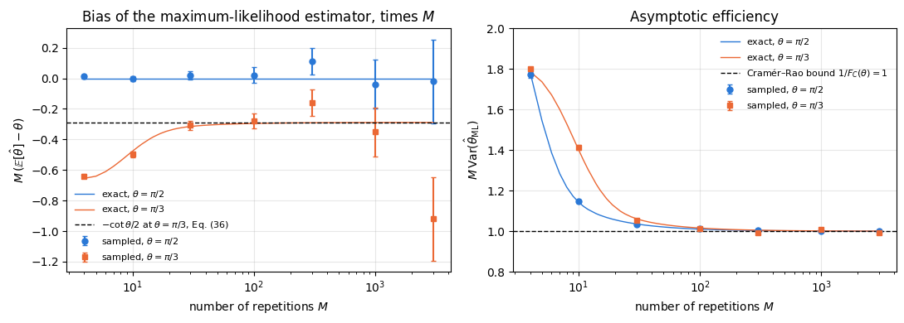
Every sampled point agrees with the exact finite-\(M\) value within four standard errors (asserted), so the Monte-Carlo data and the binomial sum are two independent views of the same estimator. The left panel plots the bias multiplied by \(M\), so that a \(1/M\) law appears as a plateau. At \(\theta=\pi/3\) the exact curve settles on the delta-method value \(-\cot\theta/2=-0.289\) of Eq. (36) (within \(1\%\) from \(M=300\) on, asserted), so the bias falls like \(1/M\); the sampled points follow it with error bars that grow with \(M\), because the bias shrinks faster than the Monte-Carlo noise of \(40\,000\) experiments. At \(\theta=\pi/2\) the exact bias is zero at every \(M\), and the sampled values scatter around zero within their error bars. The wrong control makes the same point quantitatively: at \(\theta=\pi/3\), \(M=10\) the sampled bias excludes “unbiased” by the number of standard errors printed above.
The right panel shows the efficiency. The scaled variance \(M\,\mathrm{Var}\) starts well above the bound at \(M=4\) (exactly \(1.78\) at \(\theta=\pi/2\) and \(1.79\) at \(\theta=\pi/3\)) — a handful of outcomes is not enough to invert a cosine reliably — and approaches \(1/F_C(\theta)=1\) from above: at \(\theta=\pi/2\) the exact excess is \(3.6\%\) at \(M=30\), \(1.0\%\) at \(M=100\) and \(0.03\%\) at \(M=3000\); at \(\theta=\pi/3\) the approach is slower at small \(M\) (\(40\%\) excess at \(M=10\)). For a regular model the Cramér–Rao bound is therefore the achievable precision once enough data have been collected.
Common pitfall. “My estimator beat the Cramér–Rao bound” almost always means “my estimator is biased”. At \(M=4\) above one can indeed construct estimators with a smaller variance than \(1/(MF_C)\) — they shrink towards a fixed guess and pay for it with bias. Eq. (23) constrains the variance only for (locally) unbiased estimators; Eq. (7) is what you should minimise.
5. The quantum meter: symmetric logarithmic derivative and quantum Fisher information
5.1 A quantum meter, and a Fisher information for every measurement
Nothing in Sections 3 and 4 was quantum: the theory used only the distribution \(p(x\vert\theta)\) of the readings. From now on the meter is a quantum system. Its state is a density matrix \(\rho_\theta\) — a Hermitian, positive semidefinite matrix of unit trace (introduced in 07 — density matrices and quantum channels); a pure state \(\vert\psi_\theta\rangle\) corresponds to \(\rho_\theta=\vert\psi_\theta\rangle\langle\psi_\theta\vert\). The way \(\theta\) enters the state is called the encoding. The most important encoding, and the one used throughout this chapter, is a unitary evolution generated by a Hermitian operator \(G\) (the generator),
A magnetic field \(B\) acting for a time \(t\) on spins rotates them about the field axis, so \(\theta=\gamma Bt\) with \(G=J_z\); an optical path-length difference \(\Delta L\) gives \(\theta=2\pi\Delta L/\lambda\); a clock compares an atomic transition frequency with a laser, \(\theta=(\omega_{\text{atom}}-\omega_{\text{laser}})t\). The derivative of the encoded state follows from \(\partial_\theta U=-iGU\) and \(\partial_\theta U^\dagger=iU^\dagger G\) (the generator commutes with its own exponential):
A measurement is described by a POVM (positive operator-valued measure): one operator \(E_x\) for every outcome \(x\), with \(E_x\) positive semidefinite and \(\sum_xE_x=\mathbb 1\) (first used in 20 — quantum teleportation, Section 8). A projective measurement in an orthonormal basis \(\{\vert x\rangle\}\), the measurement of 08 — measurements, is the special case \(E_x=\vert x\rangle\langle x\vert\). The Born rule gives the distribution of the readings,
which is non-negative because \(E_x\) and \(\rho_\theta\) are positive, and normalised because \(\sum_x\mathrm{Tr}(E_x\rho_\theta)=\mathrm{Tr}(\mathbb 1\,\rho_\theta)=1\). Every result of Sections 3 and 4 now applies to the quantum meter, with one new feature: the distribution, and with it the Fisher information, depends on which POVM we choose. Since the trace is linear, \(\partial_\theta p(x\vert\theta)=\mathrm{Tr}(E_x\,\partial_\theta\rho_\theta)\), and Eq. (13) becomes
A poorly chosen measurement can give \(F_C=0\). For a GHZ state with \(G=J_z\), measuring every qubit along \(z\) produces outcome statistics that do not depend on \(\theta\) at all, so no estimator can extract the phase from that data. A good measurement makes \(F_C\) as large as possible. The rest of this section finds the largest value and shows that it is a property of the state alone. The key object is an operator analogue of the score.
5.2 The symmetric logarithmic derivative
The classical score is the logarithmic derivative of the distribution: by Eq. (11), \(\partial_\theta p=p\,s\). The quantum analogue would be an operator \(L\) with “\(\partial_\theta\rho=\rho L\)”. This cannot work as it stands, because \(\partial_\theta\rho\) is Hermitian while \(\rho L\) is not Hermitian unless \(\rho\) and \(L\) commute. The product is therefore replaced by its symmetrised form. The symmetric logarithmic derivative (SLD) \(L_\theta\) is the Hermitian operator that solves
The right-hand side is Hermitian whenever \(L_\theta\) is, since \((L\rho+\rho L)^\dagger=\rho L+L\rho\); this is the “symmetric” in the name. The “logarithmic” refers to the classical limit. If all states \(\rho_\theta\) are diagonal in one fixed basis, \(\rho_\theta=\sum_m\lambda_m(\theta)\vert m\rangle\langle m\vert\), then \(\rho\) and \(\partial_\theta\rho\) commute, and Eq. (42) is solved by
as one checks by inserting it: \(\tfrac12(L\rho+\rho L)=\sum_m\partial_\theta\lambda_m\vert m\rangle\langle m\vert=\partial_\theta\rho\). The eigenvalues of \(L\) are then exactly the scores of the probability distribution \(\lambda_m(\theta)\).
Like the score, the SLD has zero mean. Take the trace of Eq. (42) and use \(\mathrm{Tr}(L\rho)=\mathrm{Tr}(\rho L)\) (cyclic property of the trace):
Equation (42) is linear in \(L\) and is solved in the eigenbasis of the state. Write \(\rho=\sum_m\lambda_m\vert m\rangle\langle m\vert\) and take the matrix element \(\langle m\vert\cdot\vert n\rangle\) of Eq. (42). Since \(\rho\vert n\rangle=\lambda_n\vert n\rangle\) and \(\langle m\vert\rho=\lambda_m\langle m\vert\), every matrix element decouples, and
Elements with \(\lambda_m=\lambda_n=0\) are not fixed by Eq. (42); they do not contribute to anything computed below. Notebook 30 — QFI from the SLD (Section 5) treats this kernel in detail and builds the SLD numerically for mixed states.
5.3 The quantum Fisher information and the Braunstein–Caves inequality
By analogy with \(F_C=\mathbb{E}[s^2]\), the quantum Fisher information is the mean square of the SLD,
which by Eq. (44) is also the variance of \(L_\theta\) in the state \(\rho_\theta\). A working formula follows from the eigenbasis. Since \(\rho\vert m\rangle=\lambda_m\vert m\rangle\) and \(\langle m\vert L^2\vert m\rangle=\sum_n\vert L_{mn}\vert^2\),
where the last step averages the double sum with its copy in which \(m\) and \(n\) are exchanged (\(\vert L_{mn}\vert=\vert L_{nm}\vert\) because \(L\) is Hermitian). Inserting Eq. (45),
For the unitary encoding the derivative is the commutator of Eq. (39), whose matrix elements are \((\partial_\theta\rho)_{mn}=-i\langle m\vert(G\rho-\rho G)\vert n\rangle=-i(\lambda_n-\lambda_m)G_{mn}\) with \(G_{mn}=\langle m\vert G\vert n\rangle\). Hence
the formula implemented by the engine’s qfi_mixed. It depends on the state and the generator, and on no measurement. The next theorem shows why it deserves its name.
Theorem (Braunstein and Caves 1994). For every POVM \(\{E_x\}\),
The two traces are complex conjugates of each other: \(\overline{\mathrm{Tr}(E_x\rho L)}=\mathrm{Tr}\big((E_x\rho L)^\dagger\big)=\mathrm{Tr}(L\rho E_x)=\mathrm{Tr}(E_xL\rho)\), using that \(E_x\), \(\rho\) and \(L\) are Hermitian and the cyclic property. The sum of a number and its conjugate is twice its real part, so
Step 2: write the trace as an inner product of two matrices. Positive semidefinite matrices have positive semidefinite square roots \(E_x^{1/2}\) and \(\rho^{1/2}\). Define \(A=E_x^{1/2}\rho^{1/2}\) and \(B=E_x^{1/2}L\rho^{1/2}\). Then, by cyclicity,
Step 3: Cauchy–Schwarz. The expression \(\langle A,B\rangle=\mathrm{Tr}(A^\dagger B)=\sum_{ij}\overline{A_{ij}}B_{ij}\) is the ordinary inner product of the two matrices regarded as long vectors of their entries, so the Cauchy–Schwarz inequality \(\vert\langle A,B\rangle\vert^2\le\langle A,A\rangle\langle B,B\rangle\) holds for it. Together with \((\mathrm{Re}\,z)^2\le\vert z\vert^2\),
\[\left(\partial_\theta p_x\right)^2\le\left\vert\mathrm{Tr}(A^\dagger B)\right\vert^2
\le\mathrm{Tr}(A^\dagger A)\,\mathrm{Tr}(B^\dagger B)
=\mathrm{Tr}\!\left(E_x\rho\right)\,\mathrm{Tr}\!\left(E_xL\rho L\right) , \tag{54}\]
where \(\mathrm{Tr}(A^\dagger A)=\mathrm{Tr}(\rho^{1/2}E_x\rho^{1/2})=\mathrm{Tr}(E_x\rho)=p_x\) and \(\mathrm{Tr}(B^\dagger B)=\mathrm{Tr}(\rho^{1/2}LE_xL\rho^{1/2})=\mathrm{Tr}(E_xL\rho L)\), again by cyclicity.
Step 4: sum over outcomes. For outcomes with \(p_x>0\) divide by \(p_x\). (For outcomes with \(p_x=0\), Eq. (54) forces \(\partial_\theta p_x=0\); such outcomes are left out of the Fisher information, as in Eq. (13).) Summing and using \(\sum_xE_x=\mathbb 1\):
Proof of attainability. Let \(L=\sum_x\ell_x\vert\ell_x\rangle\langle\ell_x\vert\) be the eigendecomposition of the SLD and measure the projectors \(E_x=\vert\ell_x\rangle\langle\ell_x\vert\). Using Eq. (42) and \(L\vert\ell_x\rangle=\ell_x\vert\ell_x\rangle\) on both sides of \(\rho\),
Combining the two parts, the quantum Fisher information is the largest classical Fisher information that any measurement on \(\rho_\theta\) can produce,
The SLD and the quantum Cramér–Rao bound go back to Helstrom’s quantum estimation theory (Helstrom 1976); the inequality (50) for every POVM, with the proof given above, and its geometric interpretation are due to Braunstein and Caves (1994). The optimal measurement is local in the parameter: \(L_\theta\) depends on \(\theta\), so the basis that reaches the bound at one working point need not reach it at another. An experiment reaches \(F_Q\) by using a rough estimate of \(\theta\) to choose the basis and then refining — adaptively, or by working at a fixed operating point as the interferometers of notebooks 31 and 32 do.
5.4 Additivity and the quantum Cramér–Rao bound
The quantum Fisher information adds up over independent subsystems, exactly as Eq. (18) does for repetitions. Let \(\rho=\rho_1\otimes\rho_2\), where each factor carries its own copy of the parameter (two repetitions of the experiment, or two qubits with \(G=G_1\otimes\mathbb 1+\mathbb 1\otimes G_2\)). The product rule gives \(\partial_\theta\rho=\partial_\theta\rho_1\otimes\rho_2+\rho_1\otimes\partial_\theta\rho_2\). Try \(L=L_1\otimes\mathbb 1+\mathbb 1\otimes L_2\), with \(L_1\) and \(L_2\) the SLDs of the factors:
For \(M\) independent copies, \(F_Q[\rho_\theta^{\otimes M}]=M\,F_Q[\rho_\theta]\). Chaining Eq. (23) for the chosen measurement with Eq. (50) gives the quantum Cramér–Rao bound,
It inherits the conditions of Eq. (23): \(\hat\theta\) is (locally) unbiased as a function of all \(M\) outcomes, and the model is regular at \(\theta\). Measuring the \(M\) copies jointly with an entangled POVM does not beat it either, because by Eq. (60) the \(M\)-copy state has quantum Fisher information \(MF_Q\), and Eq. (50) applied to that state gives the same right-hand side. Equality in Eq. (61) is reached asymptotically, for large \(M\), by measuring each copy in the optimal basis and processing the outcomes with the maximum-likelihood estimator of Section 4.8.
The code below tests Sections 5.2 and 5.3 on a random full-rank state of two qubits (\(d=4\)) with a random Hermitian generator. It builds the SLD from Eq. (45), checks Eqs. (42), (44), (46) and (49), computes the classical Fisher information of \(600\) random POVMs with Eq. (41), and measures in the eigenbasis of \(L\). A random POVM with \(n\) outcomes is generated from \(n\) random complex matrices \(A_x\) as \(E_x=S^{-1/2}A_x^\dagger A_xS^{-1/2}\) with \(S=\sum_xA_x^\dagger A_x\), which is positive and sums to \(\mathbb 1\) by construction. The wrong control is the unsymmetrised logarithmic derivative \(\Lambda=\rho^{-1}\partial_\theta\rho\), the naive analogue of \(\partial_\theta p/p\); it is neither Hermitian nor a solution of Eq. (42). A second control measures in the eigenbasis of \(\rho_\theta\) itself, which by Eq. (39) has \(\partial_\theta p_m=-i(\lambda_m-\lambda_m)G_{mm}=0\) and therefore learns nothing about \(\theta\).
Code
# ==============================================================================# STEP 4: the Braunstein-Caves inequality, Eq. (50), tested on random measurements# ==============================================================================# PARAMETERS ------------------------------------------------------------------D_BC =4# Hilbert-space dimension (two qubits)THETA_BC =0.4# working pointN_POVM_EACH =200# random POVMs per number of outcomesOUTCOMES = (2, 4, 8) # numbers of outcomes of the random POVMs# -----------------------------------------------------------------------------def random_density_matrix(key, d):"""Random full-rank mixed state rho = A A^dag / Tr(A A^dag), A with i.i.d. complex Gaussian entries.""" k1, k2 = jax.random.split(key) A = jax.random.normal(k1, (d, d)) +1j* jax.random.normal(k2, (d, d)) rho = A @ A.conj().Treturn (rho / jnp.trace(rho)).astype(CDTYPE)def random_hermitian(key, d):"""Random Hermitian d x d matrix (A + A^dag)/2 with i.i.d. complex Gaussian A -- a random generator G.""" k1, k2 = jax.random.split(key) A = jax.random.normal(k1, (d, d)) +1j* jax.random.normal(k2, (d, d))return ((A + A.conj().T) /2).astype(CDTYPE)def encode_unitary(rho, G, theta):"""Eq. (38): rho_theta = U rho U^dag with U = exp(-i theta G), built from the eigendecomposition of G. JAX eigh(G) does not depend on theta, so jax.jacfwd with respect to theta only differentiates the phases. """ g, V = jnp.linalg.eigh(G) U = (V * jnp.exp(-1j* theta * g)) @ V.conj().Treturn U @ rho @ U.conj().Tdef random_povm(key, d, n_out):"""Random POVM with n_out outcomes: E_x = S^{-1/2} A_x^dag A_x S^{-1/2}, S = sum_x A_x^dag A_x. MATH each E_x is positive semidefinite and sum_x E_x = S^{-1/2} S S^{-1/2} = 1. """ k1, k2 = jax.random.split(key) A = jax.random.normal(k1, (n_out, d, d)) +1j* jax.random.normal(k2, (n_out, d, d)) B = jnp.einsum("xba,xbc->xac", A.conj(), A) # A_x^dag A_x s, W = jnp.linalg.eigh(B.sum(axis=0)) S_mhalf = (W * s **-0.5) @ W.conj().Treturn jnp.einsum("ab,xbc,cd->xad", S_mhalf, B, S_mhalf).astype(CDTYPE)def povm_fisher(E, rho, G, theta):"""Classical Fisher information, Eq. (41), of the POVM E (shape (n_out, d, d)) on the encoded state. MATH p_x(theta) = Re Tr(E_x rho_theta); F_C = sum_x (dp_x/dtheta)^2 / p_x (forward-mode AD for dp/dtheta) """ probs =lambda t: jnp.real(jnp.einsum("xab,ba->x", E, encode_unitary(rho, G, t)))return fisher_information_ad(probs, theta)def sld_full_rank(rho, drho):"""SLD of a FULL-RANK state from Eq. (45): L_mn = 2 (drho)_mn / (lam_m + lam_n) in the eigenbasis of rho. (Rank-deficient states need the kernel treatment of notebook 30; here every lam_m > 0.) """ lam, V = jnp.linalg.eigh(rho) D = V.conj().T @ drho @ Vreturn V @ (2* D / (lam[:, None] + lam[None, :])) @ V.conj().Trho0 = random_density_matrix(jax.random.PRNGKey(21), D_BC)G_bc = random_hermitian(jax.random.PRNGKey(22), D_BC)rho_t = encode_unitary(rho0, G_bc, THETA_BC)drho_t = jax.jacfwd(lambda t: encode_unitary(rho0, G_bc, t))(THETA_BC) # derivative by automatic differentiationL_bc = sld_full_rank(rho_t, drho_t)F_Q_bc =float(jnp.real(jnp.trace(rho_t @ L_bc @ L_bc))) # Eq. (46)checks = {"commutator, Eq. (39)": max_abs(drho_t +1j* (G_bc @ rho_t - rho_t @ G_bc)),"SLD equation, Eq. (42)": max_abs(drho_t -0.5* (L_bc @ rho_t + rho_t @ L_bc)),"L Hermitian": max_abs(L_bc - L_bc.conj().T),"Tr(rho L) = 0, Eq. (44)": abs(complex(jnp.trace(rho_t @ L_bc))),"Tr(rho L^2) - Eq. (49) [qfi_mixed]": abs(F_Q_bc -float(qfi_mixed(rho_t, G_bc)))}for name, err in checks.items():print(f"{name:>40s}: {err:.2e}")assert err <1e4* TOL# random POVMs: vmap over keys for each number of outcomes (n_out is static: it fixes the array shapes)print(f"\nF_Q = Tr(rho L^2) = {F_Q_bc:.6f}")ratios = []for j, n_out inenumerate(OUTCOMES): keys = jax.random.split(jax.random.PRNGKey(100+ j), N_POVM_EACH) Es = jax.vmap(lambda k: random_povm(k, D_BC, n_out))(keys) Fc = jax.vmap(lambda E: povm_fisher(E, rho0, G_bc, THETA_BC))(Es) r = np.asarray(Fc) / F_Q_bc ratios.append(r)print(f"{N_POVM_EACH} random POVMs with {n_out} outcomes: F_C/F_Q min {r.min():.4f} mean {r.mean():.4f} max {r.max():.4f}")assertmax(r.max() for r in ratios) <=1+1e4* TOL # Eq. (50) for every POVM# the eigenbasis of L reaches the bound, and the eigenvalues of L are the scores of its outcomes, Eq. (56)ell, W = jnp.linalg.eigh(L_bc)E_opt = jnp.einsum("ax,bx->xab", W, W.conj())F_opt =float(povm_fisher(E_opt, rho0, G_bc, THETA_BC))probs_opt =lambda t: jnp.real(jnp.einsum("xab,ba->x", E_opt, encode_unitary(rho0, G_bc, t)))score_opt = jax.jacfwd(probs_opt)(THETA_BC) / probs_opt(THETA_BC)print(f"eigenbasis of L: F_C = {F_opt:.6f} (F_Q = {F_Q_bc:.6f}); max |score_x - ell_x| = {max_abs(score_opt - ell):.2e}")assertabs(F_opt - F_Q_bc) <1e4* TOL and max_abs(score_opt - ell) <1e4* TOL# CONTROL: the eigenbasis of rho_theta itself gives F_C = 0 for a unitary encoding_, Vr = jnp.linalg.eigh(rho_t)F_rho =float(povm_fisher(jnp.einsum("ax,bx->xab", Vr, Vr.conj()), rho0, G_bc, THETA_BC))print(f"eigenbasis of rho_theta: F_C = {F_rho:.2e}")assert F_rho <1e4* TOL# WRONG CONTROL: the unsymmetrised logarithmic derivative rho^{-1} drho is not Hermitian and does not solve Eq. (42)Lam = jnp.linalg.solve(rho_t, drho_t)res_wrong, herm_wrong = max_abs(drho_t -0.5* (Lam @ rho_t + rho_t @ Lam)), max_abs(Lam - Lam.conj().T)print(f"wrong control rho^-1 drho: SLD residual {res_wrong:.3f}, non-Hermiticity {herm_wrong:.3f}")assert res_wrong >1e-2and herm_wrong >1e-2
200 random POVMs with 2 outcomes: F_C/F_Q min 0.0000 mean 0.0360 max 0.3735
200 random POVMs with 4 outcomes: F_C/F_Q min 0.0004 mean 0.0439 max 0.1779
200 random POVMs with 8 outcomes: F_C/F_Q min 0.0113 mean 0.0529 max 0.1513
eigenbasis of L: F_C = 3.858571 (F_Q = 3.858571); max |score_x - ell_x| = 2.22e-15
eigenbasis of rho_theta: F_C = 3.30e-31
wrong control rho^-1 drho: SLD residual 6.544, non-Hermiticity 32.215
The SLD built from Eq. (45) solves Eq. (42) to round-off, is Hermitian, has zero mean, and its mean square agrees with the engine’s implementation of Eq. (49). None of the \(600\) random POVMs exceeds \(F_Q\); their average sits well below it, and adding outcomes raises the typical value without ever crossing the bound. The projective measurement in the eigenbasis of \(L\) reaches \(F_Q\) exactly, and the score of each of its outcomes is the corresponding eigenvalue of \(L\), as Eq. (56) states. The eigenbasis of the state itself gives \(F_C=0\). The naive operator \(\rho^{-1}\partial_\theta\rho\) fails both tests by an amount of order one, which is why the symmetrised definition is needed.
6. Pure states: the quantum Fisher information reduces analytically to \(4\,\mathrm{Var}(G)\)
For a pure state the SLD equation can be solved by hand, and the quantum Fisher information becomes an expectation value that requires no diagonalisation. We derive this in three steps — the SLD of a pure state, \(F_Q\) in terms of the state vector, and the unitary encoding — and then interpret the result geometrically.
6.1 The SLD of a pure state
A pure state is a projector, \(\rho_\theta=\vert\psi_\theta\rangle\langle\psi_\theta\vert\) with \(\langle\psi_\theta\vert\psi_\theta\rangle=1\), so
This \(L\) is Hermitian, as required. (Other solutions differ from it only inside the kernel of \(\rho\), where Eq. (45) leaves the SLD undetermined, and give the same \(F_Q\).)
6.2 The quantum Fisher information in terms of the state vector
Write \(\vert\psi\rangle=\vert\psi_\theta\rangle\) and \(\vert\dot\psi\rangle=\partial_\theta\vert\psi_\theta\rangle\) for the state and its velocity. The product rule gives
so \(\langle\psi\vert\dot\psi\rangle=i\beta\) is purely imaginary, with real \(\beta\). Now evaluate Eq. (46) with Eq. (65). For any operator \(X\), \(\mathrm{Tr}(\vert\psi\rangle\langle\psi\vert X)=\langle\psi\vert X\vert\psi\rangle\), and \(\partial_\theta\rho\) is Hermitian, so
The bracket is the squared length of the part of the velocity orthogonal to the state, \(\vert\dot\psi_\perp\rangle=\vert\dot\psi\rangle-\vert\psi\rangle\langle\psi\vert\dot\psi\rangle\). The component along \(\vert\psi\rangle\) only changes the global phase, which no measurement can detect, and Eq. (71) removes it.
6.3 Unitary encoding: \(F_Q=4\,\mathrm{Var}(G)\)
For \(\vert\psi_\theta\rangle=e^{-i\theta G}\vert\psi\rangle\) the velocity is
independent of \(\theta\). A large spread of the generator in the probe state makes the state move fast under the encoding.
6.4 Geometric meaning: how fast the state moves
The title of this notebook describes \(F_Q\) as the speed at which a state changes. To make this precise, compare \(\vert\psi_\theta\rangle\) with its neighbour \(\vert\psi_{\theta+\delta}\rangle\) through the fidelity\(\vert\langle\psi_\theta\vert\psi_{\theta+\delta}\rangle\vert^2\), the probability that the second state passes a test for being the first. It equals \(1\) for identical states (up to a phase) and \(0\) for orthogonal ones. We expand it to second order in \(\delta\) for an arbitrary smooth curve of normalised states, not necessarily a unitary encoding.
Differentiating Eq. (67) once more gives a relation for the second derivative \(\vert\ddot\psi\rangle\):
The Taylor expansion of the overlap \(a(\delta)=\langle\psi_\theta\vert\psi_{\theta+\delta}\rangle\), with \(\langle\psi\vert\dot\psi\rangle=i\beta\) from Eq. (67) and \(\langle\psi\vert\ddot\psi\rangle=-\langle\dot\psi\vert\dot\psi\rangle+i\gamma\) from Eq. (76) (\(\gamma\) real), is
The quantum Fisher information is the curvature with which the fidelity drops away from \(1\). Measured as an angle between rays, \(s=\arccos\vert\langle\psi_\theta\vert\psi_{\theta+\delta}\rangle\vert\) (the Fubini–Study distance), the expansion \(\cos s=1-s^2/2+O(s^4)\) compared with \(\sqrt{1-F_Q\delta^2/4}=1-F_Q\delta^2/8+O(\delta^3)\) gives
So \(\sqrt{F_Q}/2\) is the speed at which the state moves through the space of quantum states when \(\theta\) changes. A fast-moving state becomes distinguishable from its neighbours after a small change of \(\theta\), which is why it allows a precise estimate. This geometric reading, with the statistical distance between neighbouring states, is the subject of Braunstein and Caves (1994). For mixed states the fidelity is replaced by the Bures (Uhlmann) fidelity \(F_B\), and the relation becomes \(F_Q=\lim_{\delta\to0}8\left(1-\sqrt{F_B(\rho_\theta,\rho_{\theta+\delta})}\right)/\delta^2\), which reduces to Eq. (79) for pure states and is verified numerically in notebook 30 (Section 7.1).
The fidelity gives a second, independent route to Eq. (75) for the unitary encoding. Expand the exponential directly:
and comparison with Eq. (79) gives \(F_Q/4=\mathrm{Var}(G)\) again, without using the SLD.
6.5 Two corollaries
\(F_Q\) does not depend on \(\theta\) (Eq. (74)). We may evaluate everything at \(\theta=0\) and never encode at all when we only want \(F_Q\), which is a large practical saving.
A global phase is invisible. Replacing \(G\to G+c\,\mathbb 1\) multiplies \(U\) by the phase \(e^{-ic\theta}\) and leaves \(\mathrm{Var}(G)\) unchanged. Only the spread of the generator matters, never its mean.
6.6 A worked check on one qubit
One qubit, \(\vert\psi\rangle=\vert+\rangle=(\vert0\rangle+\vert1\rangle)/\sqrt2\), generator \(G=J_z=Z/2\). Then \(\langle J_z\rangle=0\) and \(J_z^2=\mathbb 1/4\), so \(\mathrm{Var}(J_z)=1/4\) and Eq. (75) gives \(F_Q=1\). A measurement along \(x\) reaches this value. Encode and measure:
which is precisely the model of Eq. (32), whose Fisher information we computed to be \(F_C=1\) for every \(\theta\) except the two irregular points \(\theta=0,\pi\). So the single-qubit interferometer saturates the quantum Cramér–Rao bound at every regular working point. That is the Ramsey protocol, and it is the subject of 31 — Ramsey interferometry.
6.7 Numerical check of the pure-state derivation
The code below verifies every step of Sections 6.1–6.4 on a random pure state of three qubits (\(d=8\)) and a random Hermitian generator, with the velocity \(\vert\dot\psi\rangle\) obtained by automatic differentiation of the encoded state: Eqs. (62), (63), (66), (65), (67), (72), the five expressions for \(F_Q\) (Eqs. (46), (71), (75) at two values of \(\theta\), and the engine’s Eq. (49)), the attainability of Eq. (50) in the eigenbasis of \(L=2\partial_\theta\rho\), and the fidelity expansion (79). Because Eqs. (71) and (79) hold for any curve of states, they are also tested on a non-unitary curve, \(\vert\phi_\theta\rangle=e^{1.3i\theta}(\vert\phi_0\rangle+\theta\vert\chi\rangle+\theta^2\vert\xi\rangle)/\Vert\cdot\Vert\) with random vectors, whose phase drift makes \(\langle\phi\vert\dot\phi\rangle\neq0\). Three wrong controls must fail: \(L=\partial_\theta\rho\) (factor \(2\) missing) does not solve the SLD equation, \(4\langle\dot\psi\vert\dot\psi\rangle\) (the overlap term of Eq. (71) dropped) is not \(F_Q\), and a fidelity curvature of \(F_Q/2\) instead of \(F_Q/4\) is rejected.
Code
# ==============================================================================# STEP 5: the pure-state derivation, Eqs. (62)-(79), checked line by line# ==============================================================================# PARAMETERS ------------------------------------------------------------------N_PS, THETA_PS =3, 0.4# three qubits (d = 8), working pointDELTAS = (1e-1, 1e-2, 1e-3, 1e-4) # step sizes for the fidelity expansion# -----------------------------------------------------------------------------d_ps =2** N_PSpsi_init = haar_state(jax.random.PRNGKey(31), N_PS).reshape(-1)G_ps = random_hermitian(jax.random.PRNGKey(32), d_ps)g_ps, V_ps = jnp.linalg.eigh(G_ps)def psi_unitary(t):"""|psi_t> = exp(-i t G)|psi_init>, through the eigendecomposition of G."""return V_ps @ (jnp.exp(-1j* t * g_ps) * (V_ps.conj().T @ psi_init))k1, k2, k3 = jax.random.split(jax.random.PRNGKey(33), 3)chi = (jax.random.normal(k1, (d_ps,)) +1j* jax.random.normal(k2, (d_ps,))).astype(CDTYPE)xi = (jax.random.normal(k3, (d_ps,)) +1j* jax.random.normal(k1, (d_ps,))).astype(CDTYPE)def phi_curve(t):"""A NON-unitary smooth curve of normalised states with a phase drift: e^{1.3 i t} (psi + t chi + t^2 xi)/norm.""" v = psi_init + t * chi + t **2* xireturn jnp.exp(1.3j* t) * v / jnp.linalg.norm(v)def pure_state_checks(curve, t0):"""All quantities of Sections 6.1-6.4 for a curve of pure states at t0. Returns a dict of numbers.""" psi, dpsi = curve(t0), jax.jacfwd(curve)(t0) rho = jnp.outer(psi, psi.conj()) drho = jnp.outer(dpsi, psi.conj()) + jnp.outer(psi, dpsi.conj()) # Eq. (66) drho_ad = jax.jacfwd(lambda t: jnp.outer(curve(t), curve(t).conj()))(t0) # independent: AD of rho itself L =2* drho # Eq. (65) ov = jnp.vdot(psi, dpsi) out = {"rho^2 = rho, Eq. (62)": max_abs(rho @ rho - rho),"product rule, Eq. (66)": max_abs(drho - drho_ad),"rho drho + drho rho = drho, Eq. (63)": max_abs(rho @ drho + drho @ rho - drho),"SLD equation with L = 2 drho": max_abs(drho -0.5* (L @ rho + rho @ L)),"Re <psi|dpsi> = 0, Eq. (67)": abs(float(jnp.real(ov)))} F_trace =float(jnp.real(jnp.trace(rho @ L @ L))) # Eq. (46) F_vec =float(4* (jnp.real(jnp.vdot(dpsi, dpsi)) - jnp.abs(ov) **2)) # Eq. (71) wrong_L = max_abs(drho -0.5* (drho @ rho + rho @ drho)) # WRONG CONTROL: L = drho wrong_F =float(4* jnp.real(jnp.vdot(dpsi, dpsi))) # WRONG CONTROL: overlap term dropped fid = []for dl in DELTAS: a = jnp.vdot(psi, curve(t0 + dl)) fid.append((dl, float((1- jnp.abs(a) **2) / dl **2) / (F_trace /4),float(jnp.arccos(jnp.clip(jnp.abs(a), 0, 1)) / dl) / (np.sqrt(F_trace) /2)))return out, F_trace, F_vec, wrong_L, wrong_F, fid, rho, psi, dpsiprint("unitary curve exp(-i theta G)|psi>, random G, three qubits")out, F_tr, F_vec, wrong_L, wrong_F, fid_u, rho_ps, psi_ps, dpsi_ps = pure_state_checks(psi_unitary, THETA_PS)var4 =lambda v: float(4* (jnp.real(jnp.vdot(v, G_ps @ (G_ps @ v))) - jnp.real(jnp.vdot(v, G_ps @ v)) **2))out["velocity -iG|psi>, Eq. (72)"] = max_abs(dpsi_ps +1j* (G_ps @ psi_ps))for name, err in out.items():print(f" {name:>46s}: {err:.2e}")assert err <1e4* TOLF_list = {"Tr(rho L^2), Eq. (46)": F_tr, "4(<dpsi|dpsi> - |<psi|dpsi>|^2), Eq. (71)": F_vec,"4 Var(G) at theta, Eq. (75)": var4(psi_ps), "4 Var(G) at theta = 0, Eq. (74)": var4(psi_init),"qfi_mixed, Eq. (49)": float(qfi_mixed(rho_ps, G_ps))}for name, val in F_list.items():print(f" {name:>46s}: {val:.12f}")assertabs(val - F_tr) <1e4* TOL# attainability: projective measurement in the eigenbasis of L = 2 drho_, W_ps = jnp.linalg.eigh(2* (jnp.outer(dpsi_ps, psi_ps.conj()) + jnp.outer(psi_ps, dpsi_ps.conj())))F_opt_ps =float(povm_fisher(jnp.einsum("ax,bx->xab", W_ps, W_ps.conj()), jnp.outer(psi_init, psi_init.conj()), G_ps, THETA_PS))print(f" {'F_C in the eigenbasis of L = 2 drho':>46s}: {F_opt_ps:.12f}")assertabs(F_opt_ps - F_tr) <1e4* TOLprint(f" WRONG CONTROL L = drho: SLD residual {wrong_L:.3f}; WRONG CONTROL 4<dpsi|dpsi> = {wrong_F:.4f} vs F_Q = {F_tr:.4f}")assert wrong_L >1e-2andabs(wrong_F - F_tr) >1e-2print("\nnon-unitary curve with a phase drift")out_c, F_tr_c, F_vec_c, wrong_L_c, wrong_F_c, fid_c, *_ = pure_state_checks(phi_curve, THETA_PS)for name, err in out_c.items():assert err <1e4* TOLprint(f" Tr(rho L^2) = {F_tr_c:.10f}, Eq. (71): {F_vec_c:.10f}, wrong control 4<dphi|dphi> = {wrong_F_c:.4f}")assertabs(F_tr_c - F_vec_c) <1e4* TOL andabs(wrong_F_c - F_tr_c) >1e-2print(f"\nfidelity expansion, Eq. (79): ratio (1-|<psi|psi+delta>|^2)/delta^2 / (F_Q/4), and speed ratio, Eq. (80)")print(f" {'delta':>8s} | {'unitary: fid.':>14s}{'speed':>9s} | {'non-unitary: fid.':>18s}{'speed':>9s}")for (dl, ru, su), (_, rc, sc) inzip(fid_u, fid_c):print(f" {dl:8.0e} | {ru:14.8f}{su:9.6f} | {rc:18.8f}{sc:9.6f}")assertabs(fid_u[-1][1] -1) <1e-6andabs(fid_c[-1][1] -1) <1e-3andabs(fid_c[-1][2] -1) <1e-3# WRONG CONTROL: a curvature F_Q/2 would make the ratio 1/2assertabs(fid_u[-1][1] -0.5) >0.4andabs(fid_c[-1][1] -0.5) >0.4
unitary curve exp(-i theta G)|psi>, random G, three qubits
F_C in the eigenbasis of L = 2 drho: 29.260173727445
WRONG CONTROL L = drho: SLD residual 0.408; WRONG CONTROL 4<dpsi|dpsi> = 29.4162 vs F_Q = 29.2602
non-unitary curve with a phase drift
Every identity of Sections 6.1–6.3 holds to round-off, and the five expressions for \(F_Q\) agree to about twelve digits, including the variance evaluated in the unencoded state (\(\theta\)-independence) and the general mixed-state formula applied to the pure density matrix. The projective measurement in the eigenbasis of \(L=2\partial_\theta\rho\) attains \(F_Q\). The non-unitary curve confirms that Eq. (71) needs no unitary encoding; there the dropped overlap term would overestimate \(F_Q\) by the printed amount, because the phase drift makes \(\langle\phi\vert\dot\phi\rangle\) large.
The fidelity table shows the approach to Eq. (79). For the unitary curve the ratio converges like \(\delta^2\): \(\vert\langle\psi\vert e^{-i\delta G}\vert\psi\rangle\vert^2\) is an even function of \(\delta\), being the squared modulus of a function whose value at \(-\delta\) is the complex conjugate of its value at \(\delta\), so the \(O(\delta^3)\) term of Eq. (79) vanishes. For the non-unitary curve the convergence is linear in \(\delta\), as the generic \(O(\delta^3)\) remainder predicts. In both cases the speed \(ds/d\theta\) tends to \(\sqrt{F_Q}/2\), Eq. (80), and the curvature \(F_Q/2\) is excluded by a factor of two.
7. The encoding protocol, error propagation, and the two limits
7.1 Prepare, encode, measure, estimate
Every quantum-enhanced measurement in this chapter follows the same four stages, and each stage enters the error budget at a definite place.
Prepare a probe state \(\rho\) (pure, \(\vert\psi\rangle\), in the ideal case) of \(N\) particles.
Encode the parameter, \(\rho\to\rho_\theta=U(\theta)\rho\,U^\dagger(\theta)\) with \(U(\theta)=e^{-i\theta G}\), Eq. (38). In real devices the encoding is accompanied by noise, and the map becomes a channel \(\rho\to\Lambda_\theta(\rho)\); Sections 10, 14 and 15 treat this case.
Measure a POVM \(\{E_x\}\) on each of \(M\) independent copies of \(\rho_\theta\).
Estimate\(\theta\) from the \(M\) outcomes with an estimator \(\hat\theta\).
The first inequality is closed, asymptotically in \(M\), by the maximum-likelihood estimator (Section 4.8); the second by measuring in the eigenbasis of the SLD (Section 5.3). The last expression depends only on the probe and the generator. This is the only place where the choice of state, and in particular entanglement between the \(N\) particles, can improve the precision. The rest of this section computes it for the two probes that define the two limits of quantum metrology: a product state and a GHZ state, both with the same collective generator
\[G=J_z=\frac12\sum_{i=1}^{N}Z_i . \tag{85}\]
7.2 Error propagation and its relation to the Fisher information
Experiments often do not use the full outcome distribution. They measure an observable \(O\), average the results of \(M\) repetitions, and invert the calibration curve \(\langle O\rangle_\theta\). Write \(O=\sum_xo_x\Pi_x\) with eigenvalues \(o_x\) and eigenprojectors \(\Pi_x\); the outcome \(o_x\) occurs with probability \(p_x=\mathrm{Tr}(\Pi_x\rho_\theta)\). The sample mean \(\bar O\) of \(M\) outcomes has mean \(\langle O\rangle_\theta\) and variance \((\Delta O)^2/M\), where \((\Delta O)^2=\langle O^2\rangle_\theta-\langle O\rangle_\theta^2\). The estimator \(\hat\theta\) solves \(\langle O\rangle_{\hat\theta}=\bar O\). For large \(M\), \(\hat\theta\) is close to \(\theta\) and a first-order Taylor expansion of the calibration curve gives
It describes this particular estimator and cannot beat the Fisher information of the same measurement. To see this, write the slope of the signal as a covariance with the score. Using \(\sum_x\partial_\theta p_x=0\) to subtract the mean and \(\partial_\theta p_x=p_x\,s_x\) from Eq. (11),
Error propagation is therefore never better than the Cramér–Rao bound of the same measurement, which in turn is never better than the quantum bound. The first inequality is an equality when \(o_x-\langle O\rangle\) is proportional to the score \(s_x\), as in Section 4.6. This is automatically the case for a measurement with two outcomes, because any function of a two-valued variable is linear in it; it is also the case for the binomial count below, whose score is linear in the count.
7.3 The product state: \(F_Q=N\) and the standard quantum limit
Take \(\vert\psi\rangle=\vert+\rangle^{\otimes N}\), every spin pointing along \(+x\). For a single spin \(\langle Z_i\rangle=0\) and \(Z_i^2=\mathbb 1\); for two different spins of a product state the expectation value factorises, \(\langle Z_iZ_j\rangle=\langle Z_i\rangle\langle Z_j\rangle\). Therefore
No product state does better. For an arbitrary product state the cross terms cancel against the product of the means, so the variance of the sum is the sum of the single-spin variances, each at most \(1\):
The same argument works for any direction \(\mathbf n\), since \((\mathbf n\cdot\vec\sigma)^2=\mathbb 1\) for a unit vector, and equality needs every Bloch vector perpendicular to \(\mathbf n\). The bound extends to every separable state, pure or mixed, by the convexity of the quantum Fisher information (a mixture cannot have more QFI than the average of its components; proved in notebook 30, Section 5.5). With \(M\) repetitions Eq. (61) gives the standard quantum limit (SQL), also called the shot-noise limit,
A measurement that reaches it is the measurement of \(J_x\). By Eq. (83) each spin gives \(\pm1\) along \(x\) with probabilities \((1\pm\cos\theta)/2\), independently of the others, so \(\langle X_i\rangle=\cos\theta\) and \(\mathrm{Var}(X_i)=\sin^2\theta\). The signal and its noise are
The noise \(\tfrac{\sqrt N}{2}\vert\sin\theta\vert\) is the projection noise of \(N\) independent spins. The signal has one fringe per \(2\pi\) of phase whatever \(N\) is; only its amplitude grows, by \(N\), while the noise grows by \(\sqrt N\). The number of \(+\) outcomes is binomially distributed with \(N\) trials, its Fisher information is \(N\) times that of Eq. (33), i.e. \(N\), so this measurement is optimal. This is the Ramsey protocol of 31 — Ramsey interferometry: there a final \(\pi/2\) pulse maps \(J_x\) onto \(J_z\), and the signal \(\langle J_z\rangle=\tfrac N2\cos\varphi\) of its Eq. (7) is our Eq. (95).
7.4 The GHZ state: \(F_Q=N^2\) and the Heisenberg limit
The GHZ state \(\vert\mathrm{GHZ}\rangle=\left(\vert\bar0\rangle+\vert\bar1\rangle\right)/\sqrt2\), with \(\vert\bar0\rangle=\vert0\cdots0\rangle\) and \(\vert\bar1\rangle=\vert1\cdots1\rangle\), is a superposition of two eigenvectors of \(J_z\) with the two extreme eigenvalues. Since \(Z_i\vert0\rangle=\vert0\rangle\) and \(Z_i\vert1\rangle=-\vert1\rangle\),
Up to a global phase, the generator writes the phase \(N\theta\) into the relative phase of the two branches. Every spin contributes \(\theta/2\) to each branch, and because the branches differ on all \(N\) spins the contributions add.
The quantum Fisher information follows from Eq. (97), each branch having weight \(\tfrac12\):
because \(\vert A-c\vert\le(a_{\max}-a_{\min})/2\) for every value (Popoviciu’s inequality, Popoviciu 1935). The eigenvalues of \(J_z\) lie in \([-N/2,N/2]\), so \(\mathrm{Var}(J_z)\le N^2/4\) in every state, and
the Heisenberg limit. (For a mixed state, \(F_Q\le4\,\mathrm{Var}(G)\), shown in Section 14, gives the same bound.) Equality in Eq. (101) requires all weight on the two extreme eigenvalues, with probability \(\tfrac12\) each, which is exactly the GHZ state up to the relative phase of its branches.
The two calculations differ only in the cross terms. Written as in Eq. (91), the GHZ state has \(\langle Z_i\rangle=0\) but \(\langle Z_iZ_j\rangle=1\) for every pair (both branches give the product \(+1\)), so
In the product state the \(N\) single-spin variances add up to \(N/4\). In the GHZ state the \(N(N-1)\) correlations \(\langle Z_iZ_j\rangle=1\), which the product state lacks, add another \(N(N-1)/4\), and the variance becomes the square of the half-width of the spectrum.
A measurement that reaches the Heisenberg limit is the parity\(\Pi=X^{\otimes N}=\prod_iX_i\), obtained by measuring every spin along \(x\) and multiplying the \(N\) results. It exchanges the branches, \(\Pi\vert\bar0\rangle=\vert\bar1\rangle\) and \(\Pi\vert\bar1\rangle=\vert\bar0\rangle\), so in the state (98) only the cross terms survive:
The fringe oscillates \(N\) times faster than the single-spin fringe. Since \(\Pi^2=\mathbb 1\), \((\Delta\Pi)^2=1-\cos^2(N\theta)=\sin^2(N\theta)\), and Eq. (87) gives
The parity has two outcomes with probabilities \((1\pm\cos N\theta)/2\), the model of Eq. (32) with \(\theta\to N\theta\). By the chain rule each score acquires a factor \(N\), so its Fisher information is \(N^2\cdot1=N^2=F_Q\): parity is an optimal measurement. Its price is that \(\cos(N\theta)\) determines \(\theta\) only modulo \(2\pi/N\), a problem analysed in 32 — GHZ interferometry and the Heisenberg limit (Section 9).
7.5 The comparison stated precisely
Three different ratios are quoted for the same advantage, and it pays to keep them apart. At fixed \(N\) and \(M\):
The GHZ state carries \(N\) times the Fisher information of \(N\) unentangled spins, which reduces the error by a factor \(\sqrt N\). Compared with a single spin, \(N\) unentangled spins gain a factor \(N\) in Fisher information (\(\sqrt N\) in error), and \(N\) entangled spins a factor \(N^2\) (\(N\) in error).
What is counted. Both limits compare strategies at a fixed number of uses of the phase-imprinting interaction. In the parallel scheme used throughout this notebook each of the \(N\) qubits acquires the phase exactly once per run (the generator \(J_{\mathbf n}\) has one term \(\tfrac12\mathbf n\cdot\vec\sigma_q\) per qubit), and the run is repeated \(M\) times, so the resource is \(\nu=MN\) single-qubit phase imprints. The SQL is then \(\Delta\theta=1/\sqrt{\nu}\) and the Heisenberg limit \(\Delta\theta=\sqrt M/\nu\). Neither the interrogation time, nor ancilla qubits that do not see the phase, nor the cost of preparing the state enters the count; ancillas leave the spectral width of the generator, and therefore the bound \(F_Q\le N^2\), unchanged. Giovannetti, Lloyd and Maccone (2006) count resources in exactly this way, as the number of times the system is sampled, and also discuss a sequential protocol in which a single probe passes through the phase shift \(N\) times; it reaches the same \(1/N\) scaling with the same number of uses and no entanglement between probes.
8. From formula to code: the QFI without any big matrix
Equation (75) asks for two numbers, \(\langle G^2\rangle\) and \(\langle G\rangle\), for a collective generator \(G=\mathbf n\cdot\mathbf J\) with \(J_a=\tfrac12\sum_q\sigma^a_q\). The textbook route would build a \(2^N\times2^N\) matrix (memory \(16\cdot4^N\) bytes in complex double precision: \(4.3\) GB at \(N=14\), \(69\) GB at \(N=16\)). The matrix-free route needs only the action of \(G\):
apply \(\sigma^a\) to each axis in turn and add up, \(\;\vert\phi\rangle=G\vert\psi\rangle=\tfrac12\sum_q\sigma^a_q\vert\psi\rangle\) — that is apply_collective, \(N\) einsums, cost \(O(N2^N)\);
then \(\langle G\rangle=\langle\psi\vert\phi\rangle\) and \(\langle G^2\rangle=\langle\phi\vert\phi\rangle\), because \(G\) is Hermitian: \(\langle\psi\vert G^2\vert\psi\rangle=\langle G\psi\vert G\psi\rangle\).
Only two inner products are needed and no operator is stored. This is the engine’s qfi_pure, whose convention we must read carefully: it applies \(P_q\)without the factor \(\tfrac12\), i.e. it returns
which is \(4\,\mathrm{Var}(J_a)=F_Q\) in our convention: the engine already returns the quantum Fisher information for \(G=J_a\), and the two factors of \(2\) cancel exactly as they should.
For a direction \(\mathbf n=(n_x,n_y,n_z)\) we simply feed it the single-qubit matrix \(P=n_x X+n_y Y+n_z Z\), since \(\sum_q(\mathbf n\cdot\vec\sigma)_q=2\,\mathbf n\cdot\mathbf J\).
Code
# ==============================================================================# STEP 6: QFI of a pure state, matrix-free, and its dense validation# ==============================================================================def pauli_direction(n):"""Single-qubit matrix n.sigma = n_x X + n_y Y + n_z Z for a unit vector n (used as the generator direction).""" n = jnp.asarray(n, dtype=CDTYPE)return n[0] * X + n[1] * Y + n[2] * Zdef qfi_pure_direction(psi, n):"""QFI of a pure state for the collective generator G = n.J = (1/2) sum_q (n.sigma)_q. MATH F_Q = 4 Var(G) = <(2G)^2> - <2G>^2 with 2G = sum_q (n.sigma)_q. COST O(N 2^N) time, O(2^N) memory -- no 2^N x 2^N matrix is ever created. """return qfi_pure(psi, pauli_direction(n))def qfi_dense_reference(psi, n):"""Independent DENSE reference (validation only, small N): build J = (1/2) sum_q (n.sigma)_q as a matrix and evaluate 4(<J^2> - <J>^2) with ordinary linear algebra.""" N = psi.ndim J = collective_dense(pauli_direction(n), N) v = psi.reshape(-1) m1 = jnp.real(jnp.vdot(v, J @ v)) m2 = jnp.real(jnp.vdot(v, J @ (J @ v)))return4* (m2 - m1 **2)# --- CHECKPOINT: matrix-free vs dense vs the mixed-state formula on a pure density matrix ---------DIRS = {"z": (0.0, 0.0, 1.0), "x": (1.0, 0.0, 0.0), "y": (0.0, 1.0, 0.0),"tilted": tuple(np.array([1.0, 2.0, -2.0]) /3.0)}print(f"{'state':>10s}{'dir':>7s} | {'matrix-free':>13s}{'dense 4Var(J)':>15s}{'SLD formula':>13s}{'max err':>10s}")for name, psi in (("GHZ(5)", ghz_state(5)), ("W(5)", w_state(5)), ("Haar(5)", haar_state(jax.random.PRNGKey(0), 5))):for dname, n in DIRS.items(): f_free =float(qfi_pure_direction(psi, n)) f_dense =float(qfi_dense_reference(psi, n)) f_sld =float(qfi_mixed(dm_matrix(to_dm(psi)), collective_dense(pauli_direction(n), psi.ndim))) err =max(abs(f_free - f_dense), abs(f_free - f_sld))print(f"{name:>10s}{dname:>7s} | {f_free:13.8f}{f_dense:15.8f}{f_sld:13.8f}{err:10.2e}")assert err <1e4* TOL
state dir | matrix-free dense 4Var(J) SLD formula max err
GHZ(5) z | 25.00000000 25.00000000 25.00000000 1.07e-14
GHZ(5) x | 5.00000000 5.00000000 5.00000000 0.00e+00
GHZ(5) y | 5.00000000 5.00000000 5.00000000 0.00e+00
GHZ(5) tilted | 13.88888889 13.88888889 13.88888889 3.55e-15
W(5) z | 0.00000000 0.00000000 0.00000000 5.08e-32
W(5) x | 13.00000000 13.00000000 13.00000000 7.11e-15
W(5) y | 13.00000000 13.00000000 13.00000000 7.11e-15
W(5) tilted | 7.22222222 7.22222222 7.22222222 3.55e-15
Haar(5) z | 4.87591402 4.87591402 4.87591402 8.88e-16
Haar(5) x | 6.87389988 6.87389988 6.87389988 5.33e-15
Haar(5) y | 5.84437587 5.84437587 5.84437587 7.99e-15
Haar(5) tilted | 6.49801219 6.49801219 6.49801219 5.33e-15
Three independent routes — the matrix-free variance, the dense variance, and the general mixed-state (symmetric-logarithmic-derivative) formula applied to a pure density matrix — agree to \(10^{-14}\) or better for every state and direction. From here on we trust qfi_pure_direction and use it freely, with one reservation: all three routes obtain the generator from the same primitive apply_collective, so this test proves that the three formulas agree; it does not test whether the collective operator itself is built correctly. That gap is closed in Section 15, where the same quantity is recomputed from a state encoded gate by gate with apply_gate and differentiated by automatic differentiation.
JAX practice.apply_collective loops over qubits in Python, but the loop index is a static integer that only builds einsum strings: after jax.jit the whole sum is a single fused XLA program with no Python left in it. Static structure and traced data are what make this simulator fast.
9. Product state versus GHZ: simulated encoding, parity and QFI
We now check Section 7 against the simulator. The encoding \(e^{-i\theta J_z}\) is applied gate by gate, one \(R_z(\theta)=e^{-i\theta Z/2}\) per qubit with apply_gate, so the check does not rely on the analytic formula (98) it tests. For \(N=1,\dots,8\) the code compares the encoded GHZ state with Eq. (98) up to a global phase, the parity with Eq. (104), and the product-state signal and noise with Eq. (95). For \(N=1,\dots,14\) it evaluates \(F_Q\) for both probes with the matrix-free routine of Section 8 and compares it with Eqs. (92) and (100). The wrong control is the statement “the GHZ state is worth \(F_Q=N\)”, which must be rejected for every \(N\ge2\).
Code
# ==============================================================================# STEP 7: product state vs GHZ -- the formulas of Section 7 checked on state vectors# ==============================================================================# PARAMETERS ------------------------------------------------------------------THETA_CHK =0.37# an arbitrary working point for the state-vector checksN_SCALE =range(1, 15) # N for the F_Q table# -----------------------------------------------------------------------------def encode_jz(psi, theta):"""|psi> -> exp(-i theta J_z)|psi> = prod_q exp(-i theta Z_q / 2)|psi>, one diagonal single-qubit gate per qubit. COST N einsums, O(N 2^N); no 2^N x 2^N matrix. """ Rz = jnp.diag(jnp.exp(jnp.array([-0.5j, 0.5j]) * theta)).astype(CDTYPE)for q inrange(psi.ndim): # static loop over qubits -> N einsums psi = apply_gate(psi, Rz, [q])return psidef parity_x(psi):"""<X x X x ... x X>: apply X to every qubit and take the overlap with the original state.""" phi = psifor q inrange(psi.ndim): phi = apply_gate(phi, X, [q])returnfloat(jnp.real(jnp.vdot(psi, phi)))print(f"{'N':>3s} | {'|GHZ(theta)> - Eq.(98)|':>27s}{'parity - cos(N theta)':>22s} | "f"{'<J_x> - (N/2)cos':>17s}{'Var(J_x) - (N/4)sin^2':>22s}")for N inrange(1, 9): th = THETA_CHK ghz_t = encode_jz(ghz_state(N), th).reshape(-1) ana = jnp.zeros(2** N, dtype=CDTYPE).at[0].set(1).at[-1].set(jnp.exp(1j* N * th)) / jnp.sqrt(2.0) phase = jnp.vdot(ana, ghz_t) / jnp.abs(jnp.vdot(ana, ghz_t)) # remove the global phase e_state = max_abs(ghz_t - phase * ana) e_par =abs(parity_x(encode_jz(ghz_state(N), th)) - np.cos(N * th)) prod_t = encode_jz(product_state("+"* N), th) jx_psi =0.5* apply_collective(prod_t, X) # J_x |psi> mean_jx =float(jnp.real(jnp.vdot(prod_t, jx_psi))) var_jx =float(jnp.real(jnp.vdot(jx_psi, jx_psi))) - mean_jx **2 e_mean, e_var =abs(mean_jx - N /2* np.cos(th)), abs(var_jx - N /4* np.sin(th) **2)print(f"{N:3d} | {e_state:27.2e}{e_par:22.2e} | {e_mean:17.2e}{e_var:22.2e}")assertmax(e_state, e_par, e_mean, e_var) <1e3* TOLrows_scale = []for N in N_SCALE: f_prod =float(qfi_pure_direction(product_state("+"* N), (0.0, 0.0, 1.0))) # |+>^N, generator J_z, Eq. (92) f_ghz =float(qfi_pure_direction(ghz_state(N), (0.0, 0.0, 1.0))) # GHZ, generator J_z, Eq. (100) rows_scale.append((N, f_prod, f_ghz))assertabs(f_prod - N) <1e3* TOL andabs(f_ghz - N **2) <1e3* TOLif N >=2: # WRONG CONTROL: "F_Q(GHZ) = N"assertabs(f_ghz - N) >1.0print(f"\n{'N':>3s} | {'F_Q(product)':>13s}{'N':>4s} | {'F_Q(GHZ)':>10s}{'N^2':>5s} | {'F ratio':>8s}{'error ratio':>12s}")for N, fp, fg in rows_scale:print(f"{N:3d} | {fp:13.6f}{N:4d} | {fg:10.4f}{N **2:5d} | {fg / fp:8.2f}{np.sqrt(fg / fp):12.3f}")
# ==============================================================================# FIGURE: fringes, error propagation along the fringe, and the scaling with N# ==============================================================================N_FRINGE = (1, 2, 4, 8)N_EP, C_EP =4, 0.9# error-propagation panel: N, and a reduced contrast for comparisonthetas = np.linspace(1e-3, np.pi -1e-3, 1200)fig, axes = plt.subplots(1, 3, figsize=(15.0, 4.2))axes[0].plot(thetas, np.cos(thetas), color="k", lw=2.2, label=r"product: $2\langle J_x\rangle/N=\cos\theta$, every $N$")for k, N inenumerate(N_FRINGE[1:]): axes[0].plot(thetas, np.cos(N * thetas), color=PALETTE[k +1], lw=1.3, label=rf"GHZ parity $\cos({N}\theta)$")axes[0].set_xlabel(r"phase $\theta$"); axes[0].set_ylabel("normalised signal")axes[0].set_title("Fringes: GHZ oscillates $N$ times faster"); axes[0].legend(fontsize=7, loc="lower left")def dtheta_prod(th, N, C):"""Error propagation, Eq. (87), for J_x on |+>^N with contrast C (M = 1)."""return np.sqrt(1- C **2* np.cos(th) **2) / (C * np.sqrt(N) * np.abs(np.sin(th)))def dtheta_ghz(th, N, C):"""Error propagation for the parity of GHZ_N with contrast C (M = 1)."""return np.sqrt(1- C **2* np.cos(N * th) **2) / (C * N * np.abs(np.sin(N * th)))for C, ls in ((1.0, "-"), (C_EP, "--")): axes[1].semilogy(thetas, dtheta_prod(thetas, N_EP, C), ls, color=PALETTE[0], lw=1.4, label=rf"product, $C={C:g}$") axes[1].semilogy(thetas, dtheta_ghz(thetas, N_EP, C), ls, color=PALETTE[1], lw=1.4, label=rf"GHZ, $C={C:g}$")axes[1].axhline(1/ np.sqrt(N_EP), color="0.4", ls=":", lw=1)axes[1].axhline(1/ N_EP, color="0.2", ls=":", lw=1)axes[1].text(0.05, 1/ np.sqrt(N_EP) *1.08, r"$1/\sqrt{N}$", fontsize=8)axes[1].text(0.05, 1/ N_EP *1.08, r"$1/N$", fontsize=8)axes[1].set_ylim(0.1, 3.0); axes[1].set_xlabel(r"phase $\theta$"); axes[1].set_ylabel(r"$\Delta\theta$ at $M=1$")axes[1].set_title(f"Error propagation along the fringe, $N={N_EP}$"); axes[1].legend(fontsize=7, loc="upper center", ncol=2)Ns = np.array([r[0] for r in rows_scale], dtype=float)axes[2].loglog(Ns, 1/ np.sqrt([r[1] for r in rows_scale]), "o", color=PALETTE[0], ms=5, label=r"product: $1/\sqrt{F_Q}$")axes[2].loglog(Ns, 1/ np.sqrt([r[2] for r in rows_scale]), "s", color=PALETTE[1], ms=5, label=r"GHZ: $1/\sqrt{F_Q}$")axes[2].loglog(Ns, 1/ np.sqrt(Ns), "--", color="0.4", lw=1, label=r"$1/\sqrt{N}$ (SQL)")axes[2].loglog(Ns, 1/ Ns, ":", color="0.2", lw=1.2, label=r"$1/N$ (Heisenberg limit)")axes[2].set_xlabel("number of qubits $N$"); axes[2].set_ylabel(r"$\Delta\theta$ at $M=1$")axes[2].set_title("Best achievable phase uncertainty"); axes[2].legend(fontsize=8)fig.tight_layout(); plt.show()
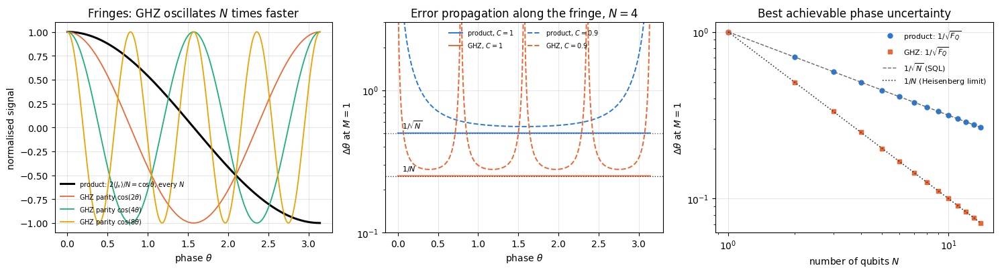
All state-vector checks hold to round-off: the gate-by-gate encoding of the GHZ state reproduces Eq. (98), its parity is \(\cos(N\theta)\), and the product state has the signal and projection noise of Eq. (95). The quantum Fisher information is exactly \(N\) for the product state and \(N^2\) for the GHZ state at every \(N\), so the ratios of Eq. (106) are \(N\) in Fisher information and \(\sqrt N\) in error (\(3.74\) at \(N=14\)).
The left panel shows where the advantage comes from. The normalised product-state signal is the same curve for every \(N\), while the GHZ parity completes \(N\) oscillations in the same phase interval; its slope is \(N\) times steeper and its noise, \(\vert\sin N\theta\vert\le1\), does not grow with \(N\). The middle panel evaluates Eq. (87) along the fringe. With perfect contrast both curves are flat, at \(1/\sqrt N\) and \(1/N\), because slope and noise vanish together at the fringe extrema. A reduced fringe contrast \(C<1\) of each measured signal (modelled as \(\langle X_i\rangle=C\cos\theta\) with variance \(1-C^2\cos^2\theta\) for the product state, and \(\langle\Pi\rangle=C\cos N\theta\) for the GHZ parity) leaves a non-zero noise at the extrema while the slope still vanishes there: error propagation diverges at \(\theta=k\pi\) for the product state and at \(\theta=k\pi/N\) for the GHZ state, which has \(N\) times as many blind spots. The right panel is the scaling of \(1/\sqrt{F_Q}\) with \(N\): slope \(-1/2\) for the product state and \(-1\) for the GHZ state.
9.1 A simulated estimation
The bounds are statements about estimators, so we finally estimate. For each probe we draw the outcomes of \(M\) repetitions from the exact distributions of Section 7 and apply the maximum-likelihood estimator of Eq. (35). For the product state the \(N\) spins of one run are independent, so the total number \(n\) of \(+\) results in \(M\) runs is binomial with \(NM\) trials and success probability \((1+\cos\theta)/2\), and \(\hat\theta=\arccos(2n/(NM)-1)\). For the GHZ state each run gives one parity bit, the number \(k\) of \(+1\) parities is binomial with \(M\) trials and probability \((1+\cos N\theta)/2\), and \(\hat\theta=\arccos(2k/M-1)/N\). To compare like with like, both probes work at the same point of their own fringe, \(\theta_0=\pi/3\) for the product state and \(N\theta_0=\pi/3\) for the GHZ state, which also places the GHZ phase inside the interval \((0,\pi/N)\) where the inversion is unique. For each \(N\) we repeat the whole experiment \(R=4000\) times and compare the scatter of \(\hat\theta\) with the exact finite-\(M\) variance (the binomial sum of Section 4.8) and with the bounds \(1/\sqrt{NM}\) and \(1/(N\sqrt M)\). The wrong control asserts SQL scaling for the GHZ data.
Code
# ==============================================================================# STEP 8: simulated estimation with both probes -- the scatter of theta_hat against the bounds# ==============================================================================# PARAMETERS ------------------------------------------------------------------N_EST = (1, 2, 4, 8, 16) # probe sizesM_EST =400# repetitions per experimentR_EST =4000# independent experiments per point (for the scatter and its error bar)PHI_EST = np.pi /3# working point on the fringe: theta0 = PHI_EST (product), N theta0 = PHI_EST (GHZ)# -----------------------------------------------------------------------------est_rows = []key_est = jax.random.PRNGKey(41)print(f"{'N':>3s} | {'sqrt(NM) sd(prod)':>18s}{'exact':>7s} | {'N sqrt(M) sd(GHZ)':>18s}{'exact':>7s} | {'sd ratio':>9s}{'1/sqrt(N)':>9s}")for i, N inenumerate(N_EST): kp, kg = jax.random.split(jax.random.fold_in(key_est, i)) p_prod = (1+ np.cos(PHI_EST)) /2# same for both probes by construction n_plus = jax.random.binomial(kp, N * M_EST, p_prod, shape=(R_EST,)) # product: N M independent spins k_plus = jax.random.binomial(kg, M_EST, p_prod, shape=(R_EST,)) # GHZ: M parity bits th_prod = np.arccos(np.clip(2* np.asarray(n_plus) / (N * M_EST) -1, -1, 1)) th_ghz = np.arccos(np.clip(2* np.asarray(k_plus) / M_EST -1, -1, 1)) / N sd_p, sd_g = th_prod.std(ddof=1), th_ghz.std(ddof=1) se_p, se_g = sd_p / np.sqrt(2* (R_EST -1)), sd_g / np.sqrt(2* (R_EST -1)) # standard error of a std v_p = ml_exact_moments(PHI_EST, N * M_EST)[1] # exact finite-M variances v_g = ml_exact_moments(PHI_EST, M_EST)[1] / N **2 est_rows.append((N, sd_p, se_p, np.sqrt(v_p), sd_g, se_g, np.sqrt(v_g)))print(f"{N:3d} | {sd_p * np.sqrt(N * M_EST):9.4f} +- {se_p * np.sqrt(N * M_EST):5.4f}{np.sqrt(v_p * N * M_EST):7.4f} | "f"{sd_g * N * np.sqrt(M_EST):9.4f} +- {se_g * N * np.sqrt(M_EST):5.4f}{np.sqrt(v_g) * N * np.sqrt(M_EST):7.4f} | "f"{sd_g / sd_p:9.4f}{1/ np.sqrt(N):9.4f}")# CHECKPOINT: the sampled scatter agrees with the exact finite-M value within 4 standard errorsassertabs(sd_p - np.sqrt(v_p)) <4* se_p andabs(sd_g - np.sqrt(v_g)) <4* se_g# CHECKPOINT: at M = 400 the exact scatter is within 3% of the Cramér–Rao bound for both probesassertabs(np.sqrt(v_p * N * M_EST) -1) <0.03andabs(np.sqrt(v_g) * N * np.sqrt(M_EST) -1) <0.03# WRONG CONTROL: "the GHZ probe only reaches the SQL", sd = 1/sqrt(N M), rejected at N = 16N_w, _, _, _, sd_w, se_w, _ = est_rows[-1]z_w =abs(sd_w -1/ np.sqrt(N_w * M_EST)) / se_wprint(f"\nwrong control: SQL scaling for the GHZ data at N = {N_w} is off by {z_w:.0f} standard errors")assert z_w >8
N | sqrt(NM) sd(prod) exact | N sqrt(M) sd(GHZ) exact | sd ratio 1/sqrt(N)
1 | 0.9942 +- 0.0111 1.0019 | 0.9943 +- 0.0111 1.0019 | 1.0001 1.0000
2 | 0.9865 +- 0.0110 1.0009 | 1.0065 +- 0.0113 1.0019 | 0.7214 0.7071
4 | 1.0076 +- 0.0113 1.0005 | 1.0106 +- 0.0113 1.0019 | 0.5015 0.5000
8 | 1.0082 +- 0.0113 1.0002 | 1.0060 +- 0.0112 1.0019 | 0.3528 0.3536
16 | 1.0054 +- 0.0112 1.0001 | 0.9805 +- 0.0110 1.0019 | 0.2438 0.2500
wrong control: SQL scaling for the GHZ data at N = 16 is off by 275 standard errors
Code
# ==============================================================================# FIGURE: scatter of the estimates against the two bounds# ==============================================================================er = np.array(est_rows)Ne = er[:, 0]fig, ax = plt.subplots(figsize=(6.4, 4.4))ax.errorbar(Ne, er[:, 1], yerr=er[:, 2], fmt="o", color=PALETTE[0], ms=6, capsize=3, label=r"product: sd of $\hat\theta$")ax.errorbar(Ne, er[:, 4], yerr=er[:, 5], fmt="s", color=PALETTE[1], ms=6, capsize=3, label=r"GHZ: sd of $\hat\theta$")Nf = np.logspace(0, np.log10(16), 50)ax.loglog(Nf, 1/ np.sqrt(Nf * M_EST), "--", color="0.4", lw=1, label=r"$1/\sqrt{NM}$ (SQL)")ax.loglog(Nf, 1/ (Nf * np.sqrt(M_EST)), ":", color="0.2", lw=1.2, label=r"$1/(N\sqrt{M})$ (Heisenberg limit)")ax.set_xscale("log"); ax.set_yscale("log")ax.set_xlabel("number of qubits $N$"); ax.set_ylabel(r"standard deviation of $\hat\theta$")ax.set_title(f"Maximum-likelihood estimates, $M={M_EST}$, {R_EST} experiments per point"); ax.legend(fontsize=8)fig.tight_layout(); plt.show()
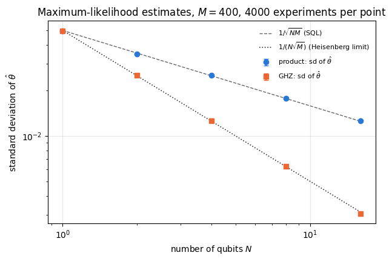
The sampled standard deviations lie on the exact finite-\(M\) values within their error bars, and at \(M=400\) those exact values are within \(0.2\%\) of the Cramér–Rao bound (asserted at \(3\%\)). The product-state scatter follows \(1/\sqrt{NM}\) and the GHZ scatter \(1/(N\sqrt M)\); their ratio agrees with \(1/\sqrt N\) within two standard errors (the statistical error of each ratio is about \(1.6\%\)). The wrong control rejects SQL scaling for the GHZ data by the printed number of standard errors. (In the figure the error bars, about \(1\%\) of each value, are smaller than the markers.) These are ideal probes. Section 10 shows what happens to the GHZ advantage when one particle is lost or each particle suffers a small error; the full protocols, with the readout and the estimator analysed in detail, are 31 — Ramsey interferometry for the product state and 32 — GHZ interferometry (Sections 6–9) for the GHZ state, including the \(2\pi/N\) ambiguity that the restriction to \((0,\pi/N)\) sidesteps here.
10. The fragility of the GHZ advantage
The factor \(N\) in \(F_Q=N^2\) comes from one coherence: the relative phase between \(\vert\bar0\rangle\) and \(\vert\bar1\rangle\), two states that differ on every particle. Anything that reveals or randomises the state of a single particle acts on that coherence. This section derives the four consequences that matter in practice.
10.1 Losing one particle
Suppose the phase is imprinted on all \(N\) qubits but the last one is lost before the readout. The surviving \(N-1\) qubits are described by the partial trace over the lost one. For the GHZ state the cross terms \(\vert\bar0\rangle\langle\bar1\vert\) and \(\vert\bar1\rangle\langle\bar0\vert\) contain \(\vert0\rangle\langle1\vert\) on the lost qubit, whose trace is \(\langle1\vert0\rangle=0\), so only the two diagonal terms survive:
with \(N-1\) entries in each string. The encoding of the lost qubit drops out of the partial trace (the generator is a sum of single-qubit terms), so the survivors see \(U_A=e^{-i\theta J_z^{(A)}}\). Both \(\rho_A\) and \(J_z^{(A)}\) are diagonal in the computational basis, so they commute, and
by Eq. (48). The mixture of two eigenstates of the generator does not change under the encoding at all. One lost particle removes the whole phase information. The product state loses only the contribution of the missing spin: the survivors form \(\vert+\rangle^{\otimes(N-1)}\), and Eq. (92) gives \(F_Q=N-1\).
10.2 Independent dephasing, the optimal size, and the crossing
The dephasing channel of the engine, kraus_dephasing(p), applies a \(Z\) error with probability \(p\) to one qubit, \(\rho\to(1-p)\rho+pZ\rho Z\). Conjugation by \(Z\) leaves the diagonal of a single-qubit density matrix unchanged and flips the sign of the off-diagonal elements, so the coherence becomes \((1-p)\rho_{01}-p\rho_{01}=(1-2p)\rho_{01}\). Applied to qubit \(i\) of the GHZ state, \(Z_i\vert\bar0\rangle=\vert\bar0\rangle\) and \(Z_i\vert\bar1\rangle=-\vert\bar1\rangle\), so \(Z_i\vert\bar0\rangle\langle\bar1\vert Z_i=-\vert\bar0\rangle\langle\bar1\vert\) and the GHZ coherence is multiplied by \(1-2p\). After independent dephasing of all \(N\) qubits,
The state stays in the two-dimensional subspace spanned by \(\vert\bar0\rangle\) and \(\vert\bar1\rangle\), i.e. it has rank two. (Dephasing commutes with the encoding, because both are diagonal, so it does not matter whether it acts before or after.) Both probes now reduce to the same calculation for a two-level system. Consider \(\rho=\tfrac12\begin{pmatrix}1&c\\c&1\end{pmatrix}\) and the generator \(\tfrac\omega2\sigma_z\) in a basis \(\{\vert a\rangle,\vert b\rangle\}\). The eigenvalues of \(\rho\) are \(\lambda_\pm=\tfrac12(1\pm c)\) with eigenvectors \(\vert\pm\rangle=(\vert a\rangle\pm\vert b\rangle)/\sqrt2\), and \(\sigma_z\vert\pm\rangle=\vert\mp\rangle\), so \(\langle+\vert\tfrac\omega2\sigma_z\vert-\rangle=\tfrac\omega2\). Equation (49) has the two terms \((m,n)=(+,-)\) and \((-,+)\), with \((\lambda_+-\lambda_-)^2=c^2\) and \(\lambda_++\lambda_-=1\):
For the GHZ state the two levels are \(\vert\bar0\rangle,\vert\bar1\rangle\), \(J_z\) acts as \(\tfrac N2\sigma_z\) by Eq. (97), so \(\omega=N\) and \(c=(1-2p)^N\). For the product state each qubit is a two-level system with \(\omega=1\) and coherence \(c=1-2p\), and the \(N\) dephased qubits are still a product, so Eq. (60) adds their contributions:
The Heisenberg value is multiplied by a factor that decreases exponentially with \(N\), the product value by a constant. At fixed \(p\) the GHZ value therefore has a maximum. Setting the derivative of \(\ln F_Q^{\text{GHZ}}=2\ln N+2N\ln(1-2p)\) to zero,
Beyond \(N^\ast\) adding particles to the GHZ state lowers its quantum Fisher information, and beyond the crossing \(N_\times\), the solution with \(N_\times>1\) of \(F_Q^{\text{GHZ}}=F_Q^{\text{prod}}\), i.e. of
\[N_\times(1-2p)^{2N_\times-2}=1 , \tag{113}\]
the GHZ state is worse than the unentangled probe. The product value \(N(1-2p)^2\) keeps growing linearly.
10.3 Correlated noise: superdecoherence
The dephasing of Section 10.2 acts independently on each qubit. Many laboratory noise sources act collectively instead: a fluctuating magnetic field or laser phase shifts every qubit by the same random angle. To compare the two cases at the same single-qubit strength, let each qubit acquire a random phase through \(e^{-i\phi_iZ_i/2}\), with Gaussian phases of zero mean and variance \(\sigma^2\). Under \(e^{-i\phi_iZ_i/2}\) the branch \(\vert\bar0\rangle\) gains \(e^{-i\phi_i/2}\) and the branch \(\vert\bar1\rangle\) gains \(e^{+i\phi_i/2}\), so the coherence \(\vert\bar0\rangle\langle\bar1\vert\) is multiplied by \(e^{-i\phi_i}\), and by \(e^{-i\sum_i\phi_i}\) after all \(N\) qubits. Averaging over the noise uses the Gaussian identity \(\mathbb E[e^{ia\phi}]=e^{-a^2\sigma_\phi^2/2}\) for a zero-mean Gaussian \(\phi\) of variance \(\sigma_\phi^2\).
Independent (local) phases: \(\sum_i\phi_i\) has variance \(N\sigma^2\).
Correlated (collective) phase: all \(\phi_i=\phi\), so \(\sum_i\phi_i=N\phi\) has variance \(N^2\sigma^2\).
With the phase diffusing in time, \(\sigma^2=2\gamma t\), so that a single qubit loses coherence as \(e^{-\gamma t}\), the GHZ coherence decays as
The local rate grows like \(N\); the collective rate grows like \(N^2\), which is called superdecoherence. (Local Gaussian phases are the dephasing channel of Section 10.2 with \(1-2p=e^{-\sigma^2/2}\).) Collective noise has exactly the form of the signal: it is a random rotation generated by the same \(J_z\) that writes \(\theta\) into the state. The \(N\)-fold amplification of the phase that produces the Heisenberg gain amplifies the noise phase in the same way. Monz et al. (2011) created GHZ states of up to \(14\) trapped ions and observed, for up to \(8\) ions, a decay of the GHZ coherence proportional to the square of the number of qubits, in agreement with a model of correlated Gaussian phase noise.
The quantum Fisher information follows from the same two-level formula (110) with \(\omega=N\) and \(c=e^{-N^2\sigma^2/2}\):
The product state is not protected by its lack of entanglement. A single qubit loses coherence at the single-qubit rate, \(F_Q=e^{-\sigma^2}\) by Eq. (110), but for \(N>1\) the common phase correlates the qubits, the state is no longer a product, and Eq. (60) does not apply: \(F_Q\neq Ne^{-\sigma^2}\). Averaging the random rotation multiplies each element of the density matrix between \(J_z\) eigenstates with eigenvalues \(m\) and \(m'\) by \(e^{-(m-m')^2\sigma^2/2}\), and the code below evaluates Eq. (49) for this state exactly. No closed form is needed to understand the result, because two elementary arguments enclose it from above and from below.
Upper bound, for every probe. Fix any POVM and let \(q(x\vert\varphi)=\mathrm{Tr}\big(E_x\,e^{-i\varphi J_z}\rho\,e^{i\varphi J_z}\big)\) be its outcome distribution for the noiseless probe rotated by an angle \(\varphi\); its score \(s_q=\partial_\varphi\ln q\) has mean zero and mean square \(F_C^{(0)}(\varphi)\le F_Q^{(0)}\), the quantum Fisher information of the noiseless probe (Eqs. (12) and (50); for the product state \(F_Q^{(0)}=N\) at every \(\varphi\)). Under collective noise the probe is rotated by \(\varphi=\theta+\phi\), so with \(g\) the Gaussian density of \(\phi\)
Differentiating the first form under the integral gives \(\partial_\theta p=\int d\varphi\,g\,q\,s_q\); differentiating the second, with \(\partial_\theta g(\varphi-\theta)=g(\varphi-\theta)\,(\varphi-\theta)/\sigma^2\), gives \(\partial_\theta p=\int d\varphi\,g\,q\,(\varphi-\theta)/\sigma^2\). Divide both by \(p\). The weights \(w(\varphi\vert x)=g(\varphi-\theta)\,q(x\vert\varphi)/p(x\vert\theta)\) are non-negative and integrate to one (they are the distribution of \(\varphi\) given the outcome \(x\)), so both expressions for the score are averages over \(w\), and so is every combination of them with \(a+b=1\):
The square of an average is at most the average of the square (a variance is non-negative). Multiply by \(p(x\vert\theta)\), sum over \(x\) and integrate over \(\varphi\); the product \(p\,w=g(\varphi-\theta)\,q(x\vert\varphi)\) is the joint distribution of \(\varphi\) and \(x\). The cross term vanishes because \(\sum_xq\,s_q=0\), the first term is at most \(a^2F_Q^{(0)}\), and \(\int d\varphi\,g\,(\varphi-\theta)^2/\sigma^4=1/\sigma^2\):
\[F_C(\theta;\{E_x\})\;\le\;a^2F_Q^{(0)}+\frac{b^2}{\sigma^2}\qquad\text{for every }a+b=1 . \tag{115c}\]
The right-hand side is smallest at \(a=1/(1+F_Q^{(0)}\sigma^2)\). Maximising the left-hand side over all POVMs with Eq. (58) then gives
The variance \(\sigma^2\) of the common phase adds to the variance \(1/F_Q^{(0)}\) of the noiseless estimate. The choices \(a=1\) and \(a=0\) in Eq. (115c) give the two simple limits: noise never increases the quantum Fisher information, and no probe, however entangled, learns \(\theta\) better than a single reading of \(\theta+\phi\), whose Fisher information is \(1/\sigma^2\) (Eq. (20) with \(h'=1\)). For the product state Eq. (115d) reads \(F_Q\le N/(1+N\sigma^2)\).
Lower bound, for the product state. Since the averaged noise commutes with the encoding, \(F_Q\) does not depend on \(\theta\), and any measurement at any working point bounds it from below. Measure \(J_x\) at \(\theta=\pi/2\). For the product state rotated by an angle \(\alpha\), \(\langle X_i\rangle=\cos\alpha\) and \(\langle X_iX_j\rangle=\cos^2\alpha\) for \(i\neq j\), so \(\langle J_x\rangle=\tfrac N2\cos\alpha\) and \(\langle J_x^2\rangle=\tfrac14\left(N+N(N-1)\cos^2\alpha\right)\), as in Eq. (91). Average over \(\alpha=\theta+\phi\) with the Gaussian identity, \(\mathbb E[\cos(\theta+\phi)]=e^{-\sigma^2/2}\cos\theta\) and \(\mathbb E[\cos^2(\theta+\phi)]=\tfrac12\left(1+e^{-2\sigma^2}\cos2\theta\right)\). At \(\theta=\pi/2\) the slope of the signal is \(\tfrac N2e^{-\sigma^2/2}\) and its variance \(\tfrac N4+\tfrac{N(N-1)}{8}\left(1-e^{-2\sigma^2}\right)\), and Eq. (89) gives
At \(N=1\) this is \(e^{-\sigma^2}\), the exact value. Expanding both bounds in \(\sigma^2\) gives \(N-N^2\sigma^2+O(\sigma^4)\) for each, so they differ only at order \(\sigma^4\): for \(\sigma^2\ll1\) the product-state value is \(N/(1+N\sigma^2)\) to that accuracy, growing like \(N\) while \(N\sigma^2\ll1\) and then saturating at the ceiling \(1/\sigma^2\). (For \(\sigma^2\) of order one the bounds separate, because Eq. (115d) ignores that a phase is defined only modulo \(2\pi\).) STEP 10 evaluates the exact value and both bounds. The product state approaches the ceiling smoothly; the GHZ state reaches at most \(e^{-1}\) of it and then collapses.
10.4 Practical problems of GHZ metrology
Preparation. The GHZ state is made by a Hadamard gate followed by a chain of CNOT gates (22 — GHZ states and decoherence), at least \(N-1\) entangling gates. Every gate error that flips or dephases one qubit acts on the one coherence that carries the phase, so preparation errors accumulate with \(N\) in the same way as the dephasing of Section 10.2.
Readout. The parity needs every one of the \(N\) single-qubit results. If each result is flipped independently with probability \(\epsilon\), the recorded value of qubit \(i\) is \(f_ix_i\) with \(f_i=-1\) with probability \(\epsilon\) and \(+1\) otherwise, so \(\mathbb E[f_i]=1-2\epsilon\), and the recorded parity has mean
The fringe contrast falls exponentially with \(N\), and with it the Fisher information of the parity, whose maximum over \(\theta\) is \(N^2(1-2\epsilon)^{2N}\) (notebook 32, Section 10.2) — the same form as Eq. (111). * Dynamic range. The parity \(\cos(N\theta)\) determines \(\theta\) only modulo \(2\pi/N\). A GHZ interferometer needs prior knowledge of \(\theta\) to that precision, or a combination of probes of different sizes (notebook 32, Section 9). * Noise during the interrogation. When dephasing acts continuously while the phase is accumulated, at a rate \(\gamma\) per qubit, the interrogation time itself must be optimised. Huelga et al. (1997) showed that for frequency estimation under such Markovian dephasing, optimal measurements on maximally entangled states give the same resolution as standard Ramsey spectroscopy on uncorrelated atoms, and that the best resolution is reached with partially entangled preparations. Notebook 32 (Section 13) derives the GHZ result and states the later theorem that no probe beats uncorrelated atoms by more than a constant factor (\(\sqrt e\) for this noise model), so the Heisenberg scaling is lost.
The code below checks Sections 10.1 and 10.2 with density matrices. The reduced state after the loss of one qubit is formed with rdm, and the dephased states with one Kraus channel per qubit (apply_kraus_dm, the einsum of 07 that never builds the \(4^N\times4^N\) superoperator); the quantum Fisher information of each mixed state is Eq. (49) (qfi_mixed). Wrong controls: the GHZ state after a loss is not worth \((N-1)^2\), and dephasing does not reduce its QFI by the single-qubit factor \((1-2p)^2\) alone.
Code
# ==============================================================================# STEP 9: fragility of GHZ -- one lost particle, independent dephasing, N* and the crossing# ==============================================================================# PARAMETERS ------------------------------------------------------------------N_LOST =range(2, 11) # probe sizes for the loss check (reduced states up to 2^9 x 2^9)N_DEPH = (2, 3, 4, 5, 6) # density tensors up to 2^6 x 2^6P_DEPH = (0.005, 0.02, 0.05, 0.10, 0.25) # dephasing probabilitiesP_SHOW = (0.005, 0.02, 0.05) # probabilities shown in the figure# -----------------------------------------------------------------------------def apply_local_channel(rho, kraus_fn, p, qubits=None):"""Apply the SAME single-qubit channel to each listed qubit of a density TENSOR. MATH rho -> (E_p (x) E_p (x) ... ) rho, each E_p(sigma) = sum_m K_m sigma K_m^dagger. COST O(N 4^N) -- one `apply_kraus_dm` einsum per qubit; the 4^N x 4^N superoperator never exists. """ N = rho.ndim //2 qubits =range(N) if qubits isNoneelse qubits K = kraus_fn(p)for q in qubits: rho = apply_kraus_dm(rho, K, [q])return rhodef qfi_noisy(rho_tensor, n, N):"""QFI of a mixed state for the generator n.J, via the engine's mixed-state (SLD) formula, Eq. (49)."""return qfi_mixed(dm_matrix(rho_tensor), collective_dense(pauli_direction(n), N))# (a) one particle lost -- Eqs. (107), (108)print(f"{'N':>3s} | {'F_Q(GHZ, N-1 kept)':>19s}{'||[rho_A, J_z]||':>17s} | {'F_Q(product, N-1 kept)':>23s}")for N in N_LOST: Jz_A = collective_dense(Z, N -1) rho_g = rdm(ghz_state(N), range(N -1)) f_g, comm =float(qfi_mixed(rho_g, Jz_A)), max_abs(rho_g @ Jz_A - Jz_A @ rho_g) f_p =float(qfi_mixed(rdm(product_state("+"* N), range(N -1)), Jz_A))print(f"{N:3d} | {f_g:19.2e}{comm:17.2e} | {f_p:23.10f}")assert f_g <1e4* TOL and comm <1e4* TOL andabs(f_p - (N -1)) <1e4* TOLassertabs(f_g - (N -1) **2) >0.5# WRONG CONTROL: "(N-1)^2 survives"# (b) independent dephasing -- Eq. (111)print(f"\n{'N':>3s}{'p':>6s} | {'F_Q GHZ':>12s}{'N^2(1-2p)^2N':>13s} | {'F_Q product':>12s}{'N(1-2p)^2':>10s}")err_deph, fq_deph_ghz =0.0, {}for N in N_DEPH:for p in P_DEPH: f_g =float(qfi_noisy(apply_local_channel(to_dm(ghz_state(N)), kraus_dephasing, p), (0, 0, 1), N)) f_p =float(qfi_noisy(apply_local_channel(to_dm(product_state("+"* N)), kraus_dephasing, p), (0, 0, 1), N)) a_g, a_p = N **2* (1-2* p) ** (2* N), N * (1-2* p) **2 fq_deph_ghz[(N, p)] = f_g # reused by the figure below err_deph =max(err_deph, abs(f_g - a_g), abs(f_p - a_p))if p in (0.02, 0.10):print(f"{N:3d}{p:6.3f} | {f_g:12.8f}{a_g:13.8f} | {f_p:12.8f}{a_p:10.8f}")if p >=0.02: # WRONG CONTROL: single-qubit factor onlyassertabs(f_g - N **2* (1-2* p) **2) >1e-2print(f"max deviation from Eq. (111) over {len(N_DEPH)} x {len(P_DEPH)} x 2 cases: {err_deph:.2e}")assert err_deph <1e4* TOLdef crossing_size(p):"""N_x > 1 solving N (1-2p)^(2N-2) = 1, Eq. (113), by bisection on [N*/2, 100 N*].""" lc = np.log(1-2* p) f =lambda n: np.log(n) + (2* n -2) * lc lo, hi =-0.5/ lc, -100/ lc # f(lo) > 0 (the maximum of f is at N = N*/2), f(hi) < 0for _ inrange(200): mid =0.5* (lo + hi) lo, hi = (mid, hi) if f(mid) >0else (lo, mid)return0.5* (lo + hi)print(f"\n{'p':>6s} | {'N* = -1/ln(1-2p)':>17s}{'max F_Q(GHZ)':>13s} | {'crossing N_x':>13s}")nstar_rows = {}for p in P_SHOW: ns, nx =-1/ np.log(1-2* p), crossing_size(p) nstar_rows[p] = (ns, nx) n_int = np.arange(1, int(3* ns)) # brute-force check of the maximumassertabs(n_int[np.argmax(n_int **2* (1-2* p) ** (2* n_int))] - ns) <1.0assertabs(nx * (1-2* p) ** (2* nx -2) -1) <1e-10print(f"{p:6.3f} | {ns:17.2f}{np.exp(-2) / np.log(1-2* p) **2:13.2f} | {nx:13.1f}")
After the loss of one qubit the GHZ state has \(F_Q=0\) to round-off for every \(N\), and its reduced state commutes with \(J_z\), exactly as Eq. (108) states; the product state keeps \(N-1\). The dephased states reproduce Eq. (111) to round-off in all \(50\) cases, and the wrong control confirms that the GHZ state pays the factor \((1-2p)^2\) once per qubit.
The figure puts Eq. (111) on a common scale. Each GHZ curve rises like \(N^2\), peaks at the star \(N^\ast\), Eq. (112), and falls below the straight product-state line at the open circle \(N_\times\). With \(p=0.005\) the peak is at \(N^\ast\approx100\) and the GHZ advantage survives up to several hundred qubits; with \(p=0.05\) the peak is at \(N^\ast\approx9.5\), where \(F_Q^{\text{GHZ}}\approx12\), and beyond the crossing a product state of the same size is better. An error rate per qubit therefore fixes the useful size of a GHZ probe, and the largest quantum Fisher information it can deliver is about \(e^{-2}/(4p^2)\).
The last code cell of this section checks Section 10.3. It first encodes a GHZ state of four qubits with \(4000\) sampled phase patterns, gate by gate, and compares the averaged coherence \(2\vert\rho_{\bar0\bar1}\vert\) with Eq. (114) for both noise models. It then estimates the decay of the coherence for \(N=1,2,4,8\) from \(400\,000\) samples of the phase sum at \(\sigma^2=0.1\) and fits the exponent \(b\) of \(-\ln C\propto N^b\), with error bars propagated from the Monte-Carlo standard errors; the wrong control asserts the local exponent \(b=1\) for the collective data. Finally it evaluates Eq. (49) for both probes under collective dephasing. For \(N\le6\) this uses the full \(2^N\times2^N\) density matrix; for larger \(N\) the product state is treated in the \((N+1)\)-dimensional symmetric subspace, where \(\vert+\rangle^{\otimes N}\) has the binomial amplitudes \(\sqrt{\binom Nk}/2^{N/2}\) on the \(J_z\) eigenstates with \(m=N/2-k\); the two routes are compared where both are available, and the exact product-state values are compared with the bounds (115d) and (115e) at \(\sigma^2=0.01\), \(0.1\) and \(0.5\). The wrong control is the uncorrelated guess \(Ne^{-\sigma^2}\).
Code
# ==============================================================================# STEP 10: superdecoherence -- independent vs collective Gaussian phase noise# ==============================================================================# PARAMETERS ------------------------------------------------------------------SIG2_FIT =0.1# phase variance per qubit for the exponent fitK_FIT =400_000# Monte-Carlo samples per (N, model)N_SD = (1, 2, 4, 8)K_STATE =4000# samples for the state-level check at N = 4SIG2_FQ =0.01# phase variance for the F_Q comparison# -----------------------------------------------------------------------------def ghz_coherence_samples(phis):"""2 rho_{0..0, 1..1} of the GHZ state after the phase pattern exp(-i phi_q Z_q / 2) on every qubit q. JAX phis has shape (N,); vmapped over samples below. Encoding gate by gate with apply_gate. """ N = phis.shape[0] psi = ghz_state(N)for q inrange(N): Rz = jnp.diag(jnp.exp(jnp.array([-0.5j, 0.5j]) * phis[q])).astype(CDTYPE) psi = apply_gate(psi, Rz, [q])return2* psi[(0,) * N] * jnp.conj(psi[(1,) * N])# (1) state-level check at N = 4ks1, ks2 = jax.random.split(jax.random.PRNGKey(51))N4 =4phis_loc = jnp.sqrt(SIG2_FIT) * jax.random.normal(ks1, (K_STATE, N4))phis_col = jnp.sqrt(SIG2_FIT) * jnp.repeat(jax.random.normal(ks2, (K_STATE, 1)), N4, axis=1)print(f"state-level check, N = {N4}, sigma^2 = {SIG2_FIT}, {K_STATE} samples")for name, phis, expo in (("local", phis_loc, N4), ("collective", phis_col, N4 **2)): c = jax.vmap(ghz_coherence_samples)(phis) # one coherence per sample; rho is their average m, se =float(jnp.real(jnp.mean(c))), float(jnp.std(jnp.real(c))) / np.sqrt(K_STATE)print(f" {name:>10s}: coherence {m:.4f} +- {se:.4f} Eq. (114): {np.exp(-expo * SIG2_FIT /2):.4f}")assertabs(m - np.exp(-expo * SIG2_FIT /2)) <4* se# (2) decay exponent: -ln C = (rate) * t with rate ~ N^bfit = {}for j, model inenumerate(("local", "collective")): ys, sys_ = [], []for i, N inenumerate(N_SD): kk = jax.random.fold_in(jax.random.PRNGKey(52), 10* j + i)if model =="local": phase_sum = jnp.sum(jnp.sqrt(SIG2_FIT) * jax.random.normal(kk, (K_FIT, N)), axis=1)else: phase_sum = N * jnp.sqrt(SIG2_FIT) * jax.random.normal(kk, (K_FIT,)) cosv = np.asarray(jnp.cos(phase_sum)) C, seC = cosv.mean(), cosv.std() / np.sqrt(K_FIT) ys.append(-np.log(C)); sys_.append(seC / C) ys, sys_ = np.array(ys), np.array(sys_) xl, yl, wl = np.log(N_SD), np.log(ys), (ys / sys_) **2# weights 1/var of log(y) A = np.vstack([np.ones_like(xl), xl]).T cov = np.linalg.inv(A.T @ (wl[:, None] * A)) a_fit, b_fit = cov @ (A.T @ (wl * yl)) fit[model] = (ys, sys_, b_fit, np.sqrt(cov[1, 1]))print(f"{model:>10s}: -ln C = {np.array2string(ys, precision=4)} (exact {np.array2string(np.array(N_SD) ** (1+ j) * SIG2_FIT /2, precision=4)})"f" exponent b = {b_fit:.4f} +- {np.sqrt(cov[1, 1]):.4f}")b_loc, sb_loc = fit["local"][2:]b_col, sb_col = fit["collective"][2:]assertabs(b_loc -1) <4* sb_loc andabs(b_col -2) <4* sb_colprint(f"wrong control: exponent 1 for the collective data is off by {abs(b_col -1) / sb_col:.0f} standard errors")assertabs(b_col -1) >8* sb_coldef collective_dephase(rho_mat, m, sig2):"""Average of exp(-i phi J_z) rho exp(i phi J_z) over phi ~ Normal(0, sig2), with J_z = diag(m) in this basis. MATH rho_{ss'} -> rho_{ss'} exp(-(m_s - m_s')^2 sig2 / 2) (Gaussian identity, exact) """return rho_mat * jnp.exp(-0.5* sig2 * (m[:, None] - m[None, :]) **2)def fq_product_collective(N, sig2):"""F_Q of |+>^N under collective dephasing, in the symmetric subspace (dimension N+1): amplitudes sqrt(C(N,k))/2^(N/2) on the J_z eigenstates with m = N/2 - k; Eq. (49) with G = diag(m).""" k = np.arange(N +1) amp = np.exp(0.5* (np.array([math.lgamma(N +1) - math.lgamma(j +1) - math.lgamma(N - j +1) for j in k])- N * np.log(2))) m = jnp.asarray(N /2- k, dtype=RDTYPE) rho = collective_dephase(jnp.asarray(np.outer(amp, amp), dtype=CDTYPE), m, sig2)returnfloat(qfi_mixed(rho, jnp.diag(m).astype(CDTYPE)))# (3) F_Q under collective dephasing: full density matrices (N <= 6) vs the closed form and the symmetric subspaceprint(f"\ncollective dephasing, sigma^2 = {SIG2_FQ}")print(f"{'N':>3s} | {'F_Q GHZ':>10s}{'N^2 e^-N^2s2':>13s} | {'F_Q prod (full)':>16s}{'(symmetric)':>12s}{'N e^-s2':>9s}{'N/(1+N s2)':>11s}")for N inrange(1, 7): m_full = jnp.real(jnp.diag(collective_dense(Z, N))) Jz_full = collective_dense(Z, N) f_g =float(qfi_mixed(collective_dephase(dm_matrix(to_dm(ghz_state(N))), m_full, SIG2_FQ), Jz_full)) f_p =float(qfi_mixed(collective_dephase(dm_matrix(to_dm(product_state("+"* N))), m_full, SIG2_FQ), Jz_full)) f_s = fq_product_collective(N, SIG2_FQ)print(f"{N:3d} | {f_g:10.6f}{N **2* np.exp(-N **2* SIG2_FQ):13.6f} | {f_p:16.10f}{f_s:12.10f} "f"{N * np.exp(-SIG2_FQ):9.5f}{N / (1+ N * SIG2_FQ):11.5f}")assertabs(f_g - N **2* np.exp(-N **2* SIG2_FQ)) <1e4* TOL andabs(f_p - f_s) <1e4* TOLif N >=4: # WRONG CONTROL: "F_Q = N e^{-sigma^2}"assertabs(f_p - N * np.exp(-SIG2_FQ)) >1e-2N_COLL = np.array([1, 2, 4, 8, 16, 32, 64, 128, 256])def fq_prod_upper(N, sig2):"""Eq. (115d) with F_Q^(0) = N: F_Q <= N / (1 + N sigma^2)."""return N / (1+ N * sig2)def fq_prod_lower(N, sig2):"""Eq. (115e): error propagation of J_x at theta = pi/2, N e^{-s2} / (1 + (N-1)(1 - e^{-2 s2})/2)."""return N * np.exp(-sig2) / (1+0.5* (N -1) * (1- np.exp(-2* sig2)))# CHECKPOINT: the exact value lies between the two derived bounds, Eqs. (115d) and (115e), at three noise strengthsprint(f"\nproduct state |+>^N under collective dephasing (symmetric subspace), N = {N_COLL.tolist()}")for s2 in (SIG2_FQ, 0.1, 0.5): ex = np.array([fq_product_collective(int(N), s2) for N in N_COLL]) lo, up = fq_prod_lower(N_COLL, s2), fq_prod_upper(N_COLL, s2)assert np.all(lo <= ex +1e4* TOL) and np.all(ex <= up +1e4* TOL)assertabs(ex[0] - np.exp(-s2)) <1e4* TOL # N = 1: exactly e^{-sigma^2}, Eq. (110)print(f" sigma^2 = {s2:4.2f}: max (upper - exact)/exact = {np.max((up - ex) / ex):.2e}, "f"max (exact - lower)/exact = {np.max((ex - lo) / ex):.2e}")if s2 == SIG2_FQ: fq_prod_coll = ex# WRONG CONTROL: the uncorrelated guess N e^{-sigma^2} violates the upper bound (115d) for every N >= 2assert np.all(N_COLL[1:] * np.exp(-SIG2_FQ) > fq_prod_upper(N_COLL[1:], SIG2_FQ))rel_dev = fq_prod_coll / fq_prod_upper(N_COLL, SIG2_FQ) -1print(f"\nsigma^2 = {SIG2_FQ}: F_Q = {np.array2string(fq_prod_coll, precision=3)}")print(f" F_Q / [N/(1+N sigma^2)] - 1 = {np.array2string(rel_dev, precision=4)}")
state-level check, N = 4, sigma^2 = 0.1, 4000 samples
# ==============================================================================# FIGURE: superdecoherence# ==============================================================================fig, axes = plt.subplots(1, 3, figsize=(15.0, 4.3))gt = np.linspace(0, 1.0, 200) # gamma tgt_mc = np.array([0.05, 0.15, 0.3, 0.5, 0.8])for k, N inenumerate((1, 2, 4, 8)): axes[0].semilogy(gt, np.exp(-N * gt), "-", color=PALETTE[k], lw=1.4, label=f"$N={N}$, local") axes[0].semilogy(gt, np.exp(-N **2* gt), "--", color=PALETTE[k], lw=1.4, label=f"$N={N}$, collective")for model, mk in (("local", "o"), ("collective", "s")): # Monte-Carlo points, 20 000 samples each cs = []for i, t inenumerate(gt_mc): kk = jax.random.fold_in(jax.random.PRNGKey(53), 100* k +10* i + (model =="local")) s = np.sqrt(2* t) * (jnp.sum(jax.random.normal(kk, (20_000, N)), axis=1) if model =="local"else N * jax.random.normal(kk, (20_000,))) cs.append(float(jnp.mean(jnp.cos(s)))) cs = np.array(cs) ok = np.exp(-(N if model =="local"else N **2) * gt_mc) >0.04# show points well above the MC error 0.005 axes[0].semilogy(gt_mc[ok], cs[ok], mk, color=PALETTE[k], ms=4)axes[0].set_ylim(1e-3, 1.2); axes[0].set_xlabel(r"$\gamma t$"); axes[0].set_ylabel("GHZ coherence $C(t)$")axes[0].set_title("Coherence: local (solid) vs collective (dashed)"); axes[0].legend(fontsize=6, ncol=2)for j, (model, mk) inenumerate((("local", "o"), ("collective", "s"))): ys, sys_, b, sb = fit[model] axes[1].errorbar(N_SD, ys, yerr=sys_ * ys, fmt=mk, color=PALETTE[j], capsize=3, label=rf"{model}: $b={b:.3f}\pm{sb:.3f}$") axes[1].loglog(np.array(N_SD), np.array(N_SD) ** (1+ j) * SIG2_FIT /2, "-", color=PALETTE[j], lw=1)axes[1].set_xscale("log"); axes[1].set_yscale("log")axes[1].set_xlabel("number of qubits $N$"); axes[1].set_ylabel(r"$-\ln C$ at $\sigma^2=0.1$")axes[1].set_title(r"Decay exponent: $-\ln C\propto N^b$"); axes[1].legend(fontsize=8)Nf = np.unique(np.round(np.logspace(0, np.log10(256), 200)))axes[2].loglog(Nf, Nf **2* np.exp(-Nf **2* SIG2_FQ), "-", color=PALETTE[1], lw=1.6, label=r"GHZ: $N^2e^{-N^2\sigma^2}$")axes[2].loglog(N_COLL, fq_prod_coll, "o-", color=PALETTE[0], ms=5, lw=1.2, label=r"$\vert+\rangle^{\otimes N}$ (exact)")axes[2].loglog(Nf, Nf / (1+ Nf * SIG2_FQ), ":", color=PALETTE[0], lw=1.2, label=r"$N/(1+N\sigma^2)$, bound (115d)")axes[2].loglog(Nf, Nf, "--", color="0.5", lw=1, label=r"$N$ (noiseless SQL)")axes[2].axhline(1/ SIG2_FQ, color="0.2", ls="-.", lw=1, label=r"$1/\sigma^2$")axes[2].set_ylim(0.5, 400); axes[2].set_xlabel("number of qubits $N$"); axes[2].set_ylabel(r"$F_Q$")axes[2].set_title(rf"Collective dephasing, $\sigma^2={SIG2_FQ}$"); axes[2].legend(fontsize=7)fig.tight_layout(); plt.show()
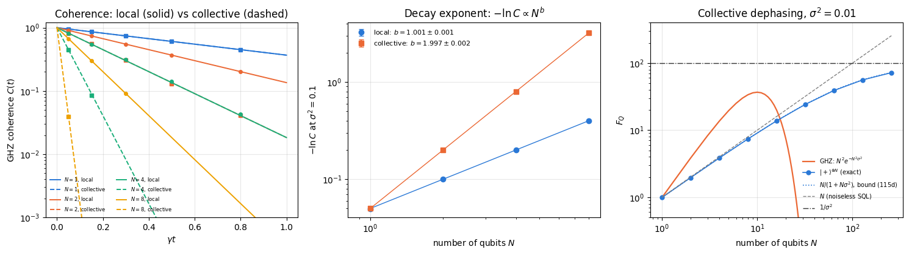
The sampled GHZ states reproduce Eq. (114) for both noise models within the Monte-Carlo error. The fitted exponents are \(b=1\) for independent phases and \(b=2\) for a common phase, within their error bars, and the local value \(b=1\) is excluded for the collective data by the printed number of standard errors. The left panel shows what this means in time: at the same single-qubit coherence time, the collective GHZ coherence of \(8\) qubits has decayed by a factor \(e^{-64\gamma t}\), eight times faster in the exponent than under independent noise. (Some curves coincide by construction: the collective curve of \(N\) qubits equals the local curve of \(N^2\) qubits, e.g. collective \(N=2\) and local \(N=4\).)
The right panel compares the probes under collective noise. The GHZ value follows \(N^2e^{-N^2\sigma^2}\) exactly (asserted for \(N\le6\)), peaks at \(N=1/\sigma=10\) with \(F_Q=e^{-1}/\sigma^2\approx37\) and then collapses. The product state is not simply \(Ne^{-\sigma^2}\), which would violate the upper bound (115d) for every \(N\ge2\) (wrong control). Its exact quantum Fisher information lies between the bounds (115d) and (115e) at all three noise strengths tested, and at \(\sigma^2=0.01\) it differs from \(N/(1+N\sigma^2)\) by less than \(5\times10^{-5}\) relative for every \(N\) from \(1\) to \(256\), the size of the \(O(\sigma^4)\) gap between the bounds. It approaches the ceiling \(1/\sigma^2=100\). At \(\sigma^2=0.5\) the printed gaps grow to \(10\%\) (upper) and \(5\%\) (lower), as expected once \(\sigma^2\) is no longer small. Under collective noise both probes are limited by the same ceiling, and the entangled probe uses less of it.
The four results of this section share one cause. The \(N\)-body coherence between \(\vert\bar0\rangle\) and \(\vert\bar1\rangle\) that gives \(F_Q=N^2\) is also what a single lost particle, a single dephased qubit, a single wrong detection, or a common phase fluctuation destroys, and it is destroyed at a rate that grows with \(N\). Realistic metrology trades scaling for robustness: the probes of notebooks 33 and 34 give up part of the ideal \(N^2\) in exchange for a gain that survives noise.
11. A zoo of many-body states
This section sorts the standard many-body states by metrological usefulness. We evaluate \(F_Q\) for the standard family of \(N\)-qubit states, each with the generator that suits it, and compare against \(N\) and \(N^2\). Beyond the two extremes we already know, four entries deserve a prediction before we look:
W state\(\vert W\rangle=\vert D_N^1\rangle\) (one excitation shared by all qubits). It is an eigenstate of \(J_z\) (eigenvalue \(N/2-1\)), so \(F_Q=0\) for \(G=J_z\) — a perfect illustration that the generator matters as much as the state. For \(G=J_x\) we use the angular-momentum identity \(\langle J_x^2\rangle=\tfrac12\left(\langle\mathbf J^2\rangle-\langle J_z^2\rangle\right)\) valid in the symmetric sector (where \(\langle J_x^2\rangle=\langle J_y^2\rangle\)), with \(j=N/2\), \(m=N/2-1\):
i.e. Heisenberg scaling (asymptotically \(N^2/2\)). Section 15 shows that, unlike GHZ, this state keeps a sizeable part of its QFI when a particle is lost.
Cluster (graph) state. A genuinely multipartite entangled stabiliser state, yet all its \(\langle\sigma^a_q\rangle\) and most two-body correlators vanish — we will see what that does to \(F_Q\).
Haar-random pure state. For a random \(\vert\psi\rangle\) the standard unitary-averaging identities \(\mathbb{E}\langle A\rangle=\mathrm{Tr}A/d\) and \(\mathbb{E}\langle A\rangle^2=\left[(\mathrm{Tr}A)^2+\mathrm{Tr}A^2\right]/[d(d+1)]\) with \(d=2^N\), \(\mathrm{Tr}J_z=0\), \(\mathrm{Tr}J_z^2=dN/4\) give the exact average
A typical state of the Hilbert space is nearly maximally entangled (its half-chain entropy is close to the Page value, the Haar average of 10 — random unitaries, Section 6.3) and yet, on average, worth slightly less than a product state.
Code
# ==============================================================================# STEP 11: the zoo -- QFI of standard many-body states, and the Haar average# ==============================================================================N_ZOO =8N_HAAR_SAMPLES =64# Printed tables use ASCII names; figures use the LaTeX labels of LBL below.LBL = {"|0>^N": r"$\vert 0\rangle^{\otimes N}$", "|+>^N": r"$\vert +\rangle^{\otimes N}$", "GHZ": "GHZ","W": "W", "Dicke N/2": r"Dicke $N/2$", "cluster": "cluster", "Haar": "Haar random"}zoo = {"|0>^N": (product_state("0"* N_ZOO), (0.0, 1.0, 0.0), "J_y"),"|+>^N": (product_state("+"* N_ZOO), (0.0, 1.0, 0.0), "J_y"),"GHZ": (ghz_state(N_ZOO), (0.0, 0.0, 1.0), "J_z"),"W": (w_state(N_ZOO), (1.0, 0.0, 0.0), "J_x"),"Dicke N/2": (dicke_state(N_ZOO, N_ZOO //2), (1.0, 0.0, 0.0), "J_x"),"cluster": (cluster_state(N_ZOO), (0.0, 0.0, 1.0), "J_z"),}print(f"N = {N_ZOO} (SQL: F_Q = {N_ZOO}, Heisenberg: F_Q = {N_ZOO **2})\n")print(f"{'state':>12s}{'G':>5s} | {'F_Q':>10s}{'F_Q/N':>8s}{'F_Q/N^2':>9s}{'entangled?':>11s}")for name, (psi, n, gname) in zoo.items(): f =float(qfi_pure_direction(psi, n))print(f"{name:>12s}{gname:>5s} | {f:10.4f}{f / N_ZOO:8.3f}{f / N_ZOO **2:9.4f} "f"{'YES'if f > N_ZOO +1e-6else'not by QFI':>11s}")# Haar average: vmap over 64 independent random states (one PRNG key each)keys = jax.random.split(jax.random.PRNGKey(0), N_HAAR_SAMPLES)f_haar = jax.vmap(lambda k: qfi_pure_direction(haar_state(k, N_ZOO), (0.0, 0.0, 1.0)))(keys)d, mean_haar, std_haar =2** N_ZOO, float(jnp.mean(f_haar)), float(jnp.std(f_haar))print(f"{'Haar (mean)':>12s}{'J_z':>5s} | {mean_haar:10.4f}{mean_haar / N_ZOO:8.3f} "f"{mean_haar / N_ZOO **2:9.4f}{'':>11s}")sem_haar = std_haar / np.sqrt(N_HAAR_SAMPLES)print(f"\nHaar average: measured {mean_haar:.4f} +- {sem_haar:.4f} (standard error of the mean "f"over {N_HAAR_SAMPLES} states, sample std {std_haar:.3f}); exact N d/(d+1) = {N_ZOO * d / (d +1):.4f}")# the measured mean must agree with the exact average within four standard errorsassertabs(mean_haar - N_ZOO * d / (d +1)) <4* sem_haar# --- CHECKPOINT: the analytic values predicted above ---------------------------------assertabs(float(qfi_pure_direction(w_state(N_ZOO), (1.0, 0.0, 0.0))) - (3* N_ZOO -2)) <1e3* TOLassertabs(float(qfi_pure_direction(dicke_state(N_ZOO, N_ZOO //2), (1.0, 0.0, 0.0)))- N_ZOO * (N_ZOO +2) /2) <1e3* TOLprint("\nanalytic checks passed: W -> 3N-2 = %d Dicke(N/2) -> N(N+2)/2 = %d"% (3* N_ZOO -2, N_ZOO * (N_ZOO +2) //2))
N = 8 (SQL: F_Q = 8, Heisenberg: F_Q = 64)
state G | F_Q F_Q/N F_Q/N^2 entangled?
|0>^N J_y | 8.0000 1.000 0.1250 not by QFI
|+>^N J_y | 8.0000 1.000 0.1250 not by QFI
GHZ J_z | 64.0000 8.000 1.0000 YES
W J_x | 22.0000 2.750 0.3437 YES
Dicke N/2 J_x | 40.0000 5.000 0.6250 YES
cluster J_z | 8.0000 1.000 0.1250 not by QFI
Haar (mean) J_z | 7.9406 0.993 0.1241
Haar average: measured 7.9406 +- 0.0835 (standard error of the mean over 64 states, sample std 0.668); exact N d/(d+1) = 7.9689
analytic checks passed: W -> 3N-2 = 22 Dicke(N/2) -> N(N+2)/2 = 40
Code
# ==============================================================================# FIGURE: how the zoo scales with N# ==============================================================================N_RANGE = np.arange(2, 13)curves = {r"$\vert+\rangle^{\otimes N}$, $J_y$": lambda N: qfi_pure_direction(product_state("+"* N), (0, 1, 0)),r"GHZ, $J_z$": lambda N: qfi_pure_direction(ghz_state(N), (0, 0, 1)),r"W, $J_x$": lambda N: qfi_pure_direction(w_state(N), (1, 0, 0)),r"Dicke $N/2$, $J_x$": lambda N: qfi_pure_direction(dicke_state(N, N //2), (1, 0, 0)),r"cluster, $J_z$": lambda N: qfi_pure_direction(cluster_state(N), (0, 0, 1)),}haar_mean = np.array([float(jnp.mean(jax.vmap(lambda kk: qfi_pure_direction(haar_state(kk, N), (0, 0, 1)))( jax.random.split(jax.random.PRNGKey(N), 32)))) for N in N_RANGE])fig, axes = plt.subplots(1, 2, figsize=(11.6, 4.5))for k, (lab, fn) inenumerate(curves.items()): Nl = np.array([N for N in N_RANGE if (N %2==0or"Dicke"notin lab)]) # Dicke N/2 needs even N vals = np.array([float(fn(N)) for N in Nl]) axes[0].loglog(Nl, vals, MARKERS[k] +"-", color=PALETTE[k], ms=5, label=lab) axes[1].semilogx(Nl, vals / Nl, MARKERS[k] +"-", color=PALETTE[k], ms=5, label=lab)axes[0].loglog(N_RANGE, haar_mean, "*", color=PALETTE[5], ms=9, label="Haar random (mean of 32)")axes[1].semilogx(N_RANGE, haar_mean / N_RANGE, "*", color=PALETTE[5], ms=9, label="Haar random (mean of 32)")axes[0].loglog(N_RANGE, N_RANGE, "--", color="0.4", lw=1.2, label=r"$N$ (SQL)")axes[0].loglog(N_RANGE, N_RANGE **2.0, ":", color="0.2", lw=1.4, label=r"$N^2$ (Heisenberg)")axes[0].set_xlabel("number of qubits $N$"); axes[0].set_ylabel(r"$F_Q$")axes[0].set_title("Quantum Fisher information"); axes[0].legend(fontsize=8, ncol=2)axes[1].axhline(1.0, color="0.4", ls="--", lw=1.2)axes[1].text(6.0, 1.06, "standard quantum limit", fontsize=8, color="0.4")axes[1].set_yscale("log"); axes[1].set_xlabel("number of qubits $N$"); axes[1].set_ylabel(r"$F_Q/N$")axes[1].set_title("QFI density relative to the SQL"); axes[1].legend(fontsize=8)fig.suptitle("Metrological usefulness of standard many-body states", y=1.02)fig.tight_layout(); plt.show()
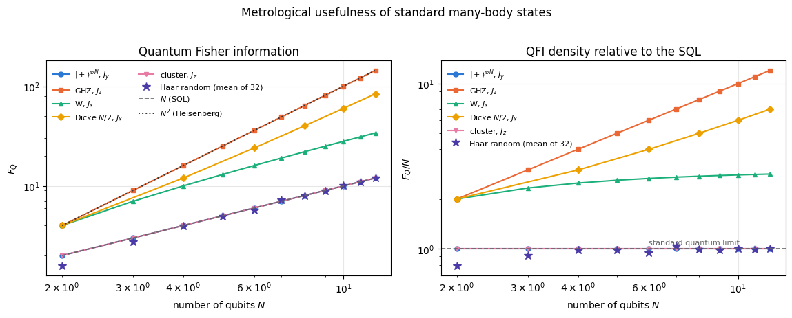
The figure, read from the bottom up:
\(\vert+\rangle^{\otimes N}\) with \(G=J_y\) sits exactly on the SQL line: the best an unentangled state can do.
The cluster state also sits exactly on \(N\), even though it is a genuinely multipartite entangled stabiliser state — the standard resource for measurement-based quantum computation. Its collective fluctuations are precisely those of independent qubits, because all one-body expectation values and all same-Pauli two-body correlators vanish. Entanglement is necessary but far from sufficient for metrological gain. (Section 12 finds a tilted direction where the cluster state does a little better than \(N\); the excess is a boundary term of size \(2\) that does not change the scaling.)
The Haar-random points also collapse onto \(N\), with a scatter that shrinks as \(N\) grows; the measured mean at \(N=8\), \(7.94\pm0.08\) over \(64\) states, is consistent with the exact prediction \(N d/(d+1)=7.97\). A state drawn at random from the Hilbert space is nearly maximally entangled and offers no gain over a product state — the useful states form a vanishingly small, highly structured subset.
The W state at \(3N-2\) beats the SQL but still scales linearly: \(F_Q/N=3-2/N\to3\), a constant-factor gain over the SQL that does not grow with \(N\), while its share of the Heisenberg value, \((3N-2)/N^2\), vanishes.
The Dicke state at \(N(N+2)/2\) and the GHZ state at \(N^2\) are the two Heisenberg-scaling families, differing by a factor of about \(2\).
Physics insight. The QFI is a property of the pair (state, generator). The same W state is worth \(3N-2\) with \(G=J_x\) and exactly \(0\) with \(G=J_z\). Section 12 turns this observation into an algorithm for finding the best generator.
11.1 Ground states as a metrological resource
Many-body ground states are states a laboratory can reach by preparing the lowest-energy state of a tunable Hamiltonian (for instance by an adiabatic ramp of a field) rather than by circuit engineering, which makes them attractive resources. Take the transverse-field Ising chain (our Pauli convention, see 11 — Hamiltonians and ground states):
For \(h\ll1\) the ground state is the symmetric superposition of the two ferromagnetic configurations — a macroscopic Schrödinger-cat state, essentially a GHZ state dressed by quantum fluctuations. For \(h\gg1\) it is \(\vert+\rangle^{\otimes N}\), a product state. Somewhere in between (at \(h=1\) in the limit \(N\to\infty\)) sits a quantum critical point. We compute \(F_Q\) for \(G=J_z\) along the way with the Lanczos ground-state solver.
Code
# ==============================================================================# STEP 12: QFI of transverse-field Ising ground states across the transition# ==============================================================================H_FIELDS = (0.2, 0.5, 0.8, 1.0, 1.2, 1.5, 2.0, 3.0)N_GS = (8, 10)gs_rows = {}t0 = time.time()for N in N_GS: row = []for h in H_FIELDS: terms = heisenberg_terms(N, Jxx=0.0, Jyy=0.0, Jzz=-1.0, hx=-h) # -ZZ bonds, -h X fields E, psi = lanczos_ground_state(terms, N, m=80, key=jax.random.PRNGKey(7), restarts=3) row.append((h, float(E), float(qfi_pure_direction(psi, (0, 0, 1))),float(qfi_pure_direction(psi, (0, 1, 0))))) gs_rows[N] = rowprint(f"(ground states computed in {time.time() - t0:.1f} s)\n")for N in N_GS:print(f"N = {N}:")print(f" {'h':>5s}{'E_0':>10s} | {'F_Q(J_z)':>10s}{'F_Q/N':>8s}{'F_Q/N^2':>9s} | {'F_Q(J_y)':>10s}{'F_Q/N':>8s}")for h, E, fz, fy in gs_rows[N]:print(f" {h:5.2f}{E:10.4f} | {fz:10.4f}{fz / N:8.3f}{fz / N **2:9.4f} | {fy:10.4f}{fy / N:8.3f}")print()
# ==============================================================================# FIGURE: QFI density of the Ising ground state across the quantum phase transition# ==============================================================================fig, axes = plt.subplots(1, 2, figsize=(11.0, 4.1))for k, N inenumerate(N_GS): hs = [r[0] for r in gs_rows[N]] axes[0].plot(hs, [r[2] / N **2for r in gs_rows[N]], MARKERS[k] +"-", color=PALETTE[k], label=f"$N={N}$") axes[1].plot(hs, [r[2] / N for r in gs_rows[N]], MARKERS[k] +"-", color=PALETTE[k], label=f"$N={N}$, $G=J_z$") axes[1].plot(hs, [r[3] / N for r in gs_rows[N]], MARKERS[k] +"--", color=PALETTE[k +2], label=f"$N={N}$, $G=J_y$")axes[0].axvline(1.0, color="0.5", ls=":", lw=1.2)axes[0].text(1.03, 0.9, "$h=1$", fontsize=9, color="0.4")axes[0].set_xlabel("transverse field $h$"); axes[0].set_ylabel(r"$F_Q/N^2$")axes[0].set_title("Ising ground state: Heisenberg fraction"); axes[0].legend(fontsize=9)axes[1].axhline(1.0, color="0.5", ls="--", lw=1.2)axes[1].text(2.2, 1.05, "standard quantum limit", fontsize=8, color="0.4")axes[1].set_xlabel("transverse field $h$"); axes[1].set_ylabel(r"$F_Q/N$")axes[1].set_yscale("log"); axes[1].set_title("QFI density"); axes[1].legend(fontsize=8)fig.tight_layout(); plt.show()
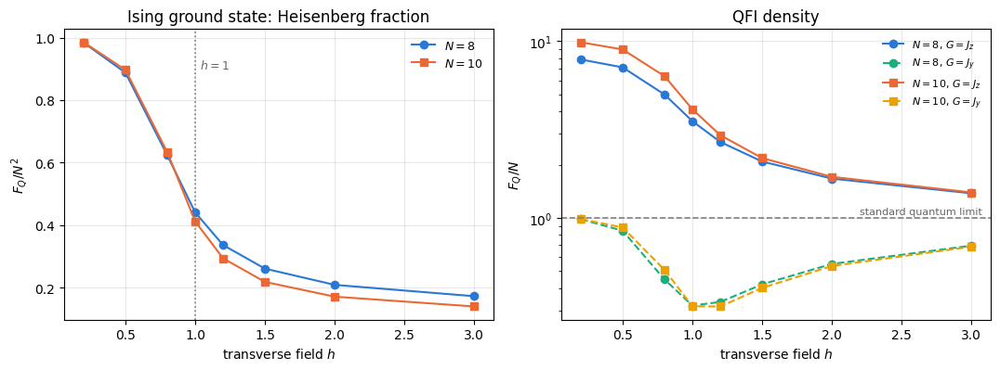
Deep in the ferromagnetic phase (\(h=0.2\)) the ground state reaches \(F_Q/N^2\approx0.98\): the finite chain really is a near-perfect GHZ state, and preparing the ground state of an Ising magnet is an alternative way to make one. As \(h\) grows the cat is destroyed — the ratio \(F_Q/N^2\) falls monotonically through the transition region and, by \(h=3\), \(F_Q\) has dropped to about \(1.4N\) (\(1.38N\) at \(N=8\), \(1.39N\) at \(N=10\)). \(F_Q/N\) for \(G=J_z\) stays above \(1\) everywhere we look: the Ising ground state is entangled at every finite field, and the QFI witnesses it.
The perpendicular generator \(J_y\) tells a different and initially surprising story: its QFI density is not monotonic. It starts at \(F_Q(J_y)/N\approx0.98\) at \(h=0.2\), falls to a minimum of \(\approx0.32\) at \(h=1\), and climbs back to \(\approx0.7\) at \(h=3\). Both ends are easy: at \(h\to0\) the state is the cat \((\vert0\cdots0\rangle+\vert1\cdots1\rangle)/\sqrt2\), for which \(\mathrm{Var}(J_y)=N/4\) exactly, the same as for a product state; at \(h\to\infty\) the state is \(\vert+\rangle^{\otimes N}\), for which \(\mathrm{Var}(J_y)=N/4\) as well. In between, the transverse fluctuations are reduced by the interaction. Since \(\langle Y_q\rangle=0\) by symmetry, Eq. (75) reads \(F_Q(J_y)=N+\sum_{q\neq q'}\langle Y_qY_{q'}\rangle\), so a density below \(1\) means a net negative\(y\)-\(y\) correlation; it is largest in magnitude in the critical region near \(h=1\), where the correlation length is longest. Reading the two generators together: the transition transfers metrological weight from \(J_y\) into \(J_z\) as \(h\) decreases, and the critical region is where the transfer happens.
Numerical practice. In the ordered phase the finite chain has two almost degenerate lowest states of opposite \(\prod_q X_q\) parity — the symmetric and the antisymmetric cat — split by about \(5\times10^{-6}\) at \(N=8\), \(h=0.2\). Which of the two a solver returns does not matter here: both are parity eigenstates and both give the same \(F_Q\approx0.98N^2\). What would matter is landing on a symmetry-broken superposition \(\alpha\vert\!\uparrow\cdots\uparrow\rangle+\beta\vert\!\downarrow\cdots\downarrow\rangle\): then \(F_Q\approx N^2\left(1-(\vert\alpha\vert^2-\vert\beta\vert^2)^2\right)\), anywhere between \(N^2\) and \(0\), and for the fully polarised choice it collapses to a number of order \(1\). Lanczos with a fixed seed and several restarts stayed on a parity eigenstate here — the printed energies and the QFI are smooth in \(h\) — but with a poorer solver one can easily land anywhere in that family. Always check that a computed quantity is smooth in the parameter before interpreting it.
12. The \(3\times3\) QFI matrix and the optimal generator direction
So far we chose the generator direction \(\mathbf n\) by hand. We can do better: for collective generators the dependence on \(\mathbf n\) is quadratic, so the optimisation over the whole sphere reduces to a \(3\times3\) eigenvalue problem.
12.1 Derivation
Let \(G=\mathbf n\cdot\mathbf J=\sum_a n_aJ_a\) with \(\mathbf n\) a real unit vector. Then
where the symmetrisation is free: \(n_an_b\) is symmetric under \(a\leftrightarrow b\), so only the symmetric part of \(\langle J_aJ_b\rangle\) survives the double sum. Defining the real symmetric covariance matrix
\[F_Q(\mathbf n)=\mathbf n^{\mathsf T}\,\mathcal{F}\,\mathbf n . \tag{119}\]
Maximising a quadratic form over unit vectors is the Rayleigh-quotient problem: since \(\mathcal F\) is real symmetric it has an orthonormal eigenbasis \(\mathcal F\mathbf v_k=\lambda_k\mathbf v_k\) with \(\lambda_1\le\lambda_2\le\lambda_3\); expanding \(\mathbf n=\sum_k c_k\mathbf v_k\) with \(\sum_kc_k^2=1\) gives \(\mathbf n^{\mathsf T}\mathcal F\mathbf n=\sum_k\lambda_kc_k^2\le\lambda_3\), with equality for \(\mathbf n=\mathbf v_3\). Hence
\[\max_{\mathbf n}F_Q(\mathbf n)=\lambda_{\max}(\mathcal F),\qquad
\mathbf n_{\text{opt}}=\text{eigenvector of }\mathcal F\text{ for }\lambda_{\max} . \tag{120}\]
Three matrix elements per pair of axes, one \(3\times3\)eigh, and the optimisation over the sphere is done exactly.
The identification \(\mathcal F=4C\) of Eq. (118) uses \(F_Q=4\,\mathrm{Var}(G)\) and is therefore valid only for pure states. The eigenvalue argument itself survives for mixed states, because the mixed-state formula, Eq. (49) of Section 5.3, is also quadratic in the generator: \(F_Q(\mathbf n)=\mathbf n^{\mathsf T}\Gamma\mathbf n\) with
For a mixed state \(\Gamma\) is in general smaller than \(4C\), so feeding a covariance matrix into Eq. (120) returns an upper bound on the optimal QFI rather than the optimal QFI. Notebook 30 makes that gap explicit. Everything in this section is applied to pure states only, where the two coincide.
12.2 Code
The engine’s spin_moments returns exactly \(\langle\mathbf J\rangle\) and the symmetrised covariance \(C\) of Eq. (117), computed matrix-free: it forms \(\vert\phi_a\rangle=J_a\vert\psi\rangle\) for \(a=x,y,z\) (three calls of apply_collective) and reads off \(\tfrac12\langle J_aJ_b+J_bJ_a\rangle=\mathrm{Re}\,\langle\phi_a\vert\phi_b\rangle\) — the real part of an inner product is the symmetrised moment, because \(\langle\phi_a\vert\phi_b\rangle=\langle J_aJ_b\rangle\) and \(\langle J_bJ_a\rangle=\overline{\langle J_aJ_b\rangle}\).
Code
# ==============================================================================# STEP 13: the 3x3 QFI matrix and the optimal generator direction# ==============================================================================def qfi_matrix(psi):"""3x3 QFI matrix of a pure state over the collective generators (J_x, J_y, J_z). MATH Fcal[a,b] = 4 * ( (1/2)<J_a J_b + J_b J_a> - <J_a><J_b> ), F_Q(n) = n^T Fcal n (Eq. 119) COST three matrix-free applications of J_a: O(N 2^N). """ _, cov = spin_moments(psi)return4.0* covdef optimal_direction(psi):"""Best generator direction and the QFI it delivers: (F_max, n_opt) from Eq. (120).""" F = qfi_matrix(psi) w, v = jnp.linalg.eigh(F) # eigenvalues ascendingreturn w[-1], v[:, -1]# --- CHECKPOINT: the quadratic form, Eq. (119), reproduces the direct matrix-free QFI ------------N_DIR =6states_dir = {"GHZ": ghz_state(N_DIR), "W": w_state(N_DIR), "Dicke N/2": dicke_state(N_DIR, N_DIR //2),"|+>^N": product_state("+"* N_DIR), "cluster": cluster_state(N_DIR),"Haar": haar_state(jax.random.PRNGKey(3), N_DIR)}key_dirs = jax.random.normal(jax.random.PRNGKey(11), (12, 3))key_dirs = key_dirs / jnp.linalg.norm(key_dirs, axis=1, keepdims=True) # 12 random unit directionserr_quad =0.0for name, psi in states_dir.items(): F = qfi_matrix(psi)for n in key_dirs: err_quad =max(err_quad, abs(float(n @ F @ n) -float(qfi_pure_direction(psi, n))))print(f"max |n^T Fcal n - 4 Var(n.J)| over 6 states x 12 random directions = {err_quad:.2e}")assert err_quad <1e4* TOLprint(f"\nN = {N_DIR} (SQL: {N_DIR}, Heisenberg: {N_DIR **2})\n")print(f"{'state':>12s} | {'eigenvalues of Fcal':>32s} | {'F_max':>9s}{'n_opt':>24s}{'F(J_z)':>9s}")for name, psi in states_dir.items(): F = qfi_matrix(psi) w = np.array(jnp.linalg.eigvalsh(F)) fmax, nopt = optimal_direction(psi) nopt = np.array(nopt) * np.sign(np.array(nopt)[np.argmax(np.abs(np.array(nopt)))]) # fix the global signprint(f"{name:>12s} | {np.array2string(w, precision=3, floatmode='fixed'):>32s} | {float(fmax):9.4f} "f"{np.array2string(nopt, precision=3, floatmode='fixed'):>24s}{float(qfi_pure_direction(psi, (0, 0, 1))):9.4f}")
max |n^T Fcal n - 4 Var(n.J)| over 6 states x 12 random directions = 2.58e-14
N = 6 (SQL: 6, Heisenberg: 36)
state | eigenvalues of Fcal | F_max n_opt F(J_z)
GHZ | [ 6.000 6.000 36.000] | 36.0000 [0.000 0.000 1.000] 36.0000
W | [-3.553e-15 1.600e+01 1.600e+01] | 16.0000 [1.000 0.000 0.000] -0.0000
Dicke N/2 | [6.163e-33 2.400e+01 2.400e+01] | 24.0000 [1.000 0.000 0.000] 0.0000
|+>^N | [1.421e-14 6.000e+00 6.000e+00] | 6.0000 [-0.000 1.000 -0.000] 6.0000
# ==============================================================================# FIGURE: F_Q as a function of the generator direction, in two great circles# ==============================================================================angles = np.linspace(0, 2* np.pi, 361)fig, axes = plt.subplots(1, 2, figsize=(11.2, 4.6), subplot_kw={"projection": "polar"})for k, (name, psi) inenumerate(list(states_dir.items())): F = np.array(qfi_matrix(psi)) xz = np.array([[np.sin(a), 0.0, np.cos(a)] for a in angles]) # great circle in the x-z plane xy = np.array([[np.cos(a), np.sin(a), 0.0] for a in angles]) # great circle in the x-y plane axes[0].plot(angles, np.einsum("ia,ab,ib->i", xz, F, xz), color=PALETTE[k %6], lw=1.6, label=LBL[name]) axes[1].plot(angles, np.einsum("ia,ab,ib->i", xy, F, xy), color=PALETTE[k %6], lw=1.6, label=LBL[name])for ax, ttl inzip(axes, [r"$x$–$z$ plane (angle from $+z$)", r"$x$–$y$ plane (angle from $+x$)"]): ax.set_title(ttl +f"\n$F_Q(\\mathbf{{n}})$ for $N={N_DIR}$", fontsize=10, pad=16) ax.grid(alpha=0.4)axes[1].legend(fontsize=8, loc="upper right", bbox_to_anchor=(1.32, 1.12))fig.tight_layout(); plt.show()
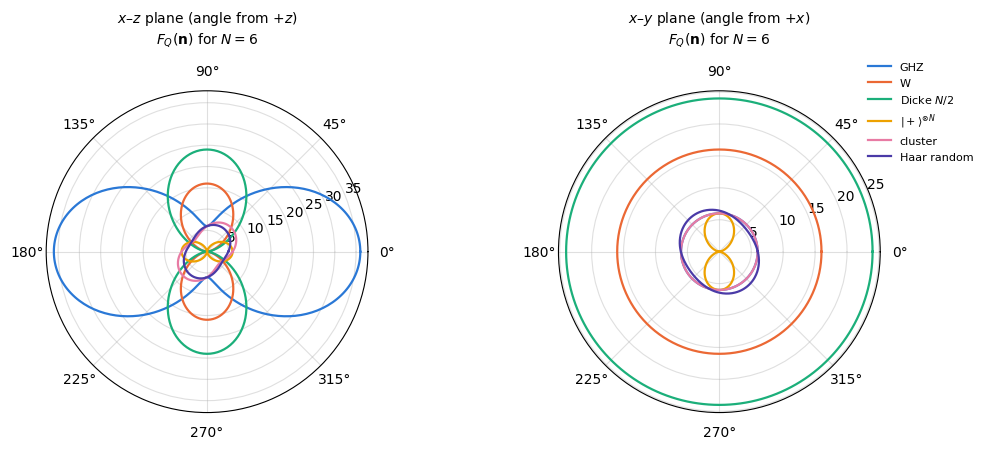
The polar plots are the quadratic form of Eq. (119) drawn as a radius: an ellipse-like curve (strictly, the restriction of a quadric to a great circle) whose longest axis is the optimal direction.
GHZ is a two-lobed figure along \(\hat z\) with \(F_Q=N^2=36\) there and only \(F_Q=N=6\) in the perpendicular plane. Point the generator the wrong way and a Heisenberg-limited state degrades to the standard quantum limit.
W and Dicke are the opposite: flat and isotropic in the \(x\)–\(y\) plane (they are \(J_z\) eigenstates, so the \(z\) direction carries nothing) — any equatorial direction is optimal.
\(\vert+\rangle^{\otimes N}\) is a circle of radius \(N\) in the \(y\)–\(z\) plane and vanishes along \(\hat x\), its own polarisation axis.
The cluster state is the interesting one. Its three eigenvalues at \(N=6\) come out as \((4,6,8)\): unlike the naive \(F_Q=N\) along every Cartesian axis, the optimal direction is the diagonal \((\mathbf{\hat x}+\mathbf{\hat z})/\sqrt2\) and gives \(F_Q=8>N=6\). The off-diagonal entry comes from the two boundary stabilisers of the open chain, \(K_0=X_0Z_1\) and \(K_{N-1}=Z_{N-2}X_{N-1}\). Since every \(\langle J_a\rangle\) vanishes and \(\sigma^x_q\) anticommutes with \(\sigma^z_q\) on the same site, only \(q\neq q'\) survives in Eq. (117) and \(\mathcal{F}_{xz}=\sum_{q\neq q'}\langle X_qZ_{q'}\rangle =\langle X_0Z_1\rangle+\langle X_{N-1}Z_{N-2}\rangle=1+1=2\), while the diagonal stays at \(N\); the eigenvalues are then \(N-2,\,N,\,N+2\), exactly the \((4,6,8)\) printed above. So the cluster state is detected as entangled — but only if you look along the right axis, and the excess is a boundary effect of size \(2\) (we measure \(F_{\max}=N+2\) at both \(N=6\) and \(N=8\)) that leaves the scaling linear.
The Haar-random state is a generic anisotropic blob; its three eigenvalues \((4.08,6.29,7.07)\) scatter around \(N=6\), and its optimal direction is a random-looking unit vector.
Where \(\lambda_{\max}\) is degenerate (W, Dicke, \(\vert+\rangle^{\otimes N}\)) the printed \(\mathbf n_{\text{opt}}\) is one arbitrary vector of the degenerate plane returned by eigh; every unit vector in that plane is equally optimal.
Numerical practice. Replacing an optimisation over a continuum (here: the unit sphere of directions) by an exact eigenvalue problem is always worth hunting for. It costs one eigh of a \(3\times3\) matrix instead of a gradient descent that can stall in local maxima, and it returns the global optimum with a certificate. Notebook 34 uses exactly this \(3\times3\) matrix to track the optimal measurement axis along a one-axis-twisting evolution.
13. The QFI as an entanglement witness
Section 7 proved \(F_Q\le N\) for separable states. Turned around, this is one of the most useful entanglement criteria in experimental many-body physics, because it is operational: a violation certifies entanglement that is strong enough to beat the shot-noise limit in an interferometer.
Criterion 1 (Pezzè and Smerzi 2009). For every separable state of \(N\) qubits and every collective generator \(G=\mathbf n\cdot\mathbf J\),
\[F_Q[\rho,G]\le N;\qquad\text{therefore}\quad F_Q>N\;\Longrightarrow\;\rho\text{ is entangled.} \tag{121}\]
Criterion 2 (Hyllus et al. 2012; Tóth 2012). Call a state \(k\)-producible if it is a mixture of products of blocks of at most \(k\) qubits (so \(k=1\) means separable). Writing \(N=sk+r\) with \(s=\lfloor N/k\rfloor\) and \(0\le r<k\), every \(k\)-producible state obeys
(The second inequality holds because \(kN=sk^2+kr\) and \(r<k\).) Consequently \(F_Q>s\,k^2+r^2\) certifies entanglement depth at least \(k+1\): some block of at least \(k+1\) qubits is genuinely entangled. We always use the sharp middle expression, never the weaker \(kN\) — for \(N=8\), \(k=3\) the two differ by \(2\), and that difference decides the verdict for the W state below.
Criterion 1 is the case \(k=1\) of Criterion 2, and the proof of Criterion 2 (Hyllus et al. 2012; Tóth 2012) takes four steps. Start from a pure \(k\)-producible state \(\vert\psi\rangle=\bigotimes_b\vert\psi_b\rangle\), where block \(b\) holds \(N_b\le k\) qubits and \(\sum_bN_b=N\). The generator splits into block generators, \(G=\sum_bG_b\), and operators acting on different factors of a product state are uncorrelated, so the variances add as in Eq. (93). The eigenvalues of \(G_b\) lie in \([-N_b/2,N_b/2]\), so Popoviciu’s inequality (101) bounds every block:
The largest value of \(\sum_bN_b^2\) over block sizes \(1\le N_b\le k\) with sum \(N\) has at most one incomplete block. If two blocks have sizes \(1\le a\le b<k\), moving one qubit from the first to the second (and dropping the first if it becomes empty) changes the sum by
\[(b+1)^2+(a-1)^2-a^2-b^2=2(b-a)+2>0 ,\]
so the maximum has \(s\) blocks of \(k\) qubits and one block of \(r\), and equals \(sk^2+r^2\). Finally, a mixed \(k\)-producible state is a mixture of products of block density matrices, and each block density matrix is a mixture of pure block states, so \(\rho=\sum_ip_i\vert\psi_i\rangle\langle\psi_i\vert\) with every \(\vert\psi_i\rangle\) pure and \(k\)-producible, possibly with a different partition in every term. Convexity of the quantum Fisher information (notebook 30, Section 5.5) completes the proof:
The bound is reached by \(\vert\mathrm{GHZ}_k\rangle^{\otimes s}\otimes\vert\mathrm{GHZ}_r\rangle\) with \(G=J_z\), because each GHZ block saturates Eq. (101).
Let us apply the criteria to the zoo.
Code
# ==============================================================================# STEP 14: entanglement depth certified by the QFI, Eq. (122)# ==============================================================================def entanglement_depth(F_value, N):"""Largest k+1 such that F_Q > s k^2 + r^2 with s = N//k, r = N%k -- the certified entanglement depth. Returns 1 if the QFI certifies nothing (F_Q <= N), otherwise the smallest block size that must be genuinely entangled. MATH: Eq. (122), k-producible states obey F_Q <= s k^2 + r^2. """ depth =1for k inrange(1, N +1): s, r =divmod(N, k)if F_value > s * k **2+ r **2+1e-9: # k-producible is EXCLUDED depth = k +1return depthN_W =8print(f"N = {N_W}: bound of Eq. (122) for k-producible states")print(" "+" ".join(f"k={k}: {N_W // k * k **2+ (N_W % k) **2:3d}"for k inrange(1, N_W +1)))print(f"\n{'state':>20s}{'G':>7s} | {'F_Q':>9s}{'F_Q/N':>7s} | {'entangled':>10s}{'depth >=':>9s}{'S(N/2 cut)':>11s}")wit_states = [ ("|+>^N", product_state("+"* N_W), (0, 1, 0), "J_y"), ("W", w_state(N_W), (1, 0, 0), "J_x"), ("cluster (opt.dir.)", cluster_state(N_W), None, "n_opt"), ("Dicke N/2", dicke_state(N_W, N_W //2), (1, 0, 0), "J_x"), ("GHZ", ghz_state(N_W), (0, 0, 1), "J_z"), ("Haar random", haar_state(jax.random.PRNGKey(5), N_W), None, "n_opt"),]for name, psi, n, gname in wit_states: f =float(optimal_direction(psi)[0]) if n isNoneelsefloat(qfi_pure_direction(psi, n)) S =float(entanglement_entropy(psi, range(N_W //2)))print(f"{name:>20s}{gname:>7s} | {f:9.4f}{f / N_W:7.3f} | {'YES'if f > N_W else'no':>10s} "f"{entanglement_depth(f, N_W):9d}{S:11.3f}")
N = 8: bound of Eq. (122) for k-producible states
k=1: 8 k=2: 16 k=3: 22 k=4: 32 k=5: 34 k=6: 40 k=7: 50 k=8: 64
state G | F_Q F_Q/N | entangled depth >= S(N/2 cut)
The table puts the two halves of the story side by side. The last column is the entanglement entropy across the middle cut — the standard quantitative entanglement measure for pure states — and it is uncorrelated with metrological usefulness. The Haar-random state has by far the largest entropy (\(3.21\) bits out of a maximum of \(4\), close to the Page value) and yet, even in its optimal direction, it reaches only \(F_Q=8.20\) against the separable bound \(N=8\): the QFI certifies only that the state is entangled (depth \(2\)). The cluster state stops at depth \(2\) as well, although it is a genuinely \(8\)-partite entangled stabiliser state. The GHZ state has just one bit of entropy across the cut — the same as the cluster state — and is certified as genuinely \(8\)-partite entangled; the Dicke state, with \(1.64\) bits, reaches depth \(6\).
The W state is worth a second look because it lands exactly on a bound: \(F_Q=22\) and the \(k=3\) bound of Eq. (122) is \(s k^2+r^2=2\cdot 9+2^2=22\). The inequality in Eq. (122) is not strict, so a value equal to the bound excludes nothing: \(3\)-producibility survives and the certified depth is \(3\), not \(4\). (That \(\vert W_8\rangle\) is in fact genuinely \(8\)-partite entangled is true but invisible to this witness — a reminder that Eq. (122) is a one-sided criterion, and that the exact-equality case has to be decided by the inequality as written; a bare floating-point comparison could go either way. The +1e-9 in entanglement_depth is what implements “not strictly greater”.)
Physics insight. “How much entanglement” and “how useful the entanglement is” are different questions with different answers. Metrology rewards collective, coherent superpositions of configurations with very different values of the generator; the amount of entanglement across a cut is a different quantity. This is why the phrase “useful entanglement” appears so often in the metrology literature, and why \(F_Q\) rather than an entropy is the figure of merit.
13.1 The QFI compared with squeezing, Bell-correlator and negativity criteria
Three other entanglement criteria are in common use besides the quantum Fisher information: Wineland squeezing, the many-body Bell correlator and the negativity. All four are one-sided: a violated bound certifies entanglement, a satisfied bound proves nothing about separability. They differ in what has to be measured and in which states they see.
Quantum Fisher information (Section 13). \(F_Q>N\) certifies entanglement, Eq. (121), and \(F_Q>sk^2+r^2\) an entanglement depth of at least \(k+1\), Eq. (122). \(F_Q\) is not the mean of an observable, so an experiment certifies with a lower bound: by Eq. (89) the slope and the noise of any measured phase signal give \((\partial_\theta\langle O\rangle)^2/(\Delta O)^2\le F_Q\), and the classical Fisher information of any measured outcome distribution is a lower bound by Eq. (50). Notebook 36 estimates \(F_Q\) from randomised single-qubit measurements and counts the snapshots a certification needs (its Section 9); notebook 39 (Sections 3.2 and 5) follows the certified depth after a quench. The criterion certifies a depth close to \(N\) for GHZ and Dicke states, but only depth \(2\) for the cluster and Haar-random states of Section 13.
Wineland squeezing (33, Sections 8.2 and 8.4). \(\xi_R^2=NV_{\min}/\vert\langle\mathbf J\rangle\vert^2<1\) certifies entanglement (Sørensen et al. 2001) and needs only the mean collective spin and one transverse variance, without single-particle resolution. Notebook 33, Eq. (26), shows \(F_Q\ge N/\xi_R^2\), so every squeezed state is also detected by the QFI, and \(N/\xi_R^2>sk^2+r^2\) certifies depth from the two moments alone. Sørensen and Mølmer (2001) turned the same two moments into a sharper depth criterion, by computing the smallest variance a spin \(j=k/2\) can have at a given mean spin. The converse fails: GHZ and Dicke states have \(\langle\mathbf J\rangle=0\), so \(\xi_R^2\) is undefined (infinite), although their \(F_Q\) is of order \(N^2\).
Many-body Bell correlator (26, Sections 4.1–4.3). \(\mathcal E=\max\vert\langle\bigotimes_kU_k\sigma^-U_k^\dagger\rangle\vert^2\), with \(\sigma^-=(X-iY)/2=\vert1\rangle\langle0\vert\), needs local measurements of every particle in two orthogonal settings. \(\mathcal E>4^{-N}\) certifies entanglement, \(\mathcal E>4^{-\lceil N/k\rceil}\) a depth above \(k\), and \(\mathcal E>2^{-N}\) correlations that no local hidden-variable model reproduces. It reaches its maximum \(1/4\) on GHZ states and detects every W state as entangled (\(Q_{\rm E}=\log_2N\), Section 6.3 there), but the W state violates the local-realism bound only at \(N=3\), and the linear cluster state and typical Haar-random states lose the local-realism violation as \(N\) grows (Section 8.1 there).
Negativity (25, Sections 5–6). A negative eigenvalue of the partial transpose certifies entanglement across one chosen bipartition. It needs the density matrix of the two parts together, in practice from tomography, and it says nothing about depth. It detects the GHZ state on every cut with \(\mathcal N=1/2\) and the locally dephased GHZ state at every dephasing probability \(p<1/2\) (Sections 7.4 and 8.1 there), and it misses bound entanglement (Section 5.4 there).
The cell below evaluates the QFI and squeezing criteria on five states at \(N=6\). The quantum Fisher information is taken in the optimal collective direction, \(\lambda_{\max}\) of the matrix of Section 12, and the certified depth comes from entanglement_depth. The squeezed state is the one-axis-twisted state \(e^{-i\mu J_z^2}\vert+\rangle^{\otimes N}\) at the twisting angle that minimises the closed form of \(\xi_R^2\) in notebook 33, Eq. (23). Every number is asserted against a closed form: \(N\), \(N^2\), \(3N-2\) and \(N(N+2)/2\) for the QFI (Section 11), and for the W state \(\xi_R^2=N(3N-2)/(N-2)^2\), which follows from \(\vert\langle\mathbf J\rangle\vert=N/2-1\) and \(V_{\min}=\mathrm{Var}(J_x)=(3N-2)/4\); for the squeezed state \(F_Q=4V_+\) and \(\xi_R^2\) are those of notebook 33, Sections 9.5 and 13.
Code
# ==============================================================================# STEP 14b: QFI depth and Wineland squeezing for five states at one N# ==============================================================================N_C =6mu_grid = np.linspace(0.01, 0.8, 79_001) # closed form of notebook 33, Eqs. (22)-(23)A_mu =1- np.cos(2* mu_grid) ** (N_C -2)B_mu =4* np.sin(mu_grid) * np.cos(mu_grid) ** (N_C -2)xiR_mu = (1+ (N_C -1) /4* (A_mu - np.sqrt(A_mu **2+ B_mu **2))) / np.cos(mu_grid) ** (2* (N_C -1))i_opt =int(np.argmin(xiR_mu))mu_opt =float(mu_grid[i_opt])F_oat = N_C * (1+ (N_C -1) /4* (A_mu[i_opt] + np.sqrt(A_mu[i_opt] **2+ B_mu[i_opt] **2))) # 4 V_+cert_states = [ # name, state, closed-form F_Q^max, closed-form xi_R^2 (None: mean spin vanishes) ("|+>^N", product_state("+"* N_C), N_C, 1.0), ("GHZ", ghz_state(N_C), N_C **2, None), ("W", w_state(N_C), 3* N_C -2, N_C * (3* N_C -2) / (N_C -2) **2), ("Dicke N/2", dicke_state(N_C, N_C //2), N_C * (N_C +2) /2, None), (f"OAT mu={mu_opt:.4f}", oat_evolve(product_state("+"* N_C), mu_opt), F_oat, float(xiR_mu[i_opt])),]print(f"N = {N_C}: k-producible bounds s k^2 + r^2 = "+", ".join(f"{N_C // k * k **2+ (N_C % k) **2}"for k inrange(1, N_C +1)) +" (k = 1..N)\n")print(f"{'state':>16s} | {'F_Q^max':>8s}{'F_Q/N':>6s}{'depth':>5s} | {'xi_R^2':>9s}{'N/xi_R^2':>9s}{'depth':>5s}")for name, psi, F_ana, xi_ana in cert_states: F_max =float(optimal_direction(psi)[0]) mean, _ = spin_moments(psi)assertabs(F_max - F_ana) <1e4* TOL # closed forms of Section 11 and nb 33if xi_ana isNone:assertfloat(jnp.linalg.norm(mean)) <1e3* TOL # zero mean spin: xi_R^2 undefined xi_txt, bnd_txt, d_sq ="undefined", "--", "--"else: xi =float(spin_squeezing(psi))assertabs(xi - xi_ana) <1e4* TOLassert N_C / xi <= F_max +1e4* TOL # F_Q >= N / xi_R^2, nb 33 Eq. (26) xi_txt, bnd_txt, d_sq =f"{xi:9.4f}", f"{N_C / xi:9.4f}", f"{entanglement_depth(N_C / xi, N_C):5d}"print(f"{name:>16s} | {F_max:8.4f}{F_max / N_C:6.3f}{entanglement_depth(F_max, N_C):5d} | "f"{xi_txt:>9s}{bnd_txt:>9s}{d_sq:>5s}")
N = 6: k-producible bounds s k^2 + r^2 = 6, 12, 18, 20, 26, 36 (k = 1..N)
state | F_Q^max F_Q/N depth | xi_R^2 N/xi_R^2 depth
The five rows separate the two criteria. The GHZ state is certified as genuinely \(6\)-partite entangled by the QFI, and the Dicke state reaches depth \(5\) (\(F_Q=24\) against the \(k=5\) bound \(26\) and the \(k=4\) bound \(20\)), while neither has a mean spin, so the squeezing criterion cannot be applied at all. The W state is detected by the QFI with depth \(3\) (\(16\) against the bounds \(12\) and \(18\)) but has \(\xi_R^2=6\): a Ramsey readout of its mean spin would give a phase variance six times the standard quantum limit. The twisted state is the case squeezing is designed for. With \(\xi_R^2=0.416\) it is entangled by the Wineland criterion, and \(N/\xi_R^2=14.4\) already exceeds the \(k=2\) bound \(12\), so the two collective moments certify depth \(3\), the same depth as its full \(F_Q=17.1\). The product state sits on both bounds, \(F_Q=N\) and \(\xi_R^2=1\), and certifies nothing.
14. Noise: QFI of mixed states for three channels
Real devices produce mixed states, and Eq. (75) no longer applies, because a mixed state has no single \(\vert\psi\rangle\) whose variance we could take. The general answer for a unitary encoding is Eq. (49), derived in Section 5.3 from the symmetric logarithmic derivative and implemented by the engine’s qfi_mixed. Notebook 30 — QFI from the SLD adds the treatment of the kernel of \(\rho\), the explicit optimal measurement for mixed states, and the reduction of Eq. (49) to \(4\,\mathrm{Var}(G)\) for pure states. Two features of Eq. (49) matter here: it costs a full eigendecomposition, \(O(8^N)\), so it is a small-system tool (\(N\le7\) in practice); and every term is non-negative, so mixing can only be understood by looking at how both the eigenvalues and the matrix elements change.
One inequality is worth recording now, because it will be used repeatedly later in the chapter. Since \((\lambda_m-\lambda_n)^2\le(\lambda_m+\lambda_n)^2\) for non-negative eigenvalues, Eq. (49) is bounded by \(2\sum_{m,n}(\lambda_m+\lambda_n)\left\vert\langle m\vert G\vert n\rangle\right\vert^2=4\langle G^2\rangle\). Eq. (49) is unchanged by the shift \(G\to G-\langle G\rangle\mathbb 1\) (the diagonal terms \(m=n\) carry the factor \((\lambda_m-\lambda_m)^2=0\), and the off-diagonal matrix elements do not see the shift), so the same bound applied to the shifted generator gives
Equality holds for every pure state (Section 6). For mixed states the inequality is in general strict, although not always: \(\rho=\tfrac12(\vert00\rangle\langle00\vert+\vert11\rangle\langle11\vert)\) with \(G=\tfrac12X_1\) has \(F_Q=4\mathrm{Var}(G)=1\), because the two components rotate in orthogonal subspaces and stay perfectly distinguishable. So \(4\,\mathrm{Var}(G)\) never under-estimates the quantum Fisher information: it is the right answer for pure states and an upper bound for mixed ones. Notebook 30 shows the gap numerically (the inequality is stated in Tóth and Apellaniz 2014, Section 4.2), and notebook 36 measures how large it becomes for noisy states. Since the spectrum of \(J_z\) has width \(N\), Eqs. (123) and (101) extend the Heisenberg bound \(F_Q\le N^2\) to mixed states.
Section 10.2 derived the quantum Fisher information of the dephased GHZ state exactly, Eq. (111), and checked it in STEP 9. Here we compare the three standard single-qubit channels — depolarising, dephasing and amplitude damping — applied to every qubit of a GHZ state before the encoding, for \(N=2,\dots,6\) and a range of error probabilities.
Code
# ==============================================================================# STEP 15: three channels, GHZ, N = 2 ... 6# ==============================================================================# PARAMETERS ------------------------------------------------------------------P_GRID = np.array([0.0, 0.005, 0.01, 0.02, 0.05, 0.10, 0.15, 0.20, 0.30]) # error probability per qubit# -----------------------------------------------------------------------------CHANNELS = {"depolarising": kraus_depolarizing, "dephasing": kraus_dephasing,"amplitude damping": kraus_amplitude_damping}noise_data = {}t0 = time.time()for cname, kfn in CHANNELS.items():for N in (2, 3, 4, 5, 6): vals = []for p in P_GRID: rho = apply_local_channel(to_dm(ghz_state(N)), kfn, float(p)) vals.append(float(qfi_noisy(rho, (0, 0, 1), N))) noise_data[(cname, N)] = np.array(vals)print(f"(noise sweep computed in {time.time() - t0:.1f} s)\n")print(f"GHZ_N, generator J_z, QFI normalised by the ideal value N^2\n")for cname in CHANNELS:print(f" {cname}:")print(" "+f"{'N':>3s} | "+" ".join(f"p={p:<5.3f}"for p in P_GRID))for N in (2, 4, 6): v = noise_data[(cname, N)] / N **2print(" "+f"{N:3d} | "+" ".join(f"{x:7.4f}"for x in v))print()
# ==============================================================================# FIGURE: fragility of the Heisenberg limit# ==============================================================================fig, axes = plt.subplots(1, 3, figsize=(13.5, 4.1), sharey=True)for j, cname inenumerate(CHANNELS):for k, N inenumerate((2, 3, 4, 5, 6)): axes[j].semilogy(P_GRID, noise_data[(cname, N)] / N **2, MARKERS[k] +"-", color=PALETTE[k], ms=4, label=f"$N={N}$")if cname =="dephasing": pp = np.linspace(0, 0.3, 200)for k, N inenumerate((2, 6)): axes[j].semilogy(pp, (1-2* pp) ** (2* N), "k--", lw=1) axes[j].text(0.12, 2e-3, r"$(1-2p)^{2N}$", fontsize=9) axes[j].axhline(1.0, color="0.6", ls=":", lw=1) axes[j].set_xlabel("error probability $p$ per qubit"); axes[j].set_title(cname)axes[0].set_ylabel(r"$F_Q/N^2$"); axes[0].set_ylim(1e-3, 2.0); axes[0].legend(fontsize=8)fig.suptitle(r"GHZ$_N$ under local noise before phase encoding, generator $G=J_z$", y=1.02)fig.tight_layout(); plt.show()
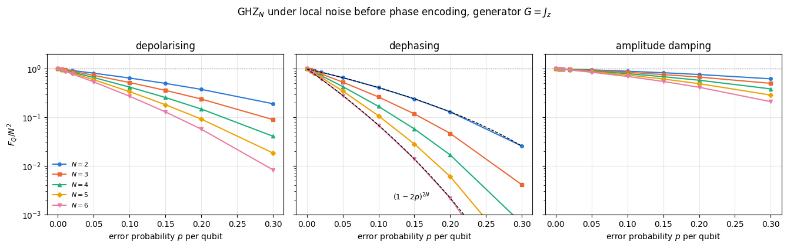
Code
# ==============================================================================# FIGURE: decay of the advantage with N at fixed p# ==============================================================================fig, axes = plt.subplots(1, 2, figsize=(11.0, 4.1))Nn = np.array([2, 3, 4, 5, 6])for j, p_show inenumerate((0.02, 0.10)): ip =int(np.argmin(np.abs(P_GRID - p_show)))for k, cname inenumerate(CHANNELS): axes[j].semilogy(Nn, [noise_data[(cname, N)][ip] for N in Nn], MARKERS[k] +"-", color=PALETTE[k], ms=5, label=cname) axes[j].semilogy(Nn, Nn **2.0, ":", color="0.2", lw=1.2, label=r"$N^2$ (ideal GHZ)") axes[j].semilogy(Nn, Nn *1.0, "--", color="0.5", lw=1.2, label=r"$N$ (SQL)") axes[j].set_xlabel("number of qubits $N$"); axes[j].set_ylabel(r"$F_Q$") axes[j].set_title(f"$p = {P_GRID[ip]:.3f}$ per qubit"); axes[j].set_xticks(Nn)axes[0].legend(fontsize=8)fig.tight_layout(); plt.show()
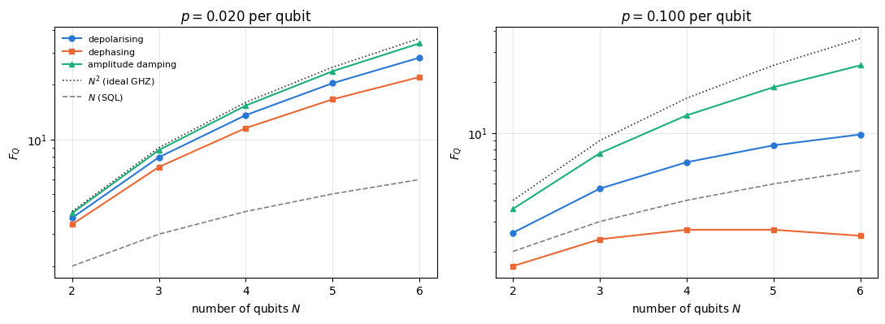
Code
# ==============================================================================# STEP 15b: comparing two channels at the SAME physical strength, not the same label p# ==============================================================================# A single qubit under dephasing(p) keeps a fraction (1 - 2p) of its transverse Bloch components;# under depolarising(p) it keeps (1 - 4p/3). Matching those two contractions to a common value eta# removes the parametrisation convention from the comparison and leaves only physics.print("GHZ_N, G = J_z: dephasing vs depolarising at EQUAL transverse Bloch contraction eta\n")print(f"{'eta':>5s}{'p(deph)':>8s}{'p(depol)':>9s} | "+" ".join(f"{'N=%d'% N:>21s}"for N in (2, 4, 6)))print(f"{'':>5s}{'':>8s}{'':>9s} | "+" ".join(f"{'deph':>7s}{'depol':>8s}{'ratio':>6s}"for _ in (2, 4, 6)))for eta in (0.98, 0.90, 0.80): p_deph, p_depol = (1- eta) /2, 3* (1- eta) /4 cells = []for N in (2, 4, 6): a =float(qfi_noisy(apply_local_channel(to_dm(ghz_state(N)), kraus_dephasing, p_deph), (0, 0, 1), N)) / N **2 b =float(qfi_noisy(apply_local_channel(to_dm(ghz_state(N)), kraus_depolarizing, p_depol), (0, 0, 1), N)) / N **2 cells.append(f"{a:7.4f}{b:8.4f}{b / a:6.2f}")assertabs(a - (1-2* p_deph) ** (2* N)) <1e4* TOL # the dephasing column is still Eq. (111)assert b > a -1e-12# depolarising is never the harsher of the two# amplitude damping, Eq. (124), at its own parameter p_ad = 1 - eta^2 (same transverse contraction eta) p_ad =1- eta **2 c_ad =float(qfi_noisy(apply_local_channel(to_dm(ghz_state(N)), kraus_amplitude_damping, p_ad), (0, 0, 1), N)) / N **2assertabs(c_ad -2* (1- p_ad) ** N / (1+ p_ad ** N + (1- p_ad) ** N)) <1e4* TOLprint(f"{eta:5.2f}{p_deph:8.3f}{p_depol:9.3f} | "+" ".join(cells))
GHZ_N, G = J_z: dephasing vs depolarising at EQUAL transverse Bloch contraction eta
eta p(deph) p(depol) | N=2 N=4 N=6
| deph depol ratio deph depol ratio deph depol ratio
0.98 0.010 0.015 | 0.9224 0.9410 1.02 0.8508 0.8857 1.04 0.7847 0.8335 1.06
0.90 0.050 0.075 | 0.6561 0.7250 1.10 0.4305 0.5285 1.23 0.2824 0.3842 1.36
The dephasing panel confirms Eq. (111) again: the numerical points lie on the dashed analytic curves (STEP 9 printed the deviations, at the level of round-off). All three channels behave the same way qualitatively: at fixed per-qubit error probability the ratio \(F_Q/N^2\) falls with \(N\), so the curves for larger \(N\) lie below the smaller ones. Concretely, at \(p=0.02\) (a very good gate) the dephased \(N=6\) GHZ retains \(F_Q/N^2=0.61\), while at \(p=0.10\) it is down to \(0.069\). The right-hand figure shows what this means in absolute terms: at \(p=0.10\) the dephased GHZ state sits below the standard quantum limit at every \(N\) shown, and its \(F_Q\) stops growing altogether around \(N\approx4\) (by Eq. (112), \(N^2(1-2p)^{2N}\) is maximised at \(N^\ast=-1/\ln(1-2p)\approx4.5\) and decreases beyond it); the depolarised state still grows, but far more slowly than \(N^2\).
At equal nominal \(p\) the measured ordering is the same at every \(N\) and every \(p\) we tried: amplitude damping is the gentlest, depolarising is intermediate, dephasing is the harshest (at \(N=6\), \(p=0.05\): \(0.85\), \(0.54\), \(0.28\) of the ideal value). Part of that ordering is bookkeeping and part of it is physics, and the two must be separated.
The bookkeeping. Equal \(p\) does not mean equal physical strength. A single qubit under our dephasing channel keeps a fraction \(1-2p\) of its transverse Bloch components; under our depolarising channel it keeps \(1-4p/3\), because the \(X\) and \(Y\) errors destroy transverse coherence just as the \(Z\) error does; the convention factor is therefore \(3/2\) (counting only “\(Z\) with probability \(p/3\)” would suggest \(3\)). Matching the two contractions, \(p_{\text{depol}}=\tfrac32 p_{\text{deph}}\), is what STEP 15b does.
The physics that is left. Even at matched contraction the depolarising channel is the milder of the two, and the gap grows with \(N\) and with noise strength: the measured ratio \(F_Q^{\text{depol}}/F_Q^{\text{deph}}\) runs from \(1.02\) at \(\eta=0.98\), \(N=2\) to \(1.88\) at \(\eta=0.80\), \(N=6\). The reason is visible in the structure of the two states. Local dephasing keeps all the weight in the single two-dimensional block spanned by \(\vert0\cdots0\rangle\) and \(\vert1\cdots1\rangle\) and merely shrinks its coherence, which is why Eq. (111) is exact. Local depolarising also flips bits, and a flip on qubit \(q\) maps the pair \((\vert0\cdots0\rangle,\vert1\cdots1\rangle)\) onto another complementary pair \((\vert s\rangle,\vert\bar s\rangle)\). The state therefore stays block diagonal in complementary pairs, and each block is again a small cat, with \(J_z\) eigenvalues \(\pm(N-2w_s)/2\) instead of \(\pm N/2\), where \(w_s\) is the number of ones in \(s\). Those blocks contribute less than the top one but not zero, and their contributions are what the depolarising channel retains and the dephasing channel does not.
Amplitude damping is milder again, and the reason can be computed exactly. Its Kraus operators \(K_0=\mathrm{diag}(1,\sqrt{1-p})\) and \(K_1=\sqrt p\,\vert0\rangle\langle1\vert\) multiply the GHZ coherence by \((1-p)^{N/2}\) — a transverse contraction \(\sqrt{1-p}\approx1-p/2\) per qubit, a much weaker channel than dephasing at the same label \(p\) (bookkeeping again). On top of that, the decay keeps the surviving cat pure. Within the block spanned by \(\vert0\cdots0\rangle\) and \(\vert1\cdots1\rangle\) the populations are \(a=\tfrac12(1+p^N)\) and \(b=\tfrac12(1-p)^N\) and the coherence is \(c=\tfrac12(1-p)^{N/2}\), so \(c^2=ab\) up to the tiny \(p^N\) term: the block is an unbalanced cat \(\sqrt a\,\vert0\cdots0\rangle+\sqrt b\,\vert1\cdots1\rangle\) that is unbalanced but pure. The weight that has decayed sits on strings that are eigenstates of \(J_z\) with no coherence between them, and contributes nothing. The two-level formula \(F_Q=4N^2c^2/(a+b)\) for this block gives
which reproduces the amplitude-damping rows of the STEP 15 table (e.g. \(0.8473\) at \(N=6\), \(p=0.05\)) and is asserted in STEP 15b at the three matched contractions. At matched transverse contraction, \((1-p_{\text{AD}})^N=(1-2p_{\text{deph}})^{2N}\), amplitude damping beats dephasing by exactly the factor \(2/(1+p^N+(1-p)^N)>1\), the price of renormalising a block that has kept its coherence. What is convention-independent — and what matters for an experiment — is the exponential-in-\(N\) decay shared by all three.
Physics insight. This is the central practical tension of quantum metrology. The GHZ state has the maximum possible \(F_Q\) and the minimum possible robustness: a coherence spread over \(N\) qubits decays \(N\) times faster than a single-qubit coherence. Notebook 32 turns this into a statement about the optimal interrogation time; notebook 33 introduces spin-squeezed states, and notebook 34 compares Ramsey, squeezed, GHZ and one-axis-twisting interferometry under noise.
15. Losing particles: the QFI of a subsystem, and Schmidt compression
A different and equally common imperfection: the phase is imprinted on all \(N\) qubits, but only \(K\) of them reach the detector — atoms escape the trap, photons are lost, a detector goes dark. What survives is the reduced state
Now use the matrix view of a bipartite state (the Schmidt trick of 06 — states, observables, entanglement): reshape the tensor \(\psi\) into a matrix \(\Psi\) of shape \((d_A,d_B)\) with \(d_A=2^K\), \(d_B=2^{N-K}\), and reshape \(\vert\phi\rangle=G\vert\psi\rangle\) into \(\Phi\) the same way. Partial traces become matrix products:
and we are done. (Equation (49) is Eq. (48) specialised to a full state with unitary encoding; for a subsystem the generator no longer acts inside \(A\) alone, so we must use the derivative itself.)
15.2 Schmidt compression: making \(K=N-1\) as cheap as \(K=1\)
Equation (48) needs an eigendecomposition of \(\rho_A\), costing \(O(d_A^3)=O(8^K)\). Losing one qubit would then be the most expensive case, even though losing one qubit barely mixes the state. The cure is the Schmidt rank bound: for a pure \(\vert\psi\rangle\), \(\;\mathrm{rank}(\rho_A)\le\min(d_A,d_B)\). Moreover both \(\rho_A\) and \(\partial_\theta\rho_A\) from Eq. (125) have all their rows and columns inside the span of the columns of \(\Psi\) and \(\Phi\) — a subspace of dimension at most \(2d_B\). So:
stack \(B=\left[\;\Psi\;\;\Phi\;\right]\), of shape \((d_A,2d_B)\);
compute a thin QR decomposition \(B=QR\); the columns of \(Q\) (at most \(2d_B\) of them) span the active subspace;
project, \(\tilde\Psi=Q^\dagger\Psi\), \(\tilde\Phi=Q^\dagger\Phi\), and rebuild \(\rho_A\), \(\partial_\theta\rho_A\) there;
diagonalise the small matrices.
The projection is an isometry, so the non-zero eigenvalues of \(\rho_A\) and all the matrix elements in Eq. (48) are unchanged, and the eigendecomposition drops from \(O(8^{K})\) to \(O(8^{N-K})\). Combining the two branches, the diagonalisation costs \(O\!\left(8^{\min(K,\,N-K)}\right)\), which is symmetric around the middle cut. Two cheaper terms remain in every case and set the floor of the measured timings in Section 16: applying the generator, \(O(N2^N)\), and the QR plus the projections, \(O(2^K4^{N-K})\).
Code
# ==============================================================================# STEP 16: QFI of a subsystem, with and without Schmidt (QR) compression# ==============================================================================def qfi_from_derivative(rho, drho, tol=1e-12):"""General SLD quantum Fisher information from a state and its derivative, Eq. (48). MATH F_Q = 2 sum_{m,n} |<m|drho|n>|^2 / (lam_m + lam_n), summed over lam_m + lam_n > tol, with rho = sum_m lam_m |m><m|. (Section 5.3; kernel treatment in notebook 30.) COST one Hermitian eigendecomposition, O(d^3). """ lam, v = jnp.linalg.eigh(rho) D = v.conj().T @ drho @ v den = lam[:, None] + lam[None, :] ok = den > tolreturn2* jnp.sum(jnp.where(ok, jnp.abs(D) **2/ jnp.where(ok, den, 1.0), 0.0))def subsystem_qfi(psi, n_dir, K, compress=True, tol=1e-12):"""QFI of the reduced state of the FIRST K qubits after encoding with G = n.J on all N qubits. MATH Psi = psi reshaped to (2^K, 2^{N-K}), Phi = (G psi) reshaped the same way; rho_A = Psi Psi^dag, d rho_A/d theta = -i (T - T^dag) with T = Phi Psi^dag [Eq. (125)] IMPLEMENTATION when 2^K > 2^{N-K} the two matrices span a subspace of dimension <= 2^{N-K+1}; a thin QR of [Psi | Phi] gives an isometry Q onto it, and everything is done inside. COST O(8^min(K, N-K)) for the eigendecomposition instead of O(8^K). """ P = pauli_direction(n_dir) phi =0.5* apply_collective(psi, P) # |phi> = (n.J)|psi>, matrix-free Psi = psi.reshape(2** K, -1) Phi = phi.reshape(2** K, -1)if compress and Psi.shape[0] > Psi.shape[1]: Q, _ = jnp.linalg.qr(jnp.concatenate([Psi, Phi], axis=1)) # thin QR: active subspace Psi, Phi = Q.conj().T @ Psi, Q.conj().T @ Phi rho_A = Psi @ Psi.conj().T T = Phi @ Psi.conj().Treturn qfi_from_derivative(rho_A, -1j* (T - T.conj().T), tol)# --- CHECKPOINT 1: no loss (K = N) must reproduce 4 Var(G) --------------------------for name, psi, n in (("GHZ(6)", ghz_state(6), (0, 0, 1)), ("W(6)", w_state(6), (1, 0, 0)), ("Haar(6)", haar_state(jax.random.PRNGKey(2), 6), (0, 0, 1))): a =float(subsystem_qfi(psi, n, 6)) b =float(qfi_pure_direction(psi, n))print(f"K=N check {name:9s}: subsystem formula {a:12.8f} 4 Var(G) {b:12.8f} err {abs(a - b):.2e}")assertabs(a - b) <1e4* TOL# --- CHECKPOINT 2: compressed vs uncompressed, and vs an independent brute-force route ------psi_t = haar_state(jax.random.PRNGKey(4), 7)print()for K in (2, 4, 6): a =float(subsystem_qfi(psi_t, (0, 0, 1), K, compress=True)) b =float(subsystem_qfi(psi_t, (0, 0, 1), K, compress=False))# brute force: build rho_A(theta) explicitly and differentiate it with jax.jacfwddef rho_A_of_theta(th, K=K): U = jnp.cos(th /2) * I2 -1j* jnp.sin(th /2) * Z p = psi_tfor q inrange(7): p = apply_gate(p, U, [q])return rdm(p, range(K)) c =float(qfi_from_derivative(rho_A_of_theta(0.0), jax.jacfwd(rho_A_of_theta)(0.0)))print(f"K={K}: compressed {a:.10f} uncompressed {b:.10f} jacfwd brute force {c:.10f} "f"max err {max(abs(a - b), abs(a - c)):.2e}")assertmax(abs(a - b), abs(a - c)) <1e4* TOL
K=2: compressed 0.0846140897 uncompressed 0.0846140897 jacfwd brute force 0.0846140897 max err 0.00e+00
K=4: compressed 2.1999559741 uncompressed 2.1999559741 jacfwd brute force 2.1999559741 max err 1.33e-15
K=6: compressed 5.7844875410 uncompressed 5.7844875410 jacfwd brute force 5.7844875410 max err 4.44e-15
Three independent implementations agree: the compressed and uncompressed versions of Eqs. (125)–(48), and a brute-force route that applies the encoding \(e^{-i\theta Z/2}\) gate by gate with apply_gate, traces out the lost qubits with rdm, and differentiates the resulting \(\rho_A(\theta)\) at \(\theta=0\) with forward-mode automatic differentiation (jax.jacfwd propagates one tangent through the whole computation; no finite differences and no step size). The last check is the important one: it tests the claim that the derivative of the reduced state is \(-i(T-T^\dagger)\), the only non-obvious step of the derivation, and it does so without using apply_collective at all — so it also validates the matrix-free generator that Sections 8–12 relied on.
Code
# ==============================================================================# STEP 17: the QFI that survives the loss of k qubits# ==============================================================================N_LOSS =8loss_states = [("GHZ", ghz_state(N_LOSS), (0, 0, 1)), ("W", w_state(N_LOSS), (1, 0, 0)), ("Dicke N/2", dicke_state(N_LOSS, N_LOSS //2), (1, 0, 0)), ("|+>^N", product_state("+"* N_LOSS), (0, 1, 0)), ("cluster", cluster_state(N_LOSS), (0, 0, 1)), ("Haar", haar_state(jax.random.PRNGKey(1), N_LOSS), (0, 0, 1))]loss_tab = {}print(f"N = {N_LOSS}: QFI of the reduced state of the first {N_LOSS}-k qubits\n")print(f"{'state':>12s} | "+" ".join(f"k={k:<7d}"for k inrange(N_LOSS)))for name, psi, n in loss_states: vals = [float(subsystem_qfi(psi, n, N_LOSS - k)) for k inrange(N_LOSS)] loss_tab[name] = np.array(vals)print(f"{name:>12s} | "+" ".join(f"{v:8.4f} "for v in vals))
N = 8: QFI of the reduced state of the first 8-k qubits
state | k=0 k=1 k=2 k=3 k=4 k=5 k=6 k=7
# ==============================================================================# FIGURE: metrological power lost with the particles# ==============================================================================fig, axes = plt.subplots(1, 2, figsize=(11.2, 4.2))ks = np.arange(N_LOSS)for j, (name, psi, n) inenumerate(loss_states): axes[0].plot(ks, loss_tab[name], MARKERS[j %6] +"-", color=PALETTE[j %6], ms=5, label=LBL[name]) axes[1].semilogy(ks, np.clip(loss_tab[name] /max(loss_tab[name][0], 1e-12), 1e-6, None), MARKERS[j %6] +"-", color=PALETTE[j %6], ms=5, label=LBL[name])axes[1].axhline(1e-6, color="0.6", ls=":", lw=1)axes[1].text(0.15, 1.4e-6, "floor: values clipped here are exactly zero", fontsize=7, color="0.4")axes[0].axhline(N_LOSS, color="0.5", ls="--", lw=1)axes[0].text(4.2, N_LOSS *1.1, "SQL for the full state", fontsize=8, color="0.4")axes[0].set_xlabel("number of lost qubits $k$"); axes[0].set_ylabel(r"$F_Q$ of the kept $N-k$ qubits")axes[0].set_title(f"$N={N_LOSS}$: QFI under particle loss"); axes[0].legend(fontsize=8)axes[1].set_xlabel("number of lost qubits $k$"); axes[1].set_ylabel(r"$F_Q(k)/F_Q(0)$")axes[1].set_title("Fraction retained (log scale)"); axes[1].legend(fontsize=8)fig.tight_layout(); plt.show()
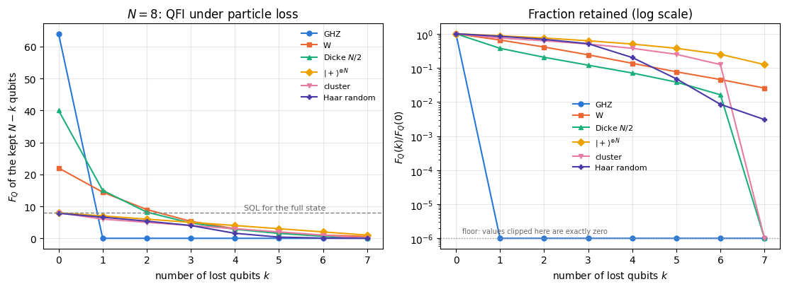
The GHZ curve drops discontinuously: losing a single qubit takes \(F_Q\) from \(N^2=64\) to exactly \(0\), for the reason derived in Section 10.1. The reduced state, Eq. (107), is a mixture of two \(J_z\) eigenstates, which does not change under the encoding. All of the GHZ phase information is stored in a single global coherence, and a single lost particle carries it away.
Everything else degrades gracefully. The W state loses a roughly constant factor of about \(0.6\) per lost qubit (\(22\to14.44\to9.00\to5.31\to\ldots\)); the Dicke state pays a steep price for the first loss (\(40\to15\)) and then settles into a similar geometric decay; the product state loses exactly one unit of QFI per qubit (\(F_Q=N-k\), as it must, since the survivors are just \(N-k\) independent qubits); the cluster state drops by \(2\) at the first loss and then by one unit per qubit (\(F_Q=N-k-1\) for \(k\ge1\)); the Haar state follows the product state at first and then falls steeply once half of the qubits are gone (\(4.00\) at \(k=3\), \(1.57\) at \(k=4\), \(0.37\) at \(k=5\)). For a random state the reduced state of fewer than \(N/2\) qubits is close to maximally mixed (the Page regime), and a maximally mixed state carries no phase information. For a resource that must survive real detectors, a graceful decay matters more than the largest ideal value. (In the right-hand panel, curves that touch the floor at \(10^{-6}\) are exactly zero: GHZ from \(k=1\) on, cluster and Dicke at \(k=7\).)
Physics insight. This is the quantitative version of the folklore “GHZ states are fragile, Dicke and squeezed states are robust”. Notebook 37 revisits it as a systematic study of QFI versus particle loss, and notebook 34 shows where along a one-axis-twisting evolution the trade-off is best.
16. Performance: the total cost
Three regimes, three scalings:
quantity
algorithm
time
memory
\(F_Q\) of a pure state
qfi_pure: \(N\) einsums plus two inner products
\(O(N2^N)\)
\(O(2^N)\)
\(3\times3\) QFI matrix
three collective applications plus a \(3\times3\)eigh
\(O(N2^N)\)
\(O(2^N)\)
\(F_Q\) of a mixed state, Eq. (49)
dense eigendecomposition of \(\rho\)
\(O(8^N)\)
\(O(4^N)\)
\(F_Q\) of a subsystem, compressed
thin QR plus a small eigh
\(O\!\left(8^{\min(K,N-K)}\right)\)
\(O(2^N)\)
Let us measure the first and the last, separating compile time from run time as always.
Code
# ==============================================================================# STEP 18: measured cost of the matrix-free QFI, and of Schmidt compression# ==============================================================================print("Pure-state QFI, F_Q = 4 Var(J_z), matrix-free (jit-compiled)\n")print(f"{'N':>3s}{'dim 2^N':>9s} | {'compile [ms]':>13s}{'run [ms]':>10s}{'F_Q':>10s}")qfi_rows = []for N in (6, 8, 10, 12, 14, 16): f = jax.jit(lambda p: qfi_pure(p, Z)) val, tc, tr = timed(f, ghz_state(N)) qfi_rows.append((N, tc, tr))print(f"{N:3d}{2** N:9d} | {tc *1e3:13.1f}{tr *1e3:10.3f}{float(val):10.1f}")print("\nSubsystem QFI at N=12, keeping K qubits: compression on and off\n")print(f"{'K':>3s}{'d_A':>7s}{'d_B':>6s} | {'compressed run [ms]':>20s}{'naive run [ms]':>16s}{'speed-up':>9s}")psi12 = haar_state(jax.random.PRNGKey(2), 12)comp_rows = []for K in (2, 4, 6, 8, 9, 10, 11): fc = jax.jit(partial(subsystem_qfi, n_dir=(0, 0, 1), K=K, compress=True)) _, _, tr_c = timed(fc, psi12)if K <=9: # the naive route becomes painfully slow beyond this fn = jax.jit(partial(subsystem_qfi, n_dir=(0, 0, 1), K=K, compress=False)) _, _, tr_n = timed(fn, psi12)else: tr_n =float("nan") comp_rows.append((K, tr_c, tr_n))print(f"{K:3d}{2** K:7d}{2** (12- K):6d} | {tr_c *1e3:20.3f}{tr_n *1e3:16.3f}{tr_n / tr_c:9.1f}")
Pure-state QFI, F_Q = 4 Var(J_z), matrix-free (jit-compiled)
N dim 2^N | compile [ms] run [ms] F_Q
6 64 | 88.3 0.017 36.0
16 65536 | 226.2 1.819 256.0
Subsystem QFI at N=12, keeping K qubits: compression on and off
K d_A d_B | compressed run [ms] naive run [ms] speed-up
2 4 1024 | 0.174 0.161 0.9
4 16 256 | 0.186 0.204 1.1
6 64 64 | 0.825 0.944 1.1
8 256 16 | 0.520 9.826 18.9
9 512 8 | 0.451 90.541 200.6
10 1024 4 | 0.334 nan nan
11 2048 2 | 0.364 nan nan
Code
# ==============================================================================# FIGURE: measured scaling# ==============================================================================fig, axes = plt.subplots(1, 2, figsize=(11.2, 4.1))Nq = np.array([r[0] for r in qfi_rows], dtype=float)tq = np.array([r[2] for r in qfi_rows]) *1e3axes[0].semilogy(Nq, tq, "o-", color=PALETTE[0], label="measured run time")ref = tq[-1] * (Nq / Nq[-1]) *2.0** (Nq - Nq[-1])axes[0].semilogy(Nq, ref, "k--", lw=1, label=r"reference $\propto N\,2^N$")axes[0].set_xlabel("number of qubits $N$"); axes[0].set_ylabel("time per QFI evaluation [ms]")axes[0].set_title("Matrix-free pure-state QFI"); axes[0].legend(fontsize=9)Kk = np.array([r[0] for r in comp_rows], dtype=float)axes[1].semilogy(Kk, np.array([r[1] for r in comp_rows]) *1e3, "o-", color=PALETTE[0], label="Schmidt-compressed")mask =~np.isnan([r[2] for r in comp_rows])axes[1].semilogy(Kk[mask], np.array([r[2] for r in comp_rows])[mask] *1e3, "s-", color=PALETTE[1], label=r"naive ($O(8^K)$ eigh)")axes[1].set_xlabel("kept qubits $K$ (out of $N=12$)"); axes[1].set_ylabel("time per evaluation [ms]")axes[1].set_title("Subsystem QFI: cost of losing $N-K$ qubits"); axes[1].legend(fontsize=9)fig.tight_layout(); plt.show()
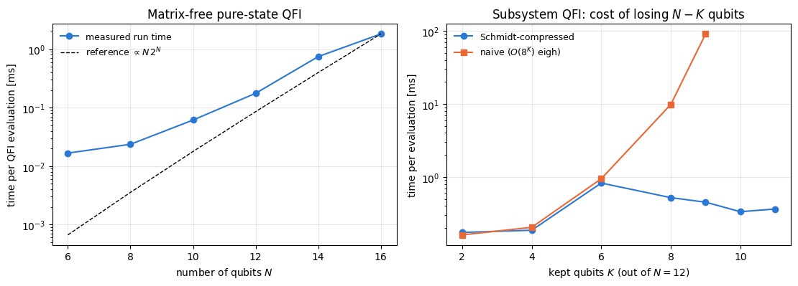
The left panel is to be read as a comparison of slopes: the dashed reference is only fixed up to a constant, and it has been anchored at the last point. Below \(N\approx10\) the measured curve is almost flat: the arithmetic there is faster than the fixed cost of dispatching a compiled program from Python (a few tens of microseconds), so the measurement reports the overhead rather than the algorithm. Above \(N\approx10\) it turns over and climbs steadily. The ratio of successive run times there depends on the machine and on its load: on an idle machine we measured a factor of about \(2.5\)–\(4\) per additional pair of qubits, below the \(4\,(N+2)/N\approx4.7\) that counting operations predicts (the constant overhead has not fully disappeared at \(N=12\), and the largest einsums are the first ones big enough for XLA to spread across several cores), while on a loaded machine the largest sizes compete for cores and the ratio can exceed \(4.7\). The lesson is the one every benchmark teaches: an \(O(\cdot)\) is a statement about arithmetic, a timing is a statement about one machine at one moment, and they coincide only in the window where neither dispatch nor parallelism dominates. At \(N=16\) (a \(65\,536\)-dimensional space) one QFI evaluation takes milliseconds (about \(2\) ms on an idle machine, and up to tens of milliseconds when other jobs compete for the processor; the printed value depends on the load during the build), so a sweep over hundreds of parameters is a matter of seconds. Compare that with the dense alternative: a \(2^{16}\times2^{16}\) complex matrix would need \(69\) GB.
The right panel is the point of Schmidt compression. Without it the cost rises steeply with the number of kept qubits and becomes unusable near \(K=N\) — precisely the physically interesting regime of losing one or two particles. With compression the run time is essentially flat in \(K\); the two curves coincide for \(K\le6\) (where \(d_A\le d_B\) and the compression branch is not taken at all) and separate sharply afterwards, reaching the speed-up printed above at \(K=9\). At \(K=11\) the naive route would have to diagonalise a \(2048\times2048\) matrix that we know in advance has rank at most \(2\).
Numerical practice. Whenever a matrix is built as \(\Psi\Psi^\dagger\) from a tall-and-thin \(\Psi\), its rank is bounded by the thin dimension. Never hand such a matrix to a general eigensolver — project onto the column span first. The same idea appears as “low-rank updates” in optimisation and as “active subspace” methods in uncertainty quantification.
17. Key takeaways
Estimation theory works for any meter. A meter is described by the distribution \(p(x\vert\theta)\) of its readings. The score \(\partial_\theta\ln p\) has zero mean, its mean square is the classical Fisher information \(F_C=\sum_x(\partial_\theta p)^2/p=-\mathbb E[\partial_\theta^2\ln p]\), which adds up over \(M\) repetitions, and every locally unbiased estimator obeys \(\mathrm{Var}\ge1/(MF_C)\) (Cauchy–Schwarz on the covariance of estimator and score, Section 4.5). Equality at finite \(M\) requires an exponential family; maximum likelihood reaches the bound asymptotically, which we measured with error bars and confirmed by an exact binomial sum (bias \(-\cot\theta/(2M)\), excess of \(M\,\mathrm{Var}\) over \(1/F_C\) of \(1\%\) at \(M=100\) for \(\theta=\pi/2\)).
For a quantum meter the measurement is a choice, and \(F_Q\) bounds every choice. With \(p(x\vert\theta)=\mathrm{Tr}(E_x\rho_\theta)\) and the symmetric logarithmic derivative \(\partial_\theta\rho=\tfrac12(L\rho+\rho L)\), the quantum Fisher information \(F_Q=\mathrm{Tr}(\rho L^2)\) satisfies \(F_C\le F_Q\) for every POVM, with equality in the eigenbasis of \(L\) (Braunstein–Caves, proved in Section 5.3 and tested on 600 random POVMs); hence \(\Delta\theta\ge1/\sqrt{MF_Q}\).
For pure states \(F_Q\) reduces analytically to \(4\,\mathrm{Var}(G)\).\(L=2\partial_\theta\rho\) solves the SLD equation, \(F_Q=4(\langle\dot\psi\vert\dot\psi\rangle-\vert\langle\psi\vert\dot\psi\rangle\vert^2)\) for any curve, and \(4\,\mathrm{Var}(G)\) for unitary encoding, independent of \(\theta\). Geometrically \(\sqrt{F_Q}/2\) is the speed of the state, since the fidelity of neighbouring states is \(1-F_Q\delta^2/4\). Matrix-free it costs \(O(N2^N)\).
Two limits, both proved and measured. A product state has \(F_Q\le N\) (single-spin variances add), every state \(F_Q\le N^2\) (the spectrum of \(J_z\) has width \(N\)), and the GHZ state reaches \(N^2\) through its parity fringe \(\cos(N\theta)\). The GHZ gain is a factor \(N\) in Fisher information and \(\sqrt N\) in error over \(N\) unentangled spins, and simulated maximum-likelihood estimates follow \(1/\sqrt{NM}\) and \(1/(N\sqrt M)\).
The GHZ advantage is fragile. One lost particle sets \(F_Q\) to exactly zero; independent dephasing gives \(N^2(1-2p)^{2N}\), optimal at \(N^\ast=-1/\ln(1-2p)\) and below the product state beyond a crossing; collective dephasing destroys the GHZ coherence at a rate \(\propto N^2\) (superdecoherence, fitted exponent \(2\)) and limits every probe to \(F_Q\le F_Q^{(0)}/(1+F_Q^{(0)}\sigma^2)<1/\sigma^2\), and a detection error \(\epsilon\) reduces the parity contrast by \((1-2\epsilon)^N\).
The state alone does not decide.\(F_Q\) is a property of the pair (state, generator). The \(3\times3\) matrix \(\mathcal F_{ab}=4C_{ab}\) makes the direction dependence explicit, \(F_Q(\mathbf n)=\mathbf n^{\mathsf T}\mathcal F\mathbf n\), and the optimum over the sphere is the largest eigenvalue of a \(3\times3\) matrix — one eigh, no optimisation.
Entanglement is necessary but not sufficient.\(F_Q>\lfloor N/k\rfloor k^2+(N\bmod k)^2\) certifies entanglement depth \(k+1\); yet Haar-random states (near-maximal entropy) sit at \(F_Q\approx N d/(d+1)\), just below the SQL, and the cluster state beats \(N\) only by a boundary term \(2\). Metrology rewards coherent superpositions of very different generator eigenvalues, which the entanglement entropy does not measure.
Noise and loss, beyond GHZ. Mixed-state QFI under three channels decays exponentially in \(N\) for the GHZ state at fixed error probability. States that degrade gracefully under loss, such as the Dicke state (which keeps \(15\) of its \(40\) after one lost qubit at \(N=8\)), are the better candidates for real detectors.
Implementation. Validate every new quantity against at least two independent routes before plotting it (we used matrix-free, dense, SLD, finite differences and jax.jacfwd), and pair every check with a wrong control that must fail; exploit rank structure (Schmidt compression turned an \(O(8^K)\) eigendecomposition into an \(O(8^{N-K})\) one, more than two orders of magnitude at \(K=9\), \(N=12\) in our runs).
18. Exercises
★ Read the bound. A magnetometer uses \(N=100\) atoms and \(M=10^4\) repetitions. Compute the smallest phase uncertainty \(\Delta\theta\) allowed at the standard quantum limit and at the Heisenberg limit, and the factor between them. Then use Eq. (111) to find the per-qubit dephasing probability \(p\) at which the GHZ advantage is entirely lost, i.e. at which \(N^2(1-2p)^{2N}=N\).
★ Fisher information of a tilted readout. For the single qubit of Section 6.6, compute analytically and then with fisher_information_ad the Fisher information of a measurement along the direction \(\mathbf m=(\cos\alpha,\sin\alpha,0)\) in the equatorial plane. Show that \(p(\pm)=\left(1\pm\cos(\theta-\alpha)\right)/2\) and that \(F_C(\theta)\) is the same for every \(\alpha\), so that a whole family of readouts saturates the quantum Cramér–Rao bound. Then set \(\alpha=\theta\), so that the fringe sits at an extremum: what does fisher_information_ad return, what is the limit of \(F_C\) as \(\alpha\to\theta\), and which of the two conditions of Section 4.7 has been violated?
★★ Dicke states are a family (physics). Compute \(F_Q\) for \(\vert D_N^k\rangle\) with \(G=J_x\) for all \(k=0,\dots,N\) at \(N=10\) and plot it against \(k\). Derive the closed form from \(\langle J_x^2\rangle=\tfrac12[j(j+1)-m^2]\) with \(j=N/2\), \(m=N/2-k\), and check your formula against the numbers. Which \(k\) is optimal and why is \(k=N/2\) not a coincidence?
★★ Superposition of the useless (extend the code). Take two Haar-random states \(\vert\psi_1\rangle,\vert\psi_2\rangle\) at \(N=8\) and compute \(F_Q\) of \((\vert\psi_1\rangle+e^{i\varphi}\vert\psi_2\rangle)/\mathcal N\) for \(\varphi\in[0,2\pi)\). Two metrologically useless states — how useful can their superposition be? Then repeat with the pair\(\vert0\cdots0\rangle\) and \(\vert1\cdots1\rangle\), each of which has \(F_Q=0\) for \(G=J_z\). Explain both results with Eq. (75): what property of the two summands decides whether the superposition gains anything?
★★ Optimal direction along a twisting evolution (extend the code). Evolve \(\vert+\rangle^{\otimes N}\) with the engine’s oat_evolve for a range of twisting times, and plot \(\lambda_{\max}(\mathcal F)\) together with the three Cartesian values \(F_Q(J_x),F_Q(J_y),F_Q(J_z)\). By how much does choosing the optimal direction beat the best Cartesian one? (This is a preview of notebook 34.)
★★ Noise before or after (extend the code). Section 14 applied the channel before the encoding. Redo the dephasing sweep with the channel applied after\(U(\theta)\) and compare. Then do the same for \(G=J_x\) instead of \(G=J_z\). Which combinations give identical results, and what property of the channel explains it? (Notebook 30 answers this in detail — try to get there first.)
★★★ The cluster state’s boundary (physics). We found \(\lambda_{\max}(\mathcal F)=N+2\) for the open cluster chain. Verify that the excess disappears for the periodic cluster state (cluster_state(N, periodic=True)), identify the stabiliser responsible for the off-diagonal elements of \(\mathcal F\) in the open chain, and confirm your explanation by computing the relevant correlator with expect_pauli_string.
★★★ A better lossy resource (extend the code). Search numerically for the pure symmetric state of \(N=8\) qubits that maximises \(F_Q\) of the reduced state after losing one qubit. Parametrise a state in the symmetric (Dicke) subspace by \(N+1\) complex amplitudes, use jax.grad on subsystem_qfi and Adam, and compare the optimum with GHZ, with \(\vert D_N^{N/2}\rangle\), and with the ideal \(F_Q=N^2\). How much of the Heisenberg advantage can survive one lost particle? Hint on the numerics:subsystem_qfi differentiates through jnp.linalg.eigh, whose gradient is undefined when two eigenvalues coincide. Starting from a random complex vector of amplitudes the gradient is finite, but a symmetric starting point such as GHZ sits exactly on a degeneracy and returns nan; start away from it, and check jnp.isfinite on the gradient before feeding it to the optimiser.
★★★ Entanglement depth from two collective moments (extend the code). Sørensen and Mølmer (2001) define, for a single spin \(j\), the curve \(F_j(x)\) as the smallest value of \(\mathrm{Var}(j_z)/j\) compatible with \(\langle j_x\rangle=jx\), and show that a state whose entangled blocks contain at most \(k\) qubits obeys \(V_{\min}/(N/2)\ge F_{k/2}\big(\vert\langle\mathbf J\rangle\vert/(N/2)\big)\), with \(V_{\min}\) the smallest variance perpendicular to the mean spin. For integer \(j\) the minimiser has \(\langle j_y\rangle=\langle j_z\rangle=0\) and is the ground state of \(j_z^2-\lambda j_x\) for some \(\lambda\ge0\). Build \(j_x\) and \(j_z\) as \((2j+1)\times(2j+1)\) matrices, trace \(F_j\) by bisection on \(\lambda\), and check \(F_1(x)=\tfrac12\left(1-\sqrt{1-x^2}\right)\). Then apply the criterion to the one-axis-twisted state at \(N=8\) at the angle that minimises \(\xi_R^2\) (\(\mu=0.2278\), \(\xi_R^2=0.3541\)). Use integer \(j\) only, i.e. even \(k\): for half-integer \(j\) the ground-state construction gives the minimum only above a bifurcation point between \(x\approx0.83\) and \(0.88\), below which the minimiser breaks the symmetry, and excluding \(k\)-producibility excludes every smaller \(k\) anyway. Check values: \(\vert\langle\mathbf J\rangle\vert/(N/2)=0.8326\), \(V_{\min}/(N/2)=0.1227\), \(F_3=0.1284\), \(F_4=0.1069\). The state is therefore not \(6\)-producible and has entanglement depth at least \(7\), while its \(F_Q=27.35\) certifies only depth \(4\) through Eq. (122) (the \(k=3\) and \(k=4\) bounds are \(22\) and \(32\)). Explain why two collective moments can certify more than the full quantum Fisher information.
References
C. W. Helstrom, Quantum Detection and Estimation Theory (Academic Press, New York, 1976) — the monograph that collects Helstrom’s estimation theory, begun in C. W. Helstrom, Minimum mean-squared error of estimates in quantum statistics, Phys. Lett. A 25, 101 (1967): the symmetric logarithmic derivative and the quantum Cramér–Rao bound.
S. L. Braunstein and C. M. Caves, Statistical distance and the geometry of quantum states, Phys. Rev. Lett. 72, 3439 (1994) — the inequality of Section 5.3: the classical Fisher information of every measurement is bounded by the quantum Fisher information, attained in the eigenbasis of the SLD; the geometric (statistical-distance) reading of Section 6.4.
V. Giovannetti, S. Lloyd and L. Maccone, Quantum-enhanced measurements: beating the standard quantum limit, Science 306, 1330 (2004), and Quantum metrology, Phys. Rev. Lett. 96, 010401 (2006) — the standard quantum limit versus the Heisenberg limit.
L. Pezzè and A. Smerzi, Entanglement, nonlinear dynamics, and the Heisenberg limit, Phys. Rev. Lett. 102, 100401 (2009) — Eq. (121): \(F_Q>N\) witnesses entanglement.
P. Hyllus, W. Laskowski, R. Krischek, C. Schwemmer, W. Wieczorek, H. Weinfurter, L. Pezzè and A. Smerzi, Fisher information and multiparticle entanglement, Phys. Rev. A 85, 022321 (2012), and G. Tóth, Multipartite entanglement and high-precision metrology, Phys. Rev. A 85, 022322 (2012) — Eq. (122), the entanglement-depth bound for \(k\)-producible states and its proof from block-wise variance bounds and convexity.
T. Popoviciu, Sur les équations algébriques ayant toutes leurs racines réelles, Mathematica (Cluj) 9, 129–145
— the smallest interval containing all the real roots of a polynomial with given first two coefficients, i.e. \(\mathrm{Var}\le(a_{\max}-a_{\min})^2/4\) for \(n\) equally weighted values; Eq. (101) states it for any distribution.
M. G. A. Paris, Quantum estimation for quantum technology, Int. J. Quantum Inf. 7, 125–137 (2009) — a compact, readable review of local quantum estimation theory (Sections 4–6): the classical and quantum Cramér–Rao bounds, the SLD and its eigenbasis form, the optimal measurement, and the Bures-metric reading.
L. Pezzè, A. Smerzi, M. K. Oberthaler, R. Schmied and P. Treutlein, Quantum metrology with nonclassical states of atomic ensembles, Rev. Mod. Phys. 90, 035005 (2018) — the standard modern review; collective spins, Dicke states, squeezing, experiments.
A. Sørensen, L.-M. Duan, J. I. Cirac and P. Zoller, Many-particle entanglement with Bose–Einstein condensates, Nature 409, 63 (2001) — spin-squeezed states from collisions in a condensate; \(\xi_R^2<1\) implies entanglement (Section 13.1).
A. Sørensen and K. Mølmer, Entanglement and extreme spin squeezing, Phys. Rev. Lett. 86, 4431 (2001) — the smallest transverse variance of a spin \(j\) at a given mean spin, and its use to certify entanglement depth from collective-spin measurements (Section 13.1).
G. Tóth and I. Apellaniz, Quantum metrology from a quantum information science perspective, J. Phys. A 47, 424006 (2014) — the entanglement-witness side of the QFI: convexity, \(F_Q\le4\mathrm{Var}(G)\), the separable bound \(F_Q\le N\) derived from convexity, and the \(k\)-producibility bounds of Hyllus et al. and Tóth.
H. Cramér, Mathematical Methods of Statistics (Princeton University Press, 1946) — the classical Cramér–Rao bound and the asymptotic theory of maximum likelihood.
E. L. Lehmann and G. Casella, Theory of Point Estimation, 2nd ed. (Springer, New York, 1998) — the information inequality, efficient estimators and exponential families, and the asymptotic efficiency of maximum likelihood.
S. F. Huelga, C. Macchiavello, T. Pellizzari, A. K. Ekert, M. B. Plenio and J. I. Cirac, Improvement of frequency standards with quantum entanglement, Phys. Rev. Lett. 79, 3865 (1997) — under Markovian dephasing during the interrogation, maximally entangled states give the same resolution as uncorrelated atoms (Section 10.4).
T. Monz, P. Schindler, J. T. Barreiro, M. Chwalla, D. Nigg, W. A. Coish, M. Harlander, W. Hänsel, M. Hennrich and R. Blatt, 14-qubit entanglement: creation and coherence, Phys. Rev. Lett. 106, 130506 (2011) — GHZ coherence decaying with the square of the number of qubits under correlated phase noise (Section 10.3).
Marcin Płodzień, PhD
Citation: M. Płodzień, Quantum Many-Body Simulation: from a single spin to quantum machine learning (2026), https://marcinplodzien.github.io/quantum-many-body-simulation/